- CHAPTER 1- SALIENT FEATURES OF INDIAN SOCIETY
- Key Data & Facts at a Glance
- Demographic & Linguistic Diversity:
- India has more than 19,500 languages or dialects spoken as mother tongues (Census 2011). However, only 121 are classified as languages and 22 in the 8th Schedule.
- 22 languages are listed in the 8th Schedule of the Constitution, with about 97% of the population having one of these as their mother tongue.
- Religious Composition (Census 2011):
| Religion | Percentage |
|---|
| Hindus | 79.8% |
| Muslims | 14.2% |
| Christians | 2.3% |
| Sikhs | 1.7% |
| Buddhists | 0.7% |
| Jains | 0.4% |
- Social Structure- Caste & Tribe:
- Scheduled Castes (SCs) comprise 16.6% and Scheduled Tribes (STs) comprise 8.6% of the population (Census 2011).
- Caste-Based Violence:
- 57,582 cases of caste-based crimes were reported in 2022 (NCRB).
- Caste and Wealth Inequality:
- India's top 10% own 77% of the national wealth. An Oxfam report highlights deep correlation with caste, with upper castes holding a disproportionate share.
- Caste in Politics:
- 80% of political parties field candidates based on caste calculus (CSDS, 2019).
- Sex Ratio Disparity:
- Sex ratio among Tribes is more favourable to women than among Scheduled Castes, often attributed to lower prevalence of dowry and different social structures in many tribal communities.
- Social Institutions- Family & Marriage:
- Joint vs. Nuclear Households:
- Only about 20% of households are traditional joint or extended families (Census 2011). Nuclear families now make up about 50% of households (2022 data).
- Inter-Caste Marriages:
- Remain low at 11.4% (NFHS-5, 2021), though rates are higher in urban areas.
- Love marriages:
- Love marriages increased from 3% (1970) to 12% (2020), driven by education and urbanization (Allendorf & Pandian, 2016).
- Self-arranged marriages:
- 72% of urban youth prefer "self-arranged" marriages but seek family approval (ISS, 2021).
- Caste endogamy:
- About 60% of Shaadi.com users still prioritize caste (Thomas & K., 2019).
- Inter-Religious Marriages:
- Even rarer, at around 2.1%. Recent controversies around anti-conversion laws in several states reflect the societal and political resistance to such unions.
- Single-Parent Households:
- An estimated 4.5% of all Indian households are run by single mothers (UN Report, 2019).
- Glossary of Essential Concepts
- Diversity vs. Pluralism:
- Diversity refers to the simple existence of variety (linguistic, religious, etc.) within a society. Pluralism, a more profound concept, implies a positive valuation and active engagement with this diversity, where different groups maintain their unique identities while participating in a common national life.
- Unity in Diversity:
- The core philosophy of Indian nationalism, suggesting that beneath the surface of immense diversity lies a fundamental, civilizational unity bound by a shared history, cultural syncretism, and constitutional values.
- Secularism (Indian Context):
- Unlike the Western model of a strict "wall of separation" between state and religion, Indian secularism is based on the principle of "principled distance," where the state treats all religions with equal respect and can intervene to ensure social justice and reform.
- Caste (Varna vs. Jati):
- A foundational concept. Varna is the four-fold textual/ideological model (Brahmin, Kshatriya, Vaishya, Shudra). Jati is the complex system of thousands of endogamous local communities that represents the lived, operational reality of caste.
- Sanskritization & De-Sanskritization (M.N. Srinivas):
- Sanskritization is the process where lower or middle castes adopt the rituals and practices of higher castes to improve their social status. De-Sanskritization refers to the opposite process, where dominant castes may adopt secular or non-traditional practices.
- Dominant Caste (M.N. Srinivas):
- A key concept for understanding rural power dynamics, referring to a caste that is numerically strong in a local area and wields significant economic and political power.
- Communalism:
- An ideology that promotes allegiance to a religious community over the larger society or nation, often fostering hostility towards other religious groups.
- Regionalism:
- An expression of a shared identity based on a specific geographical region, often rooted in common language, culture, and history. It can range from demands for statehood and autonomy (sub-nationalism) to negative, chauvinistic assertions against outsiders (parochialism).
- Globalization:
- The process of intensifying social, economic, cultural, and political linkages across the globe.
- Cultural Homogenization vs. Glocalization vs. Cultural Hybridity:
- Theoretical outcomes of globalization's cultural impact. Homogenization is the fear of a single, dominant global culture (e.g., Americanization). Glocalization is the process where global products are adapted to local cultures (e.g., McAloo Tikki). Cultural Hybridity refers to the creation of new, mixed cultural forms.
- Sacrament vs. Contract (in Marriage):
- A key axis of social change. The sacramental view treats marriage as a sacred, indissoluble religious union. The contractual view sees it as a partnership based on companionship, individual choice, and mutual consent, which can be dissolved.
- Obscurantism:
- The practice of deliberately resisting reason, inquiry, and enlightenment, often by appealing to tradition or dogma to suppress critical thought.
- Social Capital:
- The networks of relationships among people who live and work in a particular society, enabling that society to function effectively. The decline of joint families or community interactions can be analyzed as an erosion of social capital.
- Patriarchy:
- A social system where men hold primary power and authority over women, controlling resources, mobility, and decision-making. While a core concept for the "Women" topic, it is also a salient feature of India's overall social structure.
- Introduction
- Indian society, often described as a 'Civilizational State', is marked by unparalleled historical depth and cultural complexity. Its most defining characteristic is the dynamic interplay between Continuity and Change. While ancient social institutions and values persist, they are constantly being reshaped by modern forces, creating a social fabric that is both resilient and adaptive.
-
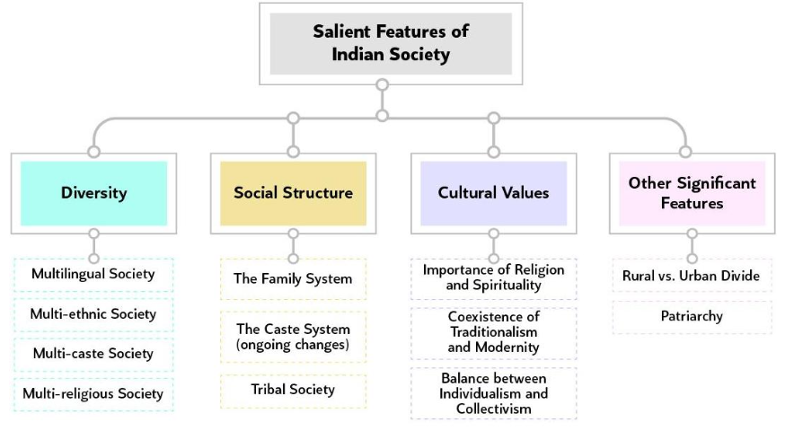
- Student Notes:
- India as a Civilizational State
- India is often considered a civilizational state due to its continuous cultural and historical identity that spans over 5,000 years. Unlike a typical nation-state, India’s identity is shaped by its diverse yet interconnected traditions, including Hinduism, Buddhism, Jainism, and various regional cultures.
- This shared cultural heritage, coupled with its ancient social and philosophical practices, defines India’s unique position in the world. India’s unity in diversity is a testament to its deep-rooted civilizational continuity. Other examples of civilizational states include China, Russia, Egypt etc.
- The uniqueness of Indian society lies in its remarkable ability to assimilate diverse external influences—from ancient invaders to modern globalization—without losing its fundamental cultural ethos. This process of absorption and synthesis makes India a fascinating and complex subject of study.
- 1. The Foundations of Indian Society- Traditional Structures and Values
- To understand contemporary India, we must first appreciate the foundational pillars of its traditional social structure. These enduring features have shaped Indian society for centuries and continue to influence its present.
- 1.1. The Principle of Diversity
- India’s most celebrated salient feature is its immense diversity, which is not just a collection of differences but a lived reality shaping its identity.
-
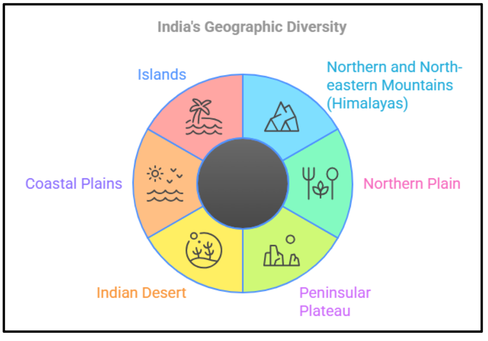
- Linguistic Diversity:
- India is a mosaic of languages. The 1961 Census listed 1,652 mother tongues, while later surveys have identified over 19,500 languages or dialects. As per the Census 2011, there are 121 languages spoken by 10,000 or more people, and 22 of these are officially recognized in the Eighth Schedule of the Constitution. This deep-rooted linguistic identity was the primary basis for the reorganization of states after Independence.
-
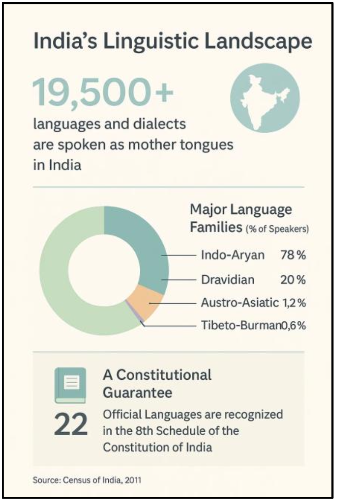
- Religious Diversity:
- India is the birthplace of four major world religions—Hinduism, Buddhism, Jainism, and Sikhism—and has been a welcoming home to others like Islam, Christianity, Judaism, and Zoroastrianism for centuries. This has led to not just coexistence but often a unique syncretism, where beliefs and practices have intermingled.
- Ethnic and Racial Diversity:
- The Indian population is a blend of major racial groups—Caucasoid, Mongoloid, and Negroid—along with other groups like the Australoid, contributing to a rich tapestry of physical features and ethnic identities.
- Manifestations in Tangible and Intangible Culture:
- Festivals:
- From harvest festivals like Onam in Kerala and Baisakhi in Punjab to religious celebrations like Eid and Durga Puja, festivals vary widely across regions and communities, each with unique rituals.
- Cuisine:
- Food habits are deeply linked to local ecology. This results in a rice-based cuisine in the South and East, wheat-based in the North, and unique dishes like Dal Baati Churma in arid Rajasthan reflecting its environment.
- Performing Arts:
- India has a rich heritage of classical dances like Bharatanatyam (Tamil Nadu) and Kathakali (Kerala), alongside vibrant folk dances like Bhangra (Punjab) and Ghoomar (Rajasthan).
- Clothing & Architecture:
- From the distinct draping style of the saree in the south to the phiran in Kashmir, clothing is diverse. Similarly, architectural styles range from the towering Gopurams of South Indian temples to the grand domes and arches of Mughal architecture.
- Student Notes:
- Case Study- Regions as Cultural Units
- The concept of a "cultural region" often transcends administrative boundaries. A prime example is the Mithila region.
- Its unique cultural identity—defined by the Maithili language, shared social customs, and distinct art forms like Madhubani painting—spans across large parts of northern Bihar and extends into the Terai region of Nepal. This shows that cultural identities in India are often more organic and fluid than the neat lines of state borders suggest.
- 1.2. The Structure of Hierarchy- The Caste System (Jati and Varna)
- The caste system has been the most significant and defining feature of India’s traditional social hierarchy. It is crucial to distinguish between its two forms:
-
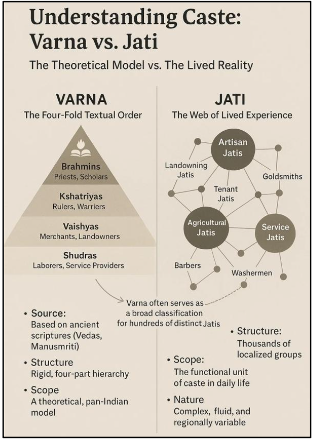
- Varna:
- This is the four-fold textual or ideological model found in ancient texts, dividing society into four hierarchical categories: Brahmin, Kshatriya, Vaishya, and Shudra.
- Jati:
- It is a complex system of thousands of local, endogamous communities, each with a traditional occupation, social status, and rules of interaction. As per scholars, it is the Jati, not the Varna, that has been the "real and effective unit" of the caste system.
- The traditional Jati system was characterized by:
- Hereditary Membership:
- Caste status was determined by birth and was immutable.
- Endogamy:
- Marriage was strictly restricted to within one’s own Jati.
- Occupational Specialization:
- Each Jati was associated with a traditional occupation, often linked through the Jajmani system.
- Hierarchy and Purity-Pollution:
- Jatis were arranged in a rigid hierarchy based on concepts of ritual purity and pollution, which governed social interactions and was the basis for the practice of untouchability.
-
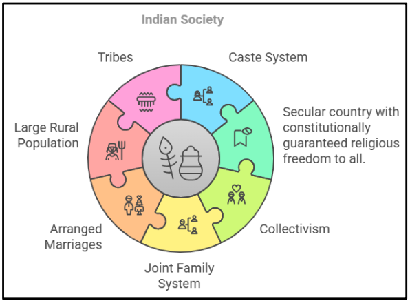
- 1.3. The Structure of Community- Family, Kinship, and Village
- The Traditional Joint Family:
- The ideal and prevalent form in traditional India was the joint family. This was a multi-generational patriarchal unit where members shared a common residence, kitchen, and property. As a social institution, it performed several key functions as mentioned in the diagram.
- Kinship System:
- Beyond the family, life was deeply embedded in extensive kinship networks. These ties, both of blood (consanguineous) and marriage (affinal), defined an individual’s rights, duties, and social circle, forming the bedrock of social organization.
-
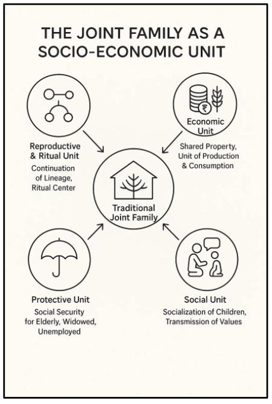
- Student Notes:
- "Unity in Diversity"- Philosophy and Practice
- The idea of "Unity in Diversity" is not just a modern slogan but a historical reality rooted in the Indian ethos. It reflects a spirit of assimilation and coexistence that has allowed India to sustain its culture through millennia.
- Philosophical Roots & Syncretism in Practice:
- Ancient Philosophy:
- The concept of 'Vasudhaiva Kutumbakam' (the world is one family) reflects a historical spirit of tolerance and acceptance.
- Religious Syncretism:
- The Bhakti and Sufi movements of the medieval period created powerful spiritual traditions that transcended religious divides. Shared sacred sites, like the Ajmer Sharif Dargah in Rajasthan, are venerated by all, showcasing a living tradition of syncretism.
- Cultural Hybridity:
- This unity is also visible in Indo-Islamic architecture, the development of the Urdu language (a blend of Persian and local dialects), and various art forms.
- Contemporary Manifestations:
- This ethos continues today. Large metropolitan cities like Delhi, Mumbai, or Bengaluru are often described as "cultural pockets of small India". Here, people from every region of the country live and work together, participating in each other’s festivals (like Durga Puja, Ganesh Chaturthi, Eid), creating a new, cosmopolitan form of unity amidst diversity.
- 2. The Great Churn- Forces of Change in Modern India
- The traditional social structures of India, while resilient, have been subjected to immense pressure from powerful forces of change, particularly since the mid-20th century.
-
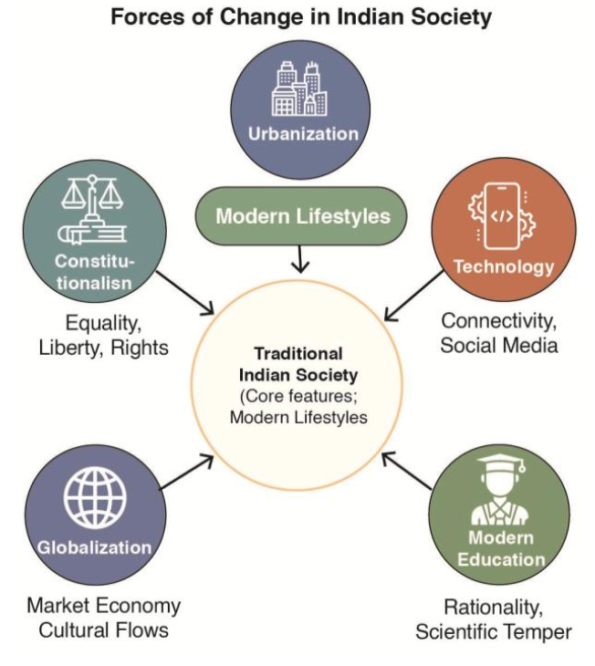
- 2.1. Constitutionalism, Democracy, and Law
- The Constitution of India seeks to replace the traditional principles of hierarchy and inequality with the modern values of liberty, equality, and fraternity.
- Universal Adult Franchise:
- The introduction of one person, one vote, provided a powerful tool of political empowerment for marginalized groups, which enabled them to challenge the authority of traditionally dominant castes.
- Fundamental Rights & Legal Reforms:
- It provided a legal framework to fight age-old discrimination. Key articles like Art. 15 (prohibition of discrimination), Art. 17 (abolition of untouchability), and Art. 21 (right to life and dignity) became the basis for social justice movements and legal interventions.
- Affirmative Action (Reservations):
- The policy of reservations for SCs, STs, and OBCs in education and government jobs was a direct structural intervention designed to rectify historical injustices and promote upward social mobility.
- Student Notes:
- The Constitution as a Social Revolution
- The Indian Constitution is often viewed as a political or legal document, but socially, it can be understood as a manifesto for social revolution. It launched a direct assault on the core principles that underpinned traditional Indian society for centuries.
-
| Principle of Traditional Society | Constitutional Counter-Principle | Key Instrument/Article |
|---|
| Hierarchy (Based on caste, gender, age) | Equality (All citizens are equal before the law) | Articles 14, 15, 17 |
| Holism (Community over the individual) | Individualism (The individual is the basic unit, with fundamental rights) | Articles 19, 21 |
| Continuity (Based on heredity and tradition) | Change & Justice (State empowered to make laws for social reform and justice) | Directive Principles of State Policy |
- The ongoing tensions and changes in Indian society can be seen as the unfolding of this revolutionary agenda.
- 2.2. Planned Development and Industrialization
- The post-independence state adopted a model of planned development through Five-Year Plans, with a strong emphasis on industrialization. This had far-reaching social consequences:
- New Economic Opportunities:
- It created new, non-caste-based jobs in factories, public sector enterprises, and new cities, offering avenues for occupational mobility outside the traditional jajmani system.
- New Class Formations:
- It led to the emergence of new social classes, such as a modern industrial working class and a new professional/managerial middle class, which often coexisted with older caste identities.
- Case Study- The Green Revolution’s Social Impact
- The Green Revolution in the 1960s, a state-led development initiative, transformed Indian agriculture. While it successfully boosted food production, its social impact was complex:
- Economic Disparity:
- It primarily benefited large and medium farmers in specific regions (Punjab, Haryana, Western UP) who could afford the new technology (HYV seeds, fertilizers, machinery), significantly increasing class inequality within villages.
- Regional Imbalance:
- It exacerbated developmental differences between irrigated western/northern states and the rain-fed regions of eastern and central India.
- This shows how even well-intentioned development projects can have unintended social consequences, creating new forms of inequality.
- 2.3. Urbanization
- The steady shift of population from rural villages to urban centers has been a powerful solvent of traditional social norms.
- Anonymity and Weaker Caste Norms:
- The anonymity of city life makes the enforcement of rigid caste rules regarding interaction, occupation, and purity-pollution difficult. While caste identity does not disappear, its public manifestation is often weakened.
- New Forms of Association:
- Urban life fosters new, non-caste-based social relationships based on occupation, neighborhood, or shared interests, creating a more complex social environment.
- 2.4. Modern, Secular Education
- The spread of a modern, secular education system, theoretically open to all, has been a critical agent of change.
- Social Mobility:
- For generations of Dalits, Adivasis, and women, education has been the most important pathway to upward social mobility, enabling entry into professions and the middle class.
- Spread of Modern Values:
- Modern education has been instrumental in disseminating modern, liberal values such as rationalism, individualism, democracy, and equality, which directly challenge traditional hierarchical values.
- 2.5. Technology and Mass Media
- The penetration of mass media—from print and radio in the early years to television and now the internet and social media—has fundamentally altered Indian society.
- National Consciousness:
- It has helped create a shared "national imagination" by connecting disparate parts of the country and broadcasting common cultural content.
- Exposure to New Lifestyles:
- Media has exposed even remote villages to urban and global lifestyles, influencing aspirations, consumption patterns, and social norms.
- New Platforms for Mobilization:
- Technology has provided new tools for social and political mobilization, allowing previously voiceless groups to organize and articulate their demands.
- 2.6. Globalization
- While its cultural impact will be discussed later, globalization since the 1990s has acted as a powerful accelerator for all the above forces. It has intensified economic integration, sped up the flow of information and cultural products, and created new forms of work, further churning India’s traditional social structures.
- 3. Impact and Transformation - Caste, Tribe, and Identity Politics
- The forces of change discussed in the previous module have created a dynamic churn within India’s traditional social structures. This has not led to a simple erosion of old identities but to their complex transformation, persistence, and re-articulation in the modern context.
- 3.1. Caste in the 21st Century- Fluidity, Persistence, and New Forms
- The most common debate regarding the caste system is whether it is weakening or strengthening. The sociological consensus is that it is doing both simultaneously—weakening in some aspects while re-emerging in new, powerful forms.
- The Persistence of Caste- While its ritualistic aspects (purity-pollution) have declined in public life, caste’s influence persists strongly in key areas:
- A. Caste in the Social Sphere
- Caste Endogamy:
- Marriage within one’s caste remains a dominant norm in India.
- Only 11.4% of marriages are inter-caste (NFHS-5, 2021), with the figure dropping to 5% in rural Bihar/UP.
- Online, a 2019 study published in the EPW found that over 60% of profiles mention caste preferencesprofiles on Shaadi.com specify caste.
- Offline, honour killings for mixed marriages remain a grim reality.
- Segregation and Purity-Pollution:
- 47% of rural respondents admit to using separate utensils for Dalits (Social Attitudes Survey, 2023).
- 33% of Dalit employees hide their caste at work to avoid discrimination (Equality Labs Report, 2023).
- Social Networks:
- Caste remains a primary basis for forming networks to gain access to jobs, promotions, and business opportunities.
- B. Caste in Politics
- Caste is a central axis of Indian politics, used for both mobilization and competition.
- Electoral Politics:
- Parties often select candidates and appeal to voters based on caste interests, which strengthens caste identity as groups compete for resources and representation.
- Caste-based Mobilization:
- Many castes (e.g., Yadavs in UP/Bihar, Mahars in Maharashtra) have used politics to secure government benefits and representation.
- Caste alliances are formed to achieve political power (e.g., Patidar-Kshatriya alliance in Gujarat, Mandal-Kamandal politics).
- C. Caste and the Economy
- Caste continues to significantly influence economic outcomes and opportunities.
- Wealth and Income Inequality:
- There is a stark correlation between caste and wealth.
- 22.3% of higher caste Hindus own 41% of the nation’s wealth, while 7.8% of STs own only 3.7% (SPPU-JNU Study, 2019).
- Poverty is disproportionately high among lower castes:
- the headcount ratio is 50.6% for STs and 33.3% for SCs, compared to 15.6% for ‘Others’ (2015-16 data).
- Caste in Urban and Formal Sectors:
- Dalits constitute 20.3% of the slum population in urban India, significantly higher than their overall urban share of 12.6%.
- 94% of manual scavengers are SC/ST (Safai Karmachari Andolan report).
- D. Caste-Based Violence
- The assertion of basic rights by Dalits often triggers violent backlash.
- The increasing trend of violence is linked to instances of inter-caste marriage and Dalits demanding rights to land, justice, and education.
- The Una attack in Gujarat, where Dalits were assaulted for demanding land ownership, is a prominent example.
- NCRB 2022 data shows over 67,000 cases were registered under the SC/ST (Prevention of Atrocities) Act.
- The Fluidity and New Forms of Caste:
- Caste has proven to be remarkably adaptive to democratic politics and a market economy.
- From Ritual Hierarchy to Political Mobilization:
- Caste has transformed from a vertical ritual hierarchy into a tool for political mobilization in the form of horizontal identity blocs. It has become the basis for forming pressure groups and vote banks to demand state benefits and political power.
- New Associational Forms:
- The traditional Jati panchayat has given way to modern, formal caste associations (e.g., Kshatriya Mahasabha, Nadar Sangam) that run educational institutions, lobby the government, and work for the welfare of their members. This reflects a "horizontal stretch" of caste, where modern communications unite caste members across regions.
- Caste as Identity:
- For many, especially among the youth and diaspora, caste is increasingly being articulated not just as a structure of discrimination but also as a source of cultural identity, history, and pride.
- Student Notes:
- ‘Caste in Everyday Life’- Beyond Structure, Towards Affect
- To understand why caste persists so strongly, we must look beyond its structural and political dimensions to its role in "everyday life." Drawing on insights from recent sociological studies, caste is not just a concept but an "affective" reality—experienced through emotions, feelings, and bodily sensations.
- Caste as Lived Experience:
- The ‘Caste Gaze’:
- The subtle, often non-verbal, way individuals are "sized up" based on their name, speech, or appearance to place them within the caste hierarchy.
- The Politics of Food and Water:
- The persistence of separate utensils for Dalits in rural areas or the subtle questioning of food habits are everyday manifestations of caste boundaries.
- Language and Humiliation:
- The use of caste-based slurs or patronizing language serves to reinforce hierarchy and inflict psychological harm.
- Embodied Identity:
- Caste is felt in the body as pride, shame, confidence, or fear depending on one’s social location.
- This "everyday" dimension explains why caste remains a powerful force even in modern, urban settings where overt discrimination is illegal. It is reproduced not just by structures, but by deeply internalized feelings and practices.
- Caste Among Other Religions
- Though colonial and orientalist narratives have framed caste as primarily a Hindu phenomenon, however, caste is also a feature of other religious groups.
-
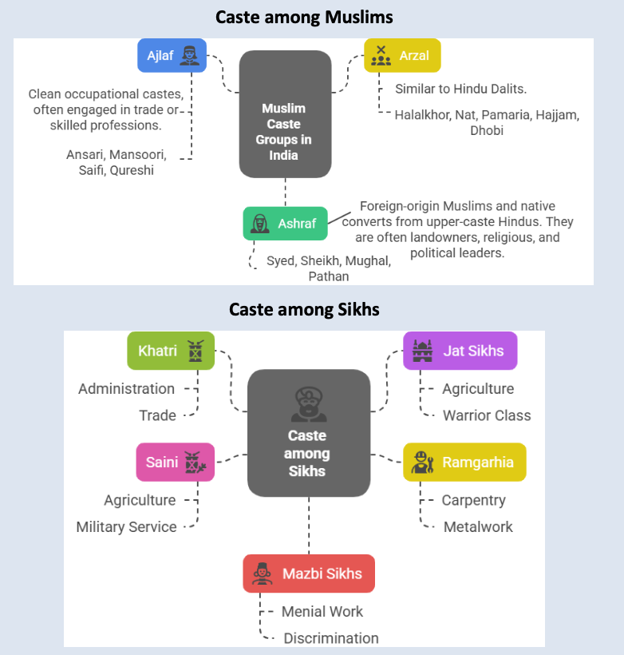
- Caste continues to influence various aspects of Sikh life, including marriage, social interactions, and religious practices. Marriage practices often reflect caste considerations. Jat Sikhs often holding dominant positions in religious and social institutions, perpetuating systemic discrimination.
- Aspiration of a ‘Casteless Society’
- The idea of a "casteless" society, where caste identity is irrelevant, is often championed as a solution to India’s caste-based inequalities.
- The term ‘casteless’ refers to the ‘absence of caste’ in society. A ‘casteless’ society is imagined as an inclusive society that provides equal opportunity for every individual regardless of inheritance and birth.
- According to Sociologist M.N. Srinivas, caste is a complex social structure that has adapted and changed throughout history but remains a powerful force in modern Indian society. To him, “casteless” is a myth in the Indian context, because even though some people may claim to be casteless or advocate for a casteless society, they are often still influenced by caste in various ways.
- Upper castes often display caste pride through surnames, marrying within their caste, and forming caste-based associations, sometimes unconsciously due to deep-seated socialization.
- Conversely, lower castes face persistent structural obstacles in education and employment, resulting in continued upper-caste dominance in universities and corporations. For many lower-caste individuals, reservation policies (caste based) have provided a pathway to education and employment opportunities that they might not have otherwise had.
- Prescription for a ‘Casteless’ Society
- According to Ambedkar, apart from Education, another important step towards creating a casteless society is inter-caste marriages.
-
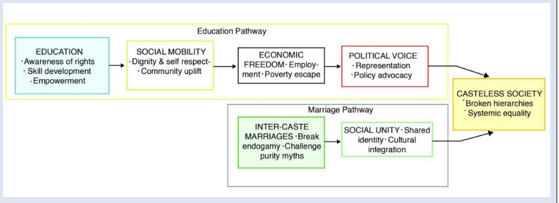
- 3.2. The Salience of ‘Sect’ in Indian Society
- A sect is a sub-group within a larger religion, emerging from differing beliefs or practices. In India, sects are powerful social units whose influence often intersects with caste and regional identities.
- Interplay with Caste and Region:
- Sects can sometimes cut across castes, uniting followers from different backgrounds under a single spiritual leader. However, many sects are closely associated with specific dominant castes or regional communities, reinforcing those identities.
- Role in Social Life:
- Sects play a crucial role in providing cultural preservation, a strong sense of community belonging through shared rituals and festivals, and social support for their members.
- Political Mobilization:
- In contemporary India, some sects, particularly large ones like the Dera Sacha Sauda or the Ram Rahim sect, have emerged as powerful political actors.
- Student Notes:
- Case Study- The Lingayat Demand
- The Lingayat community in Karnataka, traditionally considered a sect within Hinduism, has been demanding recognition as a separate religion. Their claim is based on a distinct philosophy (of social equality, rejecting Brahminical rituals and caste hierarchy) originating with the 12th-century reformer Basavanna.
- This case illustrates the complex and fluid boundaries between sect, caste (as Lingayats have internal sub-divisions), and religious identity, and how such claims can become major political issues.
- Case Study- The ‘Dera’ Phenomenon in North India
-
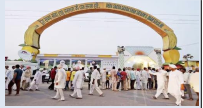
- Sects known as Deras, particularly Dera Sacha Sauda in Punjab and Haryana, exemplify the modern role of sects.
- Social Base:
- They draw a massive following primarily from marginalized communities, especially Dalits and OBCs, who feel excluded from mainstream religious institutions dominated by upper castes (like Jat Sikhs). The Deras offer a space of equality, dignity, and community.
- Political Clout:
- This large, consolidated social base makes them a powerful vote bank. During elections, political parties across the spectrum actively seek the endorsement of the Dera head, as it can influence the outcome in dozens of constituencies.
- Significance:
- The Dera phenomenon illustrates how modern sects can emerge to fill social vacuums, challenge traditional caste hierarchies, and become powerful non-state actors shaping regional politics.
- 4. Impact and Transformation - Family, Marriage, and Socialization
- The family and marriage are foundational institutions that have traditionally provided stability and continuity to Indian society. However, the forces of change are leading to significant transformations in their structure, values, and functions.
- 4.1. The Indian Family in Flux- Jointness to Nuclearity
-
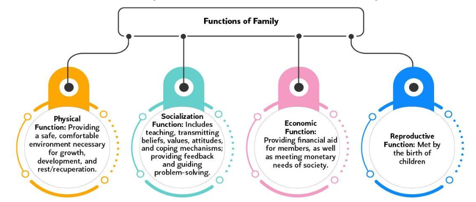
- The most significant change in the Indian family system is the structural shift from joint households to nuclear units.
-
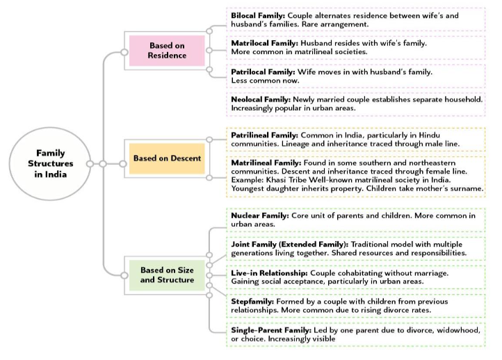
- The Trend of Nuclearisation:
- While the joint family—a multi-generational unit sharing a common residence, kitchen, and property—remains a powerful social ideal, its prevalence has declined.
- According to the 2011 Census, traditional joint or extended families constituted only about 20% of all households.
- Recent data suggests that nuclear families now make up about 50% of households in 2022, with the trend being particularly strong in southern states.
-
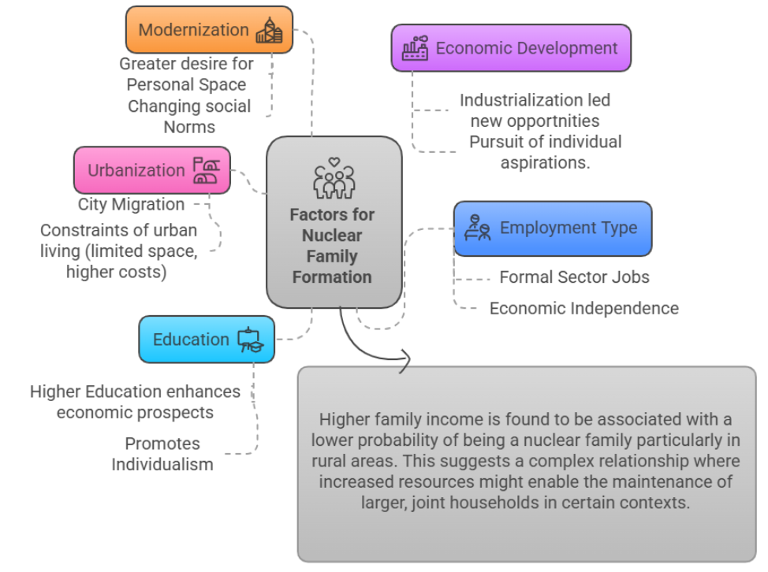
- Drivers of Change (Economic vs. Social):
- The decline of the joint family is often driven more by structural and economic factors than a mere erosion of "family values". Key drivers include:
- Urbanization:
- The high cost and limited space of urban housing make it difficult for large, extended families to live together.
- Economic Mobility:
- New employment opportunities in different cities or regions necessitate migration and the establishment of independent households.
- Education:
- Higher education promotes values of individualism and a desire for personal space and autonomy.
- Persistence of ‘Functional Jointness’:
- Despite structural separation, the ethos of the joint family often persists. Sociologists like A.M. Shah have noted that many nuclear families remain "functionally joint." They maintain strong ties of mutual support, financial aid, ritual obligation, and emotional interdependence with their wider kin group.
- Emergence of New Family Forms:
- Modern India is also witnessing the rise of diverse family structures, including:
- Single-Parent Households:
- An estimated 4.5% of all Indian households are run by single mothers.
- DINK (Dual Income, No Kids) Families:
- A growing trend in urban areas where couples choose to remain child-free for career or lifestyle reasons, a phenomenon growing at 30% per annum according to recent market data reports.
- Rise Of Double Income No Kids (Dink) Families In India
- The population of DINKs in India has been growing at 30 % per annum, according to Gitnux Market Data Report 2024. In 2011 Census, DINK lifestyle was prevalent in nearly 42% of two-member rural families compared to 22% of similar urban families. (Data can't be verified)
-
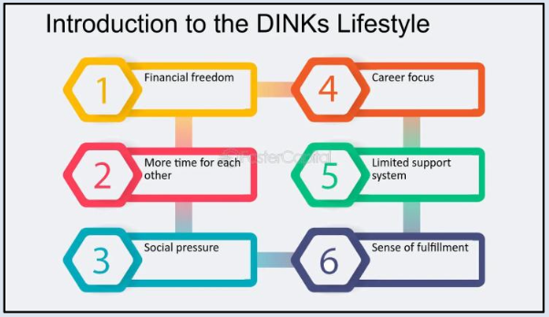
- Factors contributing to adoption of DINK lifestyle:
- Change in social norms:
- DINK couples often view having children as a burden that limits their personal freedom and ability to enjoy leisure activities. According to sociologist Amy Blackstone, the transition from parenthood being viewed as a "cultural imperative" to becoming a choice reflects a shift in societal norms.
- As an economic measure:
- DINK can be a financial necessity rather than merely a lifestyle choice. The new generation tends to delay all major life events, including marriage and childbearing, for career advancement and financial wellbeing, given increased cost in raising children.
- Weakening of kinship based bonds:
- As individual preferences and economic stability take precedence, people are increasingly socializing outside of family and kinships, making DINK culture more common.
- With fewer children being born, the proportion of older adults would increase, creating a demographic shift that can strain resources, particularly in healthcare and social services. Also, more DINK families may boost commercialization of socialization activities in India.
- The Changing Family Landscape- Socio-Economic Shifts
-
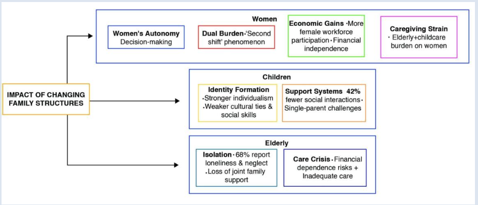
- A Return to Community Living:
- Despite the prevalence of nuclear families, a new trend is emerging- families purchasing homes in close proximity. This "community-based living" model balances the independence of a nuclear setup with the emotional and practical support of an extended family.
- Evolving Value Systems and Social Support:
- The shift from collectivist, extended families to individualistic nuclear units has prioritized privacy and independence. However, this has also created challenges, including reduced emotional support and weaker intergenerational bonds. Increased reliance on rented housing and a lack of community engagement in urban areas can lead to social isolation and heightened anxiety, leaving nuclear families vulnerable during emergencies.
- Impersonal Connections:
- Modern social interactions, from birthdays to condolences, are often characterized by formality and a lack of genuine warmth. This superficiality can make relationships feel shallow and emotionally empty.
- Impacts on Children
- Altered Socialization:
- With fewer resident family members and both parents often working, children’s socialization is changing. Traditional storytelling and shared caregiving are being replaced by daycare, mobile phone usage, and "helicopter parenting." For example, U.S. teens spend an average of 7.5 hours daily on screens, which is associated with social skill deficits.
-
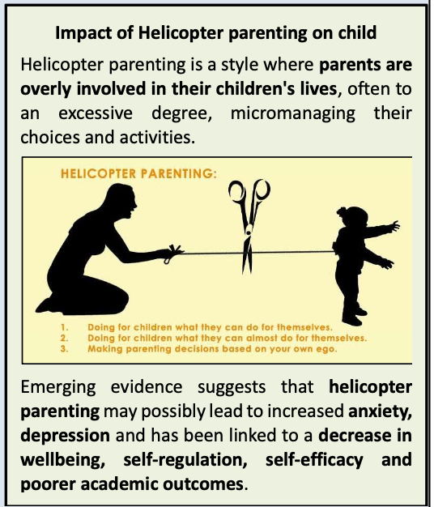
- Positive Shifts:
- On the upside, modern parenting is often more child-focused, emphasizing emotional intelligence and open communication over older, authoritarian styles.
- Case Study- Impact of ‘Work from Home’ on Family Relationships
- The COVID-19 pandemic institutionalized Work from Home (WFH), significantly impacting family dynamics.
- Positives:
- For some, it led to increased paternal involvement in childcare and household chores, and greater flexibility.
- Negatives:
- For many, especially women, it resulted in a "double-double burden" of managing professional work alongside intensified domestic and caregiving responsibilities. It also led to blurred work-life boundaries, increased stress, and in some cases, a rise in reported domestic violence due to constant proximity.
- Challenges for the Elderly
- The rise of nuclear families often means elderly parents live alone, facing a lack of care, financial strain, and increased anxiety. This isolation has also made them more vulnerable to crimes, including robbery, extortion, and various cybercrimes.
- Global Solutions for Elderly Care
- Singapore:
- The Maintenance of Parents Act legally requires children to financially support their elderly parents.
- Nordic Countries:
- Sweden utilizes a tax-funded system to provide comprehensive elderly care, which lessens the burden on families but may risk emotional distance.
- A related issue is the "Empty Nest Syndrome", where parents experience profound grief and loneliness after their children move out.
- Case Study:
- Japan’s Kodomo shokudō (community kitchens) combat child isolation in nuclear families.
- Consumption Patterns
- Nuclear families tend to have higher per capita spending, often favoring premium Fast-Moving Consumer Goods (FMCG). This purchasing behavior drives the trend of "premiumisation" in sectors like toiletries, detergents, and beverages.
- Socialization in the Digital Age- The "Mobile Phone vs. Child Cuddling" Debate
- The Core Issue:
- A significant contemporary concern is the impact of digital technology on primary socialization.
-
- The Transformation of Socialization:
- Reduced Intergenerational Contact:
- In nuclear families with working parents, the traditional role of grandparents in storytelling and value transmission has diminished. This vacuum is often filled by digital devices.
- ‘Digital Socialization’:
- Children’s interaction with the world is increasingly mediated through screens. One report cited that U.S. teens average 7.5 hours/day on screens, indicating a global trend.
- Key Impacts on Children:
- Negative Consequences:
- Social & Emotional Skills:
- Reduced face-to-face interaction can hamper the development of empathy, reading social cues, and other crucial social skills.
- Health Issues:
- Increased screen time is linked to digital eye strain, myopia, and a sedentary lifestyle.
- Cognitive Impact:
- Constant notifications and distractions can affect attention spans and procrastination, impacting academic performance.
- A Balanced View:
- On the positive side, technology offers vast educational resources.
- Video chats (Zoom, Teams, FaceTime) help children stay connected with distant family members.
- Age-appropriate multiplayer games/apps build social skills like teamwork and turn-taking with known peers.
- Shared screen time strengthens parent-child bonding when you watch or play together and discuss the content.
- The challenge for modern families is not to reject technology but to balance "digital socialization" with real-world social interactions, ensuring the holistic emotional and psychological development of children.
- Impact of Helicopter parenting on child
- Helicopter parenting is a style where parents are overly involved in their children’s lives, often to an excessive degree, micromanaging their choices and activities.
- Emerging evidence suggests that helicopter parenting may possibly lead to increased anxiety, depression and has been linked to a decrease in wellbeing, self-regulation, self-efficacy and poorer academic outcomes.
- 4.2. The Institution of Marriage- Tradition Meets Modernity
- The institution of marriage in India is at a crossroads, navigating the tension between traditional views and modern aspirations.
-
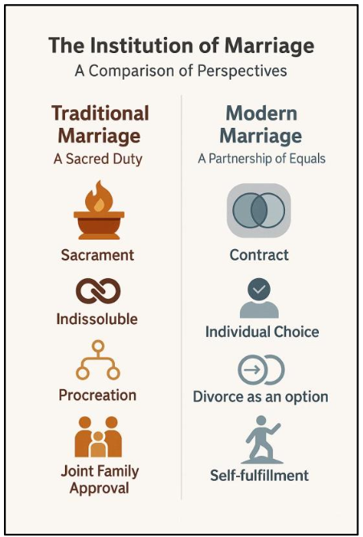
-
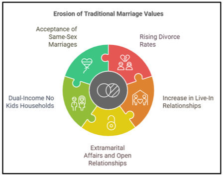
- Is Marriage as a Sacrament Losing Value?:
- Traditionally, Hindu marriage is considered a sacrament—a sacred, indissoluble union meant for fulfilling religious duties (dharma) and ensuring procreation. However, modern forces have infused contractual elements into it.
- Influence of Individualism:
- Educated, urban individuals increasingly view marriage as a partnership based on emotional compatibility, companionship, and mutual respect rather than just a social obligation.
- Legal Reforms:
- The introduction of divorce and separation under laws like the Hindu Marriage Act, 1955, legally transformed the institution from an indissoluble one to a dissolvable contract.
- Rising Divorce Rates:
- While still low globally at around 1.1%, the divorce rate in India has doubled over the last two decades, reflecting changing attitudes and increased female economic independence.
- Changing Marriage Patterns:
- Inter-caste & Inter-religious Marriages:
- While social norms still favor endogamy, there is a slow increase in inter-caste marriages, recorded at 5.8% (NFHS-5). They are more common in urban areas due to greater social interaction and anonymity. Inter-religious marriages remain much rarer and often face significant social resistance and legal hurdles due to anti-conversion laws in several states.
-
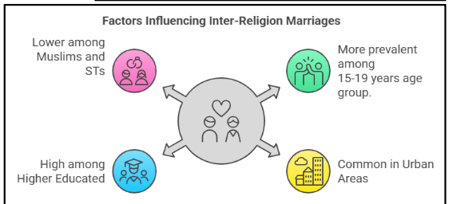
- Live-in Relationships:
- This is a growing phenomenon, particularly among urban youth, reflecting a shift towards individual choice over social sanction.
- Rise of Live-In Relationships in India:
- The rising trend of live-in relationships in India can be attributed to various social and economic changes:
- Increased Independence:
- Women’s growing financial independence and access to education have reduced pressure to marry for economic security.
- Rising education level:
- Higher education and migration away from family creates facilitating ground for such relationships. Financial instability among students and new professionals deters wedding costs.
- Change in social aspirations and standards:
- Young people are seeking emotional compatibility and support without the societal pressures of caste and religion endogamy and responsibilities of marriage.
- Urbanization and Globalization:
- Urbanisation led anonymity in metro cities facilitating live-in relationships. Urban youth, influenced by globalization and exposure to Western society media, are increasingly embracing these live-in partnerships.
-
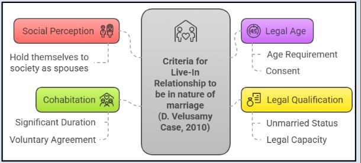
- Rising live-in relationships reflects a growing individualistic mindset, which prioritizes personal freedom over traditional commitments.
- Live-in relationships in other societies
- USA:
- Live-in relationships are widely accepted, with some states offering domestic partnership benefits.
- Canada:
- After two years of cohabitation, common-law marriages are recognized, granting partners legal rights akin to married couples.
- Sweden:
- Sweden offers legal protections for live-in couples, recognizing them as de facto relationships, and parental rights are similar to those of married couples.
- Australia and UK:
- De facto relationships are recognized under law, granting rights and responsibilities similar to marriage.
- Legal Stand on Live-In Relationships
- Personal Laws:
- Hindu Law does not recognize live-in relationships as valid marriages, though the Supreme Court has recognized that long-term cohabitation may imply marriage, particularly in maintenance cases under Section 125 CrPC. Islamic law strictly prohibits live-in relationships, considering them equivalent to zina (illicit sex).
- Legal Protections:
- Under the Domestic Violence Act, women in live-in relationships can claim maintenance and protection against violence, treating their relationship like a marriage if certain conditions, such as duration and cohabitation, are met.
- Landmark cases on Live-in-relationships
- Women in long-term live-in relationships (especially with children) are protected from domestic violence under the Domestic Violence Act (Lalita Toppo, 2018).
- Long-term cohabitation with children can be considered a marriage-like relationship, offering women maintenance and inheritance rights for children (D. Veluswami, 2010).
- Children from live-in relationships can inherit ancestral property (Bharatha Matha, 2010).
- Educational Hypogamy in India
- Educational hypergamy, where women marry men with higher education, has declined globally, including in India, as women’s education levels have risen. However, educational hypogamy (women marrying men with lower education) has sharply increased in India. In the 1970s, only about 5% of women married men with lower education, but by 2018, this figure had risen to about 20%.
- Factors Contributing to Educational Hypogamy in India:
- Strong Gender Scripts:
- India’s hierarchical gender regime often treats women’s education differently. While women’s education has improved, societal norms still emphasize appearance as the most important quality for women in the marriage market, whereas for men, it’s the ability to earn a living. This leads highly educated women to marry men with lower education but more privileged family backgrounds, prioritizing family and economic status over educational parity.
- Consanguineous Marriages:
- In certain regions of India, consanguineous marriages (marriages between blood relatives) also contribute to the trend of hypogamy. These cultural practices can limit the pool of eligible partners with equal educational attainment, further promoting hypogamy.
- 5. Impact & Transformation - Culture, Regionalism, and Globalization
- The forces of change have not only altered India’s social structures but have also profoundly impacted its cultural fabric and sense of identity.
- 5.1. Indian Culture and Globalization- Homogenization or Hybridization?
- A central debate in Indian society is the impact of globalization on its rich cultural diversity.
- The Homogenization Thesis:
- One argument is that globalization promotes cultural homogenization—a process where local cultures are eroded and replaced by a uniform, often Western-centric, global culture. This is visible in:
- The spread of global brands (fast-food chains, consumer goods).
- The dominance of Western media and entertainment.
- The adoption of Western consumerist values and lifestyles by sections of the urban middle class.
- The Indian Reality- Glocalization and Hybridity- However, a closer look reveals that homogenization is not the dominant trend in India. Instead, Indian society has shown a remarkable ability to adapt, absorb, and Indianize global influences, leading to:
- Glocalization:
- The process where global products and ideas are adapted to suit local tastes and contexts. The classic example is McDonald’s offering the "McAloo Tikki" burger, specifically designed for the Indian palate.
- Cultural Hybridity:
- The creation of new and unique cultural forms by blending global and local elements. This is seen across various domains, from music (e.g., fusion music blending Indian classical with Western genres) to language (the widespread use of ‘Hinglish’).
- Student Notes:
- Losing Local for Global? A Layered Identity
- The question of whether Indians are losing their local identity for a global one is not a zero-sum game. Instead, globalization has led to the formation of multiple, layered identities.
- Coexistence of Identities:
- An individual in modern India can simultaneously hold and express multiple identities. For example, a young professional from Chennai working in Bengaluru can be a proud Tamilian (local/regional identity), an Indian (national identity), and a ‘global citizen’ or ‘netizen’ who consumes global media, follows international trends, and interacts with people worldwide on the internet.
- Assertion of Local Identity:
- Paradoxically, globalization can also lead to a conscious assertion and revival of local identities. As people are exposed to a uniform global culture, there is often a renewed interest in preserving and promoting one’s own unique language, traditions, and cuisine as a marker of distinction and pride.
- Therefore, rather than a simple loss, we are witnessing a complex negotiation and coexistence of identities at different scales.
- Case Study- Bollywood as a Site of Cultural Hybridity
- The Indian film industry, Bollywood, is a prime example of cultural hybridity. While it absorbs global influences in its narrative styles, cinematography, and music production, its thematic core often remains deeply rooted in Indian social realities, family values, and cultural sensibilities.
- Films may feature foreign locations and Western fashion, but the stories often revolve around Indian weddings, festivals, and societal conflicts, creating a product that is both modern and distinctly Indian.
- 5.2. The Dynamics of Regionalism
- Regionalism—the expression of a shared identity based on a specific geographical region—is a powerful and persistent feature of Indian society and politics.
- Bases of Regionalism:
- It is rooted in India’s immense diversity, where regions often have a distinct language, culture, ethnicity, and history that pre-date the formation of modern states.
- Drivers of Regional Movements:
- The rise of regionalism can be attributed to two key interconnected factors:
- Unequal Regional Development:
- A primary driver is the perception of economic neglect, discrimination, or an unequal distribution of developmental benefits by the central government. Demands for separate states or greater autonomy are often fueled by economic backwardness.
- Cultural Assertiveness:
- Regionalism is also a powerful expression of cultural assertiveness. It reflects a desire by a community to protect and promote its distinct language and culture against a perceived threat of domination or imposition by a larger, more dominant culture.
- Case Study- The ‘Bhil Pradesh’ Demand
-
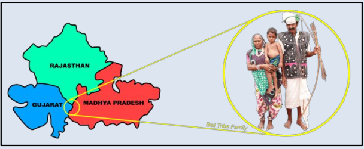
- The recent demand for a separate state of ‘Bhil Pradesh’, carved out of areas in Rajasthan, Gujarat, Madhya Pradesh, and Maharashtra, is a contemporary example of regionalism. This demand is driven by the dual factors of:
- Cultural Identity:
- It is an assertion of the distinct tribal cultural identity of the Bhil community.
- Developmental Neglect:
- It is fueled by a long history of socio-economic marginalization and the feeling that the developmental needs of the tribal population have been neglected by the respective state governments.
- 5.3. Tradition, Values, and the Challenge of Obscurantism
- Continuity of Traditional Values:
- Indian society maintains a strong sense of continuity with its past.
- Traditional values are passed down through generations via social institutions like the family (through socialization), the caste system (through endogamy and social norms), and religious practices and festivals. This ensures that even amidst rapid change, a connection to traditional ethos remains.
- Tradition vs. Reason:
- The Debate on Obscurantism:
- A critical question is whether customs and traditions suppress reason and lead to obscurantism.
- The Argument For:
- In many instances, "tradition" is invoked to justify harmful, irrational, or discriminatory practices. Examples include superstitions leading to violence (e.g., witch-hunting), the justification of caste-based discrimination, or the opposition to women’s rights in the name of culture.
- A Balanced View:
- However, not all tradition is obscurantist. Many traditions contain accumulated ecological wisdom, artistic heritage, and principles that foster social cohesion. The challenge for a modernizing society is not to reject tradition wholesale, but to critically evaluate it through the lens of constitutional values, retaining what is just and progressive while reforming or discarding what is oppressive and irrational.
- 6. Cross-Cutting Issues of Diversity and Inequality
- This final section delves into complex cross-cutting issues where India’s features of diversity and hierarchy intersect, creating unique social challenges and contemporary debates about justice and policy.
-
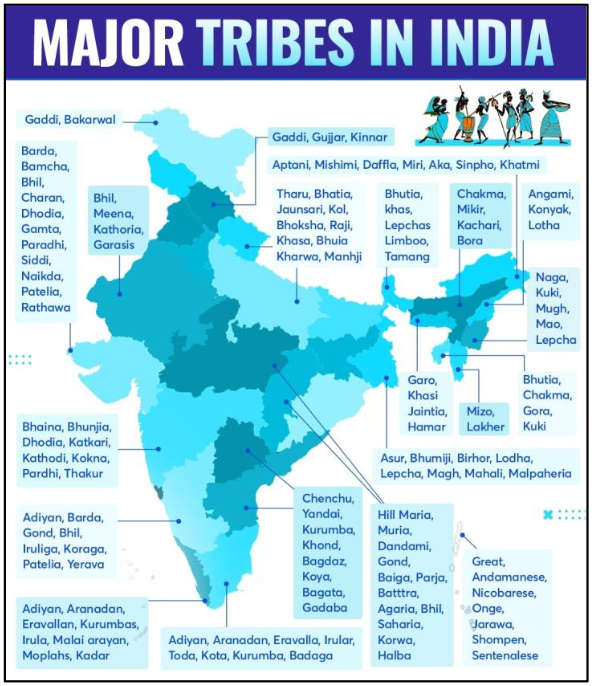
- 6.1. The Tribal Question- Between Diversity and a Single Category
- India is home to over 700 Scheduled Tribes, making them an incredibly diverse group.
- Acknowledging Diversity:
- Tribal communities vary immensely in terms of:
- Population:
- While Gonds have a population of over 12 million, the Great Andamanese number fewer than 50.
- Linguistic Diversity:
- They speak hundreds of languages from distinct linguistic families. (The Santhals in Jharkhand speak Santhali (Austroasiatic), while the Gonds speak Gondi (Dravidian)).
- Racial Diversity:
- The Gonds, Konds, and Todas belong to the Dravidian group; Bhutias in Sikkim and Lepchas in Darjeeling belong to the Mongoloid group.
- Social Diversity:
- Tribes have different social systems. The Khasi tribe in Meghalaya follows a matrilineal system, while the Gonds and Bhils have a patrilineal system.
- Political Diversity:
- Some tribes have traditional governance, others follow modern political structures. (The Mising of Assam follow a tribal council system, while the Bodos have a more centralized governance model.)
- Economic Diversity:
- Livelihoods range from agriculture, hunting, and gathering, to industrial labor. (Gonds and Bhils are agricultural; Tea Tribes in Assam work as plantation laborers; Todas in the Nilgiris have a pastoral economy.)
- Acknowledging this diversity is crucial to avoid stereotyping.
- Contexts for a ‘Single Category’:
- Despite this diversity, it is analytically and administratively valid to consider them as a single category in specific contexts:
- Constitutional & Administrative Context:
- For the purpose of affirmative action (reservations) and protective legislation like the 5th and 6th Schedules of the Constitution and the Forest Rights Act, 2006.
- Shared Vulnerabilities:
- When discussing common issues like development-led displacement due to dams and mining projects, loss of traditional rights over jal, jangal, zameen (water, forest, land), systemic poverty, and poor health indicators.
- Shared Historical Experience:
- In their relationship with mainstream society, most tribal communities share a history of geographical and social isolation, and a common experience of marginalization.
- Student Notes:
- Case Study- The Favorable Tribal Sex Ratio
- A significant feature of tribal society is that the sex ratio in many tribal communities is more favorable to women (990 overall) than in Scheduled Caste or dominant caste groups.
- Sociologists attribute this to several factors:
- Social Structure:
- Many tribal societies have less rigid patriarchal structures.
- Value of Women:
- Women often play a significant role in the tribal economy, granting them a higher social status.
- Lower Dowry Prevalence:
- The practice of dowry is less prevalent; some communities have the custom of ‘bride price’.
- Less Access to Technology:
- Historically, limited access to modern sex-selective technologies has also been a factor.
- 6.2. The Link Between Diversity and Marginality
- A critical proposition is that there is a high correlation between India’s cultural diversities and its socio-economic marginalities.
- Evidence of Correlation:
- Linguistic minorities:
- Tulu speakers in Karnataka, often face challenges in accessing education and government services in their native language.
- Scheduled Tribes (STs):
- They often experience higher poverty rates and poor socio-economic indicators. Factors such as displacement due to development projects, limited access to education, add to their marginalization.
- Religious minorities:
- Muslims in India suffer from many socio-economic disadvantages such as low literacy levels and income than national average.
- Regional diversity:
- Many regions in India such as Mountainous villages, tribal villages in forest areas, regions such as Bihar have low per capita income and poor socio-economic indicators.
-
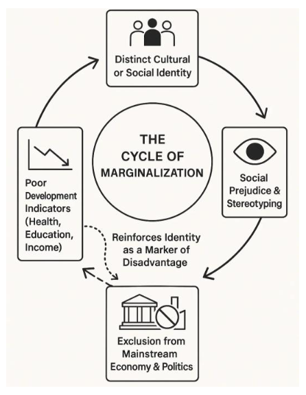
- Is Diversity the Cause?
- The correlation does not imply causation. Diversity itself is not the cause of marginality. The marginality arises from the social structure of hierarchy and the politics of neglect or discrimination by the mainstream/state. The failure to nurture pluralism (active appreciation of diversity) often leads to the marginalization of minority groups.
- Counter-Examples:
- Some minority communities, like the Parsis or Jains, have high socio-economic indicators, demonstrating that being a minority does not automatically lead to marginalization.
- Affirmative Action and its Discontents
- The Premise:
- Affirmative action, primarily through the policy of reservations for SCs, STs, and OBCs, is India’s most significant tool for achieving social justice and rectifying historical discrimination.
- The Critique- Why Benefits Don’t Reach All:
- Elite Capture / ‘Creamy Layer’ Issue:
- The benefits are often cornered by the relatively better-off sections within the reserved categories, who are better equipped to compete. This has led to demands for excluding the ‘creamy layer’.
- Implementation Gaps:
- Issues like unfilled reserved vacancies, inadequate implementation of welfare schemes, and subtle discrimination within institutions hinder the policy’s effectiveness.
- The Private Sector Gap:
- With the private sector being the primary engine of job creation post-liberalization, the absence of a reservation policy there limits the scope of affirmative action.
- Focus on Distribution, Not Foundation:
- Critics argue that reservations act as a distributive mechanism but do not adequately address foundational issues like poor quality of primary schooling and healthcare for marginalized communities, which are essential prerequisites for them to be able to utilize reservation policies effectively.
- The debate is now moving towards complementing reservations with more robust policies aimed at strengthening the human capital of marginalized communities through targeted scholarships, quality education, and skill development.
- CHAPTER 2- WOMEN IN INDIA- THEIR ISSUES, ROLE AND ORGANISATIONS
- Key Data and Facts at a Glance
- Demographics:
| Metric | Value | Source |
|---|
| Sex Ratio (Overall) | 1020 females per 1000 males | NFHS-5, 2019-21 |
| Sex Ratio at Birth (SRB) | 929 females per 1000 males | NFHS-5 |
| Child Sex Ratio (0-6 years) | 919 per 1000 boys | Census 2011 |
- Sex Ratio (Overall):
- 1020 females per 1000 males (NFHS-5, 2019-21). This is the first time the ratio has been favourable to women.
- Sex Ratio at Birth (SRB):
- 929 females per 1000 males (NFHS-5). While an improvement from 919 in NFHS-4, it is still below the natural norm of 952.
- Child Sex Ratio (0-6 years):
- Was an alarming 919 per 1000 boys (Census 2011). (Latest data awaited).
- Political Representation:
| Area | Details | Source |
|---|
| Parliament (Lok Sabha 2024) | Women MPs make up only 13.6% (74 out of 543), a regression from 14.4% in 2019 | - |
| Panchayati Raj Institutions (PRIs) | Women hold 46% of elected seats due to reservations, demonstrating the policy’s impact | - |
- Health:
- Maternal Mortality Rate (MMR):
- Has declined significantly to 97 deaths per 100,000 live births (SRS, 2018-20).
- Anemia Prevalence:
- A staggering 57% of women aged 15-49 are anemic (NFHS-5).
- Institutional Deliveries:
- Have risen to 89% (NFHS-5).
- Contraceptive Use:
- Modern contraceptive prevalence has increased to 60.9% among married women (NFHS-5).
- Violence (NCRB Data, 2022):
| Metric | Value |
|---|
| Total cases of crime against women | 4,45,256 |
| Cruelty by Husband or His Relatives | 31.4% |
| Kidnapping & Abduction of Women | 19.2% |
| Assault on Women with Intent to Outrage her Modesty | 18.7% |
| Rate of crime against women (per lakh population) | 66.4 |
- Economy & Labour Force:
- Female Labour Force Participation (FLFP):
- Stood at 41.7% in 2024, a significant increase but still well below the global average ((PLFS 2023-24)).
- Gender Pay Gap:
- In India, women earn approximately Rs 40 for every Rs 100 earned by men (WEF 's Global Gender Gap Index 2024).
- Unpaid Care Work:
- Women spend nearly 10 times more time on domestic duties than men (NSSO Time-Use Survey, 2019). Unpaid care work by women contributes an estimated 3.1% to GDP, compared to 0.4% by men (Economic Survey 2024).
- Women in Entrepreneurship:
- 20.5% of MSMEs are women-owned, employing around 27 million people (Udyam Portal data).
- Financial Inclusion:
- 55.6% of account holders under PM Jan Dhan Yojana are women.
- Education:
- Female Literacy Rate:
- 65.46% (Census 2011).
- Gross Enrolment Ratio (GER):
- In higher education, female GER (27.9) has surpassed male GER (27.1) (AISHE 2021-22), indicating a positive trend in access.
- Digital Divide:
- Only 31% of women in India owned a mobile phone compared to 61% of men (GSMA Mobile Gender Gap Report 2023).
- Glossary of Essential Concepts
- Patriarchy:
- A social and ideological system where men hold primary power and authority over women in all social institutions (family, state, economy, religion). It is not just about individual men but about a systemic structure of male dominance.
- Gender vs. Sex:
- A foundational feminist distinction. Sex refers to biological attributes (male, female), while Gender is a socio-cultural construct—the set of roles, norms, and behaviors that society deems appropriate for men and women.
- Gender Equality:
- The state of equal access to rights, resources, and opportunities for all genders.
- Gender Equity:
- The process of being fair to all genders. It involves using measures (sometimes differential) to compensate for historical and social disadvantages to achieve an equal playing field.
- Women’s Empowerment:
- The process by which women gain agency (the capacity to make strategic life choices) and control over their lives, encompassing social, economic, and political power.
- Intersectionality:
- A critical framework for understanding how different social identities—like caste, class, religion, and gender—overlap and interact to create unique and compounded systems of discrimination. For example, a Dalit woman experiences a form of oppression that is different from that experienced by a Savarna woman or a Dalit man.
- Bodily Autonomy:
- The fundamental right of a person to self-governance over their own body without coercion—encompassing choices related to health, reproduction, sexuality, and consent.
- Unpaid Care Work / Second Shift:
- The vast, unrecognized, and uncompensated domestic and caregiving labor (cooking, cleaning, childcare, elder care) that is disproportionately performed by women, constituting a “second shift” after their paid work.
- Glass Ceiling & Sticky Floor:
- Metaphors for workplace inequality. The Glass Ceiling is the invisible barrier preventing women from reaching senior leadership positions. The Sticky Floor refers to the forces that keep women confined to low-paying, low-mobility jobs.
- Feminization of Labor / Poverty:
- A dual concept referring to
- (a) the rising proportion of women in the workforce, and
- (b) the concentration of women in low-wage, insecure, and informal jobs.
- Feminization of Poverty describes the trend of women experiencing poverty at significantly higher rates than men.
- Structural Violence:
- Harm caused not by direct physical assault, but by unjust social structures and institutions that prevent people from meeting their basic needs. Skewed sex ratios and high maternal mortality are examples of structural violence against women.
- Son Meta-Preference:
- A deep-rooted cultural and economic bias for male children, which drives practices like sex-selective abortion and the neglect of daughters.
- Gender Mainstreaming & Gender Budgeting:
- Gender Mainstreaming is the process of assessing the implications for all genders of any planned action, including legislation and policies. Gender Budgeting is an application of this, analyzing a government’s budget for its differential impacts and ensuring gender commitments are translated into budgetary commitments.
- Phallocentrism:
- A worldview or ideology centered on the masculine perspective, where the male is the central point of reference and the female is defined in relation to him. As seen in many literary and religious texts.
- Compulsory Heterosexuality:
- A term used by feminist scholars to describe the societal assumption and enforcement of heterosexuality as the only natural or acceptable sexual orientation, thereby marginalizing all other forms of sexual expression.
- Introduction
- The status of women in contemporary India presents a significant paradox. While our cultural ethos has traditions of revering feminine deities and women have occupied the highest public offices, key social indicators reveal a stark reality of deep-rooted gender inequality and structural discrimination.
- This contradiction is grounded in facts. India celebrates its female scientists and entrepreneurs, yet grapples with a persistently low Female Labour Force Participation (FLFP) rate (around 41% in 2024) and an adverse Child Sex Ratio (919 girls per 1000 boys, Census 2011).
- To write a comprehensive answer, one must move beyond a monolithic view of “the Indian woman.” Therefore, this document adopts an intersectional approach. It examines how a woman’s lived experience is fundamentally shaped by the overlapping identities of gender, caste, class, religion, and region—a framework essential for a nuanced societal analysis in GS Paper 1.
- 1. Conceptual Frameworks for Understanding Gender
- A clear grasp of foundational concepts is essential for structuring high-quality answers on women’s issues. This section clarifies these core ideas, providing the analytical tools for the sections that follow.
- 1.1. Distinguishing Key Concepts for Policy and Analysis
- 1.1.1. Notion of ‘Gender’
- Understanding women’s issues requires recognizing the concept of gender.
- Distinguishing Sex and Gender:
- Sex:
- Determined by biological factors like chromosomes and reproductive organs.
- Gender:
- Gender refers to the socially constructed roles, behaviours, activities, and expectations associated with masculinity and femininity. These expectations are not universal and can vary across cultures and historical periods.
- The roles associated with gender are often defined by society’s expectations, attitudes, and portrayals. These affect personal attitudes, career choices, and behaviors. Thus, to be male or female means that one has to act a certain way, present oneself in a certain manner both publicly and privately, and perform certain responsibilities.
- There are many factors which contribute to the understanding of gender and gender roles. Primarily, the agents of socialization that shape these roles include media portrayals, religious organizations and beliefs, and parent’s beliefs and actions.
- Student Notes:
- Gender Identity
- Gender identity refers to a person’s deeply-felt, inherent sense of being a boy, a man, or male; a girl, a woman, or female; or an alternative gender (e.g., gender-queer, gender non-conforming, boygirl, ladyboy) which may or may not correspond to a person’s sex assigned at birth or to a person’s primary or secondary sex characteristics. Since gender identity is internal, a person’s gender identity is not necessarily visible to others.
- It is debated that Self-identification is but one form of identification. It doesn’t replace identification by other means.
- 1.1.2. Gender Equality, Gender Equity and Women’s Empowerment
- Gender Equality:
- This is the end goal. It signifies a state where all genders have equal rights, resources, and opportunities. The aim is the sameness of opportunity and outcome.
-
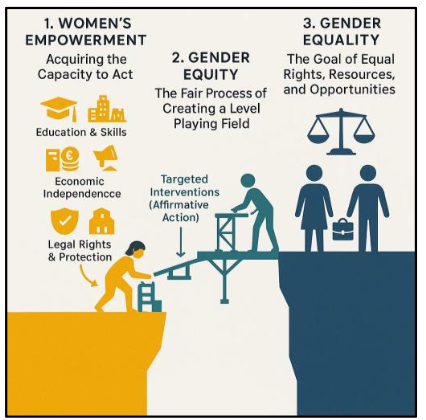
- Gender Equity:
- This is the process or pathway. It involves fairness and justice, recognizing that historical disadvantages mean different groups may need different, targeted interventions (affirmative action) to create a level playing field.
- Example:
- A company hiring more women in a male-dominated field is an equity measure to achieve long-term equality.
- Women’s Empowerment:
- This is the process of gaining power and agency. It is about women acquiring the capacity to make strategic life choices and act on them, covering economic, social, and political spheres.
- 1.1.3. The Structural Basis of Inequality- Patriarchy & Gender Socialization
- Patriarchy is the most critical concept to explain the root cause of gender inequality. It is a social system where men hold primary power across all major social institutions—family, economy, and politics.
- Patriarchy is about a system that manifests in everyday life through:
- Control over Resources:
- For instance, property often being passed down to sons.
- Control over Mobility:
- Social norms restricting when and where women can travel alone.
- Control over Choices:
- Dictating life choices related to education, career, marriage, and dress, undermining bodily autonomy.
-
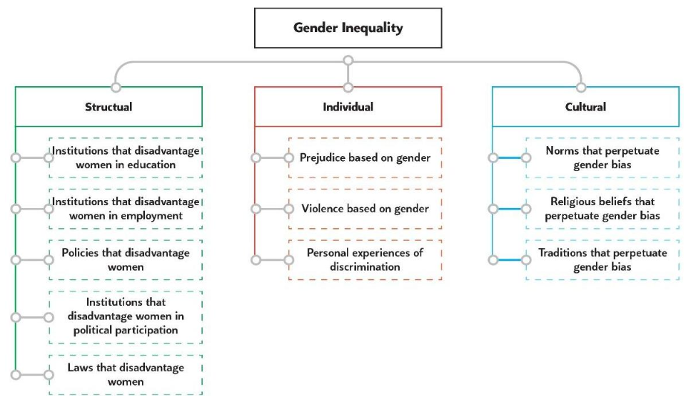
- Student Notes:
- Public and Private Patriarchy
- Public patriarchy is practiced in the public sphere (i.e., state, culture, paid work) and private patriarchy is practiced in the private sphere (i.e., household).
- Private patriarchy in households is characterized by discriminatory gender expectations and obligations that are set to exploit women’s labor and restrict opportunities for women.
- This system is perpetuated through Gender Socialization, the lifelong process of learning socially approved gender roles. We see this daily:
- In Family:
- Boys are given toy cars and encouraged to be assertive; girls are given dolls and encouraged to be nurturing.
- In Media:
- Popular films often portray a “hero” who actively saves a passive “heroine,” reinforcing gender stereotypes.
- 1.1.4. The Essential Analytical Lens- Intersectionality
- Intersectionality is a powerful tool for Mains answers to add depth and avoid generalization. It means analyzing how different identities like caste, class, religion, and gender overlap to create unique experiences of discrimination.
- For example, a government scheme promoting digital banking might succeed with an urban middle-class woman. However, it may fail to reach a rural, landless woman from a lower caste. Her barriers are not just gender, but a combination of poverty (cannot afford a smartphone), caste location (may not be able to enter the bank freely), and lack of digital literacy.
- Acknowledging this intersectionality is key to effective policy design.
- Student Notes:
- Case Study- The Intersectional Vulnerability of Adivasi Women
- Adivasi (tribal) women in India face a unique form of compounded marginalization. Their challenges are an outcome of the intersection of:
- Gender:
- Facing patriarchal norms within their communities and from mainstream society.
- Ethnicity (Adivasi Identity):
- Facing discrimination, cultural alienation, and loss of traditional rights.
- Class (Poverty):
- Being among the most economically impoverished groups.
- Location:
- Residing in resource-rich regions often targeted for development projects.
- This intersection makes them uniquely vulnerable to displacement by development projects (dams, mining), loss of control over forest resources. Their struggles are often invisible to both mainstream feminist movements and tribal rights movements that may be male-dominated.
- 2. Key Spheres of Discrimination and Challenges
- This section examines the critical spheres where gender inequality manifest.
-
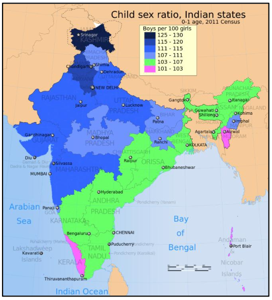
- 2.1. Demographic and Health Challenges
- A nation’s development is reflected in the health and survival of its women. In India, despite progress, significant challenges persist, representing a form of structural violence.
- Adverse Sex Ratio:
- India continues to struggle with a skewed sex ratio, indicating strong societal bias against the girl child.
- The Child Sex Ratio (0-6 years) was an alarming 919 girls per 1,000 boys in the 2011 Census.
- While the latest NFHS-5 shows an improvement in the Sex Ratio at Birth (SRB) to 929, it remains below the natural norm of 952, pointing to the continued practice of sex-selective abortion fueled by deep-rooted son preference.
- Health and Nutrition:
- The health of Indian women is a critical concern.
- Maternal Mortality:
- While India has significantly reduced its Maternal Mortality Rate (MMR) to 97 deaths per 100,000 live births (SRS, 2018-20), this national average masks wide inter-state disparities. States like Assam have a very high MMR, while states like Kerala have achieved the SDG target of 70.
- Malnutrition:
- A staggering 57% of women aged 15-49 are anemic (NFHS-5), severely impacting their health and productivity.
- Bodily Autonomy & Mental Health:
- A woman’s control over her own body and mind remains limited.
- According to NFHS-5, only about 10% of women can independently make decisions about their own health.
- This lack of agency, coupled with domestic pressures, contributes to a mental health crisis, reflected in high suicide rates among young women.
- Student Notes:
- Case Study- Rising Suicides Among Young Women
- India accounts for 37% of global suicide deaths in women (Lancet, 2018). NCRB data consistently shows that “housewives” form the largest group of women who die by suicide annually.
- Research links this to factors like domestic violence, marital stress, lack of financial independence, and social isolation.
- This tragic trend highlights the severe psychological impact of patriarchal control within the family institution.
- Case Study- The Paradox of Skewed Sex Ratios in Prosperous States
- States like Punjab and Haryana, despite high per capita incomes, have historically reported some of India’s worst child sex ratios. This paradox is explained by the fact that prosperity provides easier access to sex-selective technology (like ultrasound), which is then used to act on persistent patriarchal norms of son preference and concerns over dowry. This shows economic growth alone cannot erase deep-seated gender bias.
- 2.2. Socio-Cultural Challenges
- Social and cultural norms often create the most formidable barriers to women’s freedom and development.
- Barriers to Education:
- Despite progress in female literacy (65.46%, Census 2011), significant barriers persist.
- Barriers include social norms prioritizing boys’ education, the burden of domestic chores, safety concerns during commute, and inadequate sanitation facilities in schools.
- Gender-Based Violence (GBV):
- Gender-based violence (GBV) or violence against women and girls (VAWG), is a global pandemic that affects 1 in 3 women in their lifetime. It presents in many forms:
-
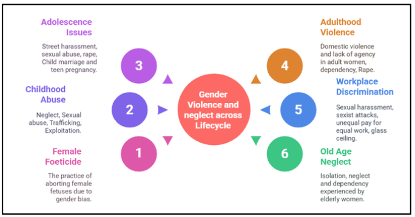
- GBV includes female foeticide, child marriage, domestic violence (the most reported crime against women), dowry deaths, and sexual harassment at the workplace.
- The ongoing debate on criminalizing marital rape is central to the issue of bodily autonomy within marriage (the Justice J.S. Verma Committee (2013) strongly recommended that this existing exception to the definition of rape in the Indian Penal Code (IPC) should be removed).
- Data and facts:
- According to NCRB 2022 data, number of crimes against women increased to 4.45 lakhs in 2022. The victim count for workplace sexual harassment against women has increased from 402 in 2018 to 422 in 2022.
- A 2017 survey by Plan International revealed that 78% of Indian women have experienced some form of harassment in public spaces.
- Sections 75 and 79 of BNS 2023 provide additional legal protections against harassment, covering actions like unwelcome sexual advances, requests for sexual favours, sexually coloured remarks and also word, gesture or act intended to insult modesty of a woman. Such a woman facing sexual harassment at workplace has an option to file a complaint under these provisions.
- CYBER HARASSMENT AND CRIMES
- The internet, a vast digital landscape offering connection and opportunity, can also become a breeding ground for crime. Women in India are disproportionately targeted by cybercriminals, facing a range of online threats that exploit technology to violate their privacy, safety, and dignity.
- The Scope of the Problem
- Prevalence:
- According to NCRB, in 2021, over 20% of all reported cybercrimes (52,974) targeted women.
-
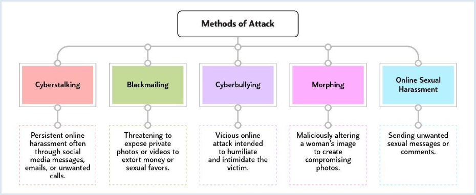
- Impact:
- These crimes can have devastating consequences for victims. They can lead to emotional distress, social isolation, and even physical harm. The fear of online harassment can also limit women’s freedom of expression and participation in the digital space.
- Perpetuation of Online Harassment:
- Anonymity:
- The ability to remain anonymous online emboldens perpetrators to engage in abusive behavior without fear of immediate repercussions.
- Social Media Algorithms:
- Platforms often prioritize sensational content, which can amplify abusive messages and make them more visible.
- Cultural Attitudes:
- Societal norms that condone or overlook sexism contribute to a permissive environment for online abuse.
-
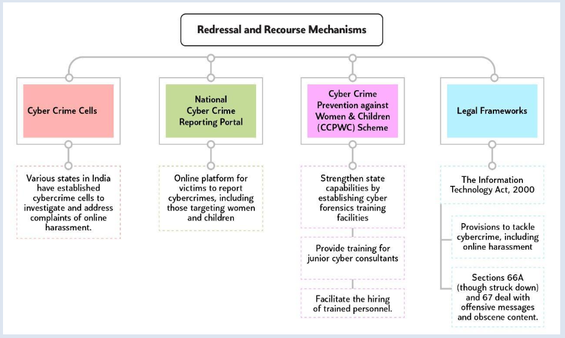
- Decoding Structural Violence Against Women
- Concept:
- The term “Structural Violence,” unlike direct physical violence, refers to the harm and suffering caused by social structures, systems, and institutions that prevent people from meeting their basic needs. It is often invisible, indirect, and normalized. Patriarchy itself is a system of structural violence.
- Manifestations in India:
- Demographic Violence:
- Skewed sex ratios resulting from son meta-preference are not individual choices but outcomes of a social structure that devalues females. This is a form of slow, systemic violence.
- Institutional Violence:
- Unequal access to food, healthcare, and education for girls is a form of violence perpetrated by societal norms and family structures.
- Economic Violence:
- Denying women property rights, paying them less for equal work (gender pay gap), and devaluing their unpaid care work are forms of economic violence that create dependency and vulnerability.
- Symbolic Violence:
- The normalization of stereotypes and sexist language in media and daily life perpetuates patriarchal ideology and justifies discrimination.
- Significance:
- Viewing women’s issues through the lens of structural violence helps shift the focus from blaming individual perpetrators to analyzing and challenging the unjust social, economic, and political systems that cause widespread, predictable harm to women.
-
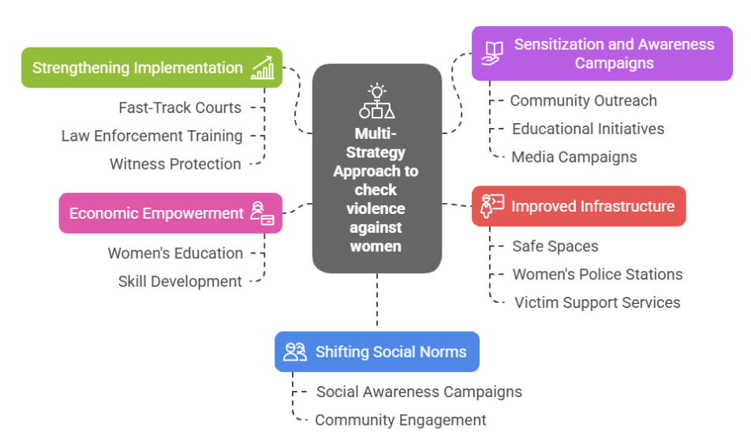
- Case Study- The Women Wrestlers’ Protest (2023)
-
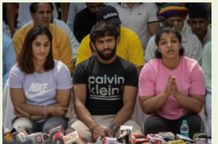
- The prolonged protest by India’s top women wrestlers against the then-president of the Wrestling Federation of India (WFI) for alleged sexual harassment highlighted multiple systemic failures. It underscored the vulnerability of women in sports, the failure of institutional mechanisms like the Internal Complaints Committee (ICC) mandated under the POSH Act, and the immense power dynamics that deter women from speaking out.
- 2.3. Economic Challenges
- Economic disempowerment is a key dimension of gender inequality, limiting women’s ability to achieve self-reliance.
- Low Female Labour Force Participation (FLFP):
- India’s FLFP is among the lowest in the world, at around 41.7% in 2024.
- This is attributed to restrictive social norms, the disproportionate burden of unpaid care work, lack of safe work environments, and a shortage of suitable jobs.
- Informal Sector Dominance:
- A vast majority (over 90%) of working women are in the informal sector—characterized by low wages, precarious work, and no social security.
- The Burden of Unpaid Care Work:
- Indian women perform a disproportionately large amount of unpaid care work (cooking, cleaning, childcare).
- The NSSO Time-Use Survey (2019) showed women spend nearly 10 times more time on domestic duties than men. This “dual burden” or “second shift” severely limits their participation in paid work.
- Property Rights:
- While the Hindu Succession (Amendment) Act, 2005, grants equal inheritance rights, patriarchal norms often prevent women from claiming their rightful share, denying them access to a crucial economic resource.
- Student Notes:
- Case Study- Women-Led Entrepreneurship & SHGs
- Women are increasingly driving entrepreneurship in India. 20.5% of registered MSMEs are women-owned, employing around 27 million people.
- Government initiatives like Mudra Yojana and Stand-Up India aim to boost this further. At the grassroots, Self-Help Groups (SHGs) have been instrumental in fostering micro-enterprise by providing access to credit and collective support.
- 3. Women, Work, and Economic Arenas
- The economic dimension is central to women’s empowerment. This section examines women’s engagement with the Indian economy, analyzing the paradoxes of participation, the impact of major economic transformations, and the nature of emerging work opportunities.
-
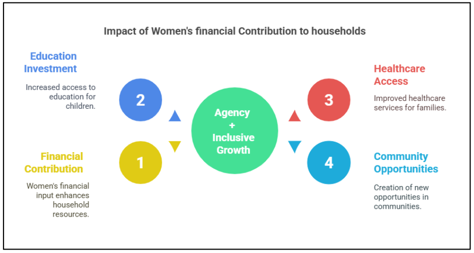
- 3.1. Female Labour Force Participation (FLFP)- Trends and Paradoxes
- Current Status & Trends:
- India has seen a notable increase in its Female Labour Force Participation (FLFP), reaching approximately 41.7% in 2023-24, up from 33% in 2021-22. This closes the gap with the global average (around 47%) but a substantial gap remains compared to men’s participation.
-
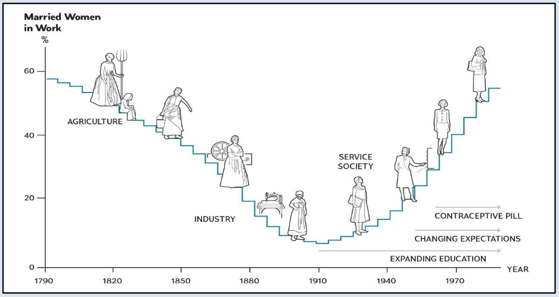
- The Feminization Hypothesis or the U-shaped theory of Female Labor Force Participation Rate in India
- Claudia Goldin (Nobel laureate 2023), suggests a U-shaped relationship between economic development and female labor force participation (FLFPR).
- Initially, as family income rises from low levels, women may withdraw from the workforce (income effect) to focus on domestic duties, which is often seen as a marker of social status.
- At higher levels of development and education, women tend to re-enter the workforce in higher-skilled, better-paying jobs (substitution effect). This helps explain why rising incomes don’t always translate to higher FLFP.
- Educational attainment and FLFPR
- Women with lower levels of education often enter the workforce out of necessity, filling roles in informal or lower-wage sectors.
- At the opposite end, women with advanced degrees secure professional careers, resulting in higher LFPR at both low and high ends of educational attainment.
- This curve reveals a dip in workforce participation at the mid-level education (secondary level) but a rise as women achieve higher qualifications.
-
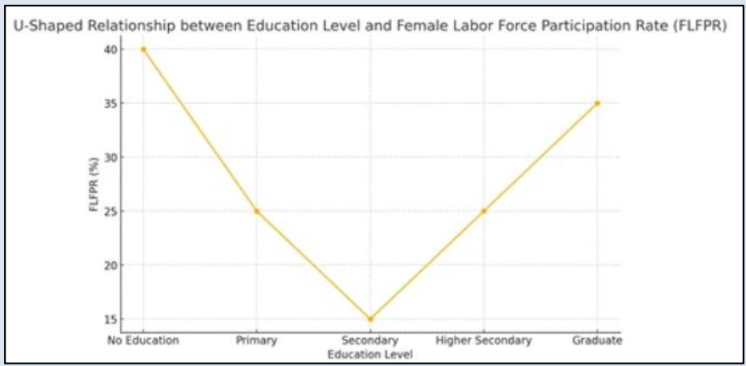
- Investing in higher education for women, therefore, emerges as a strategic approach to unlocking the full potential of the female workforce.
-
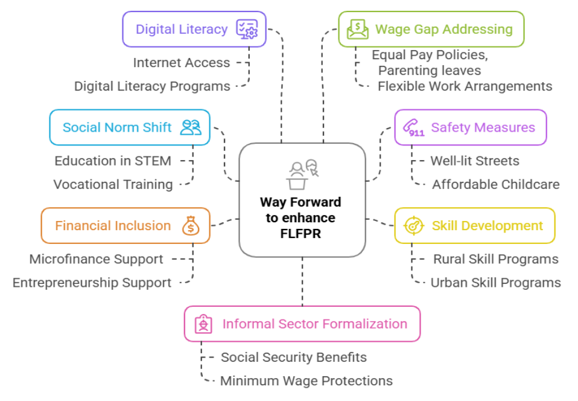
- 3.2. The World of Work- Formal, Informal, and the Burden of Care
- Informal Sector Dominance:
- A staggering 90% of working women in India are engaged in the informal sector—as agricultural laborers, domestic workers, street vendors, or home-based workers.
- This work is characterized by low wages, precarious conditions, and a lack of social security, making women highly vulnerable and contributing to the “feminisation of poverty”.
- Challenges in the Formal Sector:
- The Glass Ceiling & Sticky Floor:
- Women face invisible barriers (glass ceiling) preventing their rise to senior leadership. Data suggests women hold only 15-20% of leadership positions in Indian companies. Many also get stuck in low-level jobs with limited mobility (sticky floor).
- Gender Pay Gap:
- A significant pay gap persists. The World Economic Forum has noted that for every dollar a man gets paid, a woman in India is, on average, paid only 54 cents.
- Workplace Stress:
- Reports indicate that women in professions like auditing and IT often work over 55 hours per week, with a high percentage of workers reporting that workplace stress negatively impacts their mental health.
- The Economics of Unpaid Care Work:
- The disproportionate burden of unpaid care work is the single biggest barrier to women’s economic participation.
- Indian women perform about 8.4 times the amount of unpaid work compared to men, which, if valued, would contribute 15% to 17% of India’s GDP. This “dual burden” or “second shift” leads to severe time poverty, limiting women’s ability to pursue education, leisure, and paid employment.
-
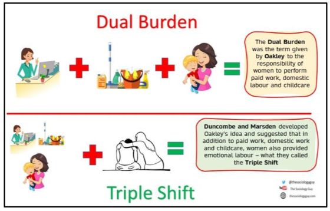
- The Care Economy- Making the Invisible Visible
- Concept:
- The Care Economy encompasses the vast spectrum of paid and unpaid work dedicated to caring for others—including childcare, elder care, and domestic household tasks. For long, the unpaid component of this economy, overwhelmingly performed by women, has been invisible in national economic accounting.
-
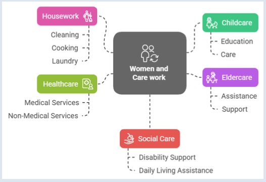
- The ILO’s 5R Framework for Action:
- To create a gender-equal care economy, the International Labour Organization (ILO) advocates a 5R framework:
- 1. Recognition:
- Formally recognizing the immense economic and social value of unpaid care work.
- 2. Reduction:
- Reducing the drudgery of care work through better infrastructure (piped water, clean fuel).
- 3. Redistribution:
- Promoting more equitable sharing of care work between men and women, and between families and the state.
- 4. Rewarding:
- Ensuring decent work, fair pay, and social protection for paid care workers.
- 5. Representation:
- Ensuring care workers have a voice in policymaking.
-
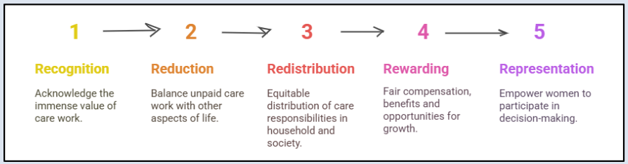
- Significance:
- Investing in the care economy—through public services like affordable childcare and elder care—is not just a social welfare measure. The Economic Survey 2024 estimates that a public investment of 2% of GDP in the care sector could generate 11 million jobs, nearly 70% of which would benefit women. It is a powerful tool for boosting FLFP, creating jobs, and achieving gender equality.
- 3.3. Economic Transformations and their Gendered Impact
- Globalization’s Double-Edged Sword:
- Globalization brought both opportunities and challenges.
- While it created new service-sector jobs for educated urban women in IT and BPOs, it also led to the growth of export-oriented garment and electronics industries where women were often employed in low-wage, exploitative conditions, exemplifying the feminization of labor.
- The Gig Economy- The gig economy offers a new paradigm of work.
- Empowerment via Flexibility:
- Its flexible nature provides income opportunities for women who need to balance care responsibilities, lowering entry barriers to the workforce.
- New-Age Precarity:
- However, it also brings challenges like income instability, lack of social security benefits (as workers are ‘partners’), safety concerns for women in mobility roles, and potential algorithmic bias in work allocation.
- The Dilemma of Middle-Class Working Women:
- Even as more middle-class women enter professions, they continue to navigate a complex battle with patriarchal structures.
- They face the professional challenge of the glass ceiling at work while simultaneously shouldering the societal expectation of being the primary caregiver at home, leading to immense role conflict and stress.
- Case Study- The Gig Economy Worker- Autonomy vs. Vulnerability
-
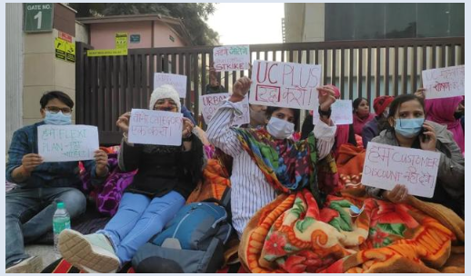
- Platforms like Urban Company have enabled thousands of women to work as self-employed beauticians and wellness professionals, offering them higher potential earnings and flexible hours compared to traditional salons. This represents a clear form of economic empowerment.
- In 2024, a “digital strike” by women gig workers in India, organized by the Gig and Platform Workers Union (GIPSWU), aimed to raise awareness about their working conditions and demand better rights within the gig economy. The strike involved female gig workers shutting off their phones and going into “digital silence” on Diwali, a major Hindu festival. The protest drew attention to issues like high commissions, low pay, unsafe working conditions, and the lack of social security and basic rights.
- 4. Agency, Movements, and Political Participation
- Despite facing structural barriers, women in India have not been passive victims. They have consistently exercised their agency, individually and collectively. This section explores the role of women’s movements, organizations, and their engagement with the political sphere.
- 4.1. Women’s Movements in India- Contributions and Critiques
- 4.1.1. Historical Overview:
- Phase 1- Reform and Anti-Colonial Struggles (Late 19th - Mid 20th Century)
- Reformist Movements
- Savitribai Phule and Ishwar Chandra Vidyasagar spearheaded campaigns against Sati (widow burning) and child marriage.
- Educational Empowerment:
- Jyotirao Phule established the first girls’ school in India in 1848.
- Key Organisations:
- Brahmo Samaj:
- Founded by Raja Rammohun Roy, fought for the abolition of Sati.
- Arya Samaj:
- Championed women’s empowerment.
- Anti-Colonial Struggles
- Integration with Independence Movement:
- Women played a crucial role in the Indian independence movement, with Mahatma Gandhi mobilizing them for swaraj (self-rule).
- Significant Organisations:
- All India Women’s Conference (1927):
- Advocated for political participation and social reforms.
- Women’s Indian Association (1917):
- Focused on women’s suffrage, education, and social reform.
- Pre-independence movements, largely led by men, focused on social reforms to “uplift” women. However, post-independence, the baton was passed on to women themselves.
- Phase 2- The Quest for Legal and Social Equality (1960s - 1980s)
- Legal and Social Reforms
- Towards Equality Report (1974):
- Exposed the stark realities of women’s lives, highlighting issues like declining sex ratio, economic marginalization, and discriminatory personal laws. This served as a catalyst for further action.
- Vina Mazumdar and Lotika Sarkar, played a key role in compiling this groundbreaking report.
- The Rise of Autonomous Women’s Groups (1970s-1980s):
- The 1970s and 80s saw a surge of autonomous women’s groups, independent from state control. These groups tackled a diverse range of issues critical to women’s empowerment:
- Economic Empowerment:
- Pioneering organizations like the Self-Employed Women’s Association (SEWA), championed the cause of women workers in the informal sector, providing them with training, skill development, and access to credit.
- Legislative Reforms:
- Women’s organizations actively lobbied the state for legislative reforms.
- The All India Democratic Women’s Association (AIDWA), for instance, played a crucial role in advocating for women’s political rights and equal opportunities.
- Legal Support:
- Organizations like the All India Muslim Women’s Personal Law Board (AIMWPLB) and Bhartiya Muslim Mahila Andolan (BMMA) provided vital legal aid. They also provided support to Muslim women facing issues related to marriage, divorce, property rights, and child custody.
- The landmark Shah Bano case, where a Muslim woman fought for maintenance after divorce, is a prime example of their work.
- Cooperative movements:
- Cooperative societies like Shri Mahila Griha Udyog (Lijjat Papad) not only provided women with employment opportunities but also empowered them through collective ownership and decision-making.
- Phase 3- Decentralization and Grassroots Activism (1990s - Early 2000s)
- Grassroots Movements:
- The 1990s witnessed a shift towards decentralization and grassroots activism.
- Constitutional Amendments:
- The 73rd and 74th amendments (1992) mandated 33% reservation for women in Panchayats and Municipalities.
- NGO Rise:
- Women-led NGOs provided support networks and legal aid.
- Diverse Movements
- Dalit and Marginalized Women:
- This phase also gave rise to movements addressing the specific needs of Dalit women and other marginalized communities. These movements challenged the notion of a singular “womanhood” and highlighted the intersectionalities of gender, caste, and class.
- Digital Feminism:
- The advent of the digital age ushered in a new era of activism. Social media platforms like Twitter became fertile ground for movements like #MeToo, which highlighted issues of sexual harassment and abuse.
- The online space broadened the agenda of the women’s movement, bringing issues of LGBTQ+ rights, body autonomy, and mental health to the forefront.
- Contemporary Organisations
- Peace Movements:
- Organisations like Naga Mothers Association addressed problems of conflict, peace-building, and substance abuse in insurgency-affected areas.
- Environmental Advocacy:
- Ecofeminism linked women’s development with environmental protection.
- 4.1.2. Problems Faced by Women’s Organisations
- Structural Challenges
- Unorganized Structure:
- Many women’s NGOs lack proper organization.
- Financial Constraints:
- Limited funding hampers their activities.
- Urban-Centric Focus:
- Most organisations serve urban women, neglecting rural issues.
- Social and Political Issues
- Narrow Support Base:
- Women-centric issues often lack active support from men.
- State Dependence:
- Many organisations, despite claiming autonomy, align closely with state agendas.
- Fragmentation:
- There is significant fragmentation among women’s organisations, with different sections constituting their own movements.
- 4.1.3. Critiques of the Movement:
- Urban and Middle-Class Bias:
- A significant critique is that the mainstream women’s movement has often been dominated by urban, educated, middle-class women, focusing on issues more pertinent to their lives while sometimes failing to adequately represent the concerns of women from rural and lower socio-economic strata.
- Lack of Intersectionality:
- It has been criticized for not fully addressing the unique and compounded discrimination faced by Dalit, Adivasi, and minority women, whose struggles are shaped by the intersection of caste, class, and gender.
- 4.2. Landmark Judgements Related to Women Issues
- 4.2.1. Women’s Rights to Privacy and Dignity
- 1. State of Maharashtra vs Madhukar Narayan Mardikar (1991):
- The Supreme Court held that “even a woman of easy virtue is entitled to privacy and no one can invade her privacy.” This judgment reinforced the idea that the right to privacy under Article 21 applies to all individuals, irrespective of their social or moral character.
- 2. Joseph Shine vs Union of India (2018):
- The Court struck down Section 497 of the Indian Penal Code (Adultery), declaring it unconstitutional. It observed that “the law in adultery is a codified rule of patriarchy” and that “legal sovereignty of one sex over another is wrong.” The judgment held that the provision violated a woman’s right to dignity and autonomy, thereby infringing Article 21 of the Constitution.
- 4.2.2. Women’s Rights in the Workplace and Employment
- 1. Vishaka and Others v. State of Rajasthan and Others (1997):
- The Supreme Court held that sexual harassment of women at the workplace amounts to a violation of the fundamental rights under Articles 14, 15, and 21 of the Constitution. The Court laid down the Vishaka Guidelines, which became the foundation for the Sexual Harassment of Women at Workplace (Prevention, Prohibition and Redressal) Act, 2013.
- 2. Babita Puniya Case (2020):
- The Supreme Court ruled that Permanent Commission should be granted to women in the Army regardless of their length of service, across all ten streams where the Central Government had already allowed Short Service Commissions. The judgment upheld gender equality and equal opportunity in the armed forces, reinforcing the constitutional spirit of Articles 14 and 15.
- 4.2.3. Reproductive Rights and Personal Liberty
- 1. Suchita Srivastava Case (2009):
- The Supreme Court held that the right to reproductive choice is an integral component of a woman’s right to life and personal liberty under Article 21 of the Constitution. The judgment emphasized that women have the autonomy to make decisions regarding reproduction, including the choice to continue or terminate a pregnancy, thereby reinforcing bodily integrity and privacy as fundamental rights.
- 2. The Principal Secretary, Health & Family Welfare Case (2023):
- The Supreme Court ruled that even unmarried women who become pregnant from consensual sexual relationships have the right to terminate pregnancy up to 24 weeks. The Court expanded the interpretation of the Medical Termination of Pregnancy (Amendment) Act, 2021, making reproductive rights more inclusive and gender-neutral, and underscoring the principles of equality, dignity, and personal liberty.
- 4.2.4. Marriage, Family, and Personal Choice
- 1. Lata Singh Case (2006):
- The Supreme Court held that every individual has the right to marry a person of their choice, which falls under the ambit of Article 21 (Right to Life and Personal Liberty) of the Constitution. The Court directed that police must take strict action against anyone indulging in violence or harassment of couples involved in inter-caste or inter-religious marriages. This judgment reaffirmed the constitutional protection of personal liberty, autonomy, and social reform against caste-based discrimination.
- 2. Sabarimala Temple Entry Case (2018):
- The Supreme Court declared that the custom prohibiting women of menstruating age (10–50 years) from entering the Sabarimala Temple was discriminatory and unconstitutional, as it violated Articles 14 (Equality before Law), 15 (Non-discrimination), 17 (Abolition of Untouchability), and 25 (Freedom of Religion). The verdict emphasized that devotion cannot be subjected to gender-based exclusion, marking a crucial step toward gender justice and the reform of patriarchal religious practices.
- 4.2.5. Relating to Maternity Leave
- Deepika Singh Case (2022):
- The Supreme Court ruled that a woman’s right to maternity leave is a statutory and fundamental entitlement that cannot be denied merely because she had earlier taken child-care leave for her non-biological children (such as stepchildren). The judgment emphasized that family structures in modern society are diverse — including single parents, blended families, and adoptive families — and the law must recognize and protect these realities. It reinforced gender equality and social inclusiveness under Articles 14 (Equality before Law) and 21 (Right to Life and Dignity).
- 4.3. The Power of the Collective- Women’s Organisations
- Self-Help Groups (SHGs):
- SHGs have emerged as one of the most powerful instruments for grassroots empowerment. Beyond providing access to micro-credit, they have become platforms for building social capital, fostering leadership skills, and taking collective action on local issues like alcoholism, domestic violence, and school infrastructure.
- Trade Unions and Grassroots Groups:
- Trade Unions:
- Groups like SEWA have organized women in the informal sector, providing them with bargaining power and social security.
- Advocacy & Peace Groups:
- Organizations like the All India Democratic Women’s Association (AIDWA) have consistently advocated for legislative reforms, while groups like the Naga Mothers’ Association have played a crucial role in peace-building in conflict-ridden areas.
- Case Study- The SEWA Model- Organizing the “Poor but So Many”
- Founded by Ela Bhatt, the Self-Employed Women’s Association (SEWA) is a globally recognized trade union with a membership of over 2.9 million women in the informal sector. Drawing on Gandhian principles, SEWA’s unique model combines the struggle of trade unionism with the constructive action of developmental programs.
- It has successfully provided members with access to finance (through its own cooperative bank), healthcare, childcare, and insurance, demonstrating a powerful, scalable model for the economic empowerment of the most vulnerable working women.
- The Feminist Principle- “The Personal is Political”
- The Concept:
- This powerful slogan, central to second-wave feminism, argues that women’s personal experiences are not isolated, individual troubles but are deeply intertwined with and caused by broader public structures of power and patriarchy.
-
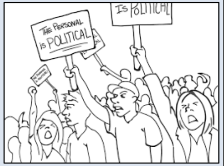
- Breaking the Public/Private Divide:
- Patriarchy has historically confined women’s issues (like domestic abuse, marital rape, unequal housework) to the ‘private’ sphere of the family, deeming them outside the scope of law and political justice.
- The women’s movement challenged this by asserting that what happens inside the home is a political issue, shaped by societal power relations. For example, domestic violence is not a “family dispute” but a crime and a violation of human rights that the state has an obligation to address.
- Relevance:
- This framework is fundamental to understanding the struggle for virtually all major laws concerning women in India, from the Protection of Women from Domestic Violence Act to the ongoing debate around criminalizing marital rape. It provides the justification for state intervention in the so-called ‘private’ sphere to ensure justice and equality.
- 4.4. Political Empowerment
- Political empowerment is a critical dimension of women’s overall empowerment, enabling them to participate in decision-making and influence policy.
- Representation in Local Governance (PRIs):
- The 73rd and 74th Constitutional Amendments, which mandated a 33% reservation for women in local bodies, have been revolutionary. Today, women hold about 46% of elected seats in Panchayati Raj Institutions (PRIs).
- Challenge:
- ‘Sarpanch Pati’- A significant challenge remains the phenomenon of ‘Sarpanch Pati’ or ‘Pradhan Patis’, where male relatives exercise de facto power behind the elected woman representative, undermining her agency.
-
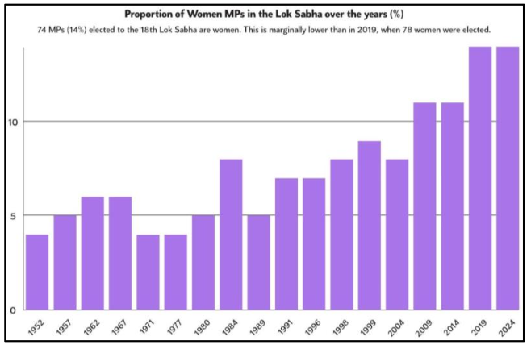
- Representation in Parliament and State Legislatures:
- Women’s representation at the national level remains abysmally low. In the 2024 Lok Sabha, women MPs constitute only 13.6% of the total, a regression from 2019.
- The Nari Shakti Vandan Adhiniyam, 2023 (106th Amendment Act), which reserves one-third of seats for women in the Lok Sabha and State Assemblies, is a landmark step. However, its implementation is contingent on a future census and delimitation exercise, leading to debates about its delayed timeline and the demand for a ‘quota within quota’ for OBC women.
-
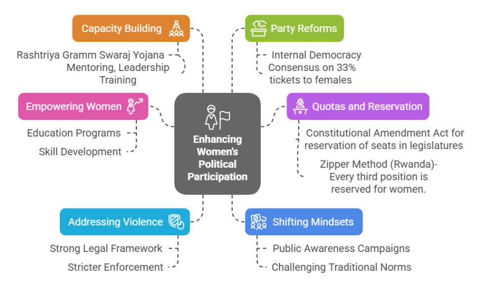
- Case Study- Impact of Political Empowerment of Women in Panchayati Raj Institutions (PRIs)
- Studies by economists like Esther Duflo have shown that women-led Panchayats tend to invest more in public goods critical to women’s needs, such as drinking water, sanitation, and health.
- Case Study- Successful models for women’s reservation in political system
- Rwanda’s “Zipper Method”:
- Rwanda has the highest percentage of women parliamentarians globally (over 60%).
- This success is largely attributed to their unique quota system – the “zipper method.” Political parties are required to alternate male and female candidates on their electoral lists, ensuring a minimum of 30% female representation.
- Bolivia’s Parity Law:
- In 2009, Bolivia enacted a law mandating equal participation of women in all elected bodies. This law, combined with quotas for indigenous women, led to a dramatic rise in female representation in parliament, from 13% to 50% within a decade. The law also stipulated state funding for women candidates, addressing financial barriers to entry.
- 4.5. Engaging Men for Gender Justice
- Achieving gender equality is a societal responsibility that requires the active participation of men and boys.
- Why Engage Men?:
- Patriarchy is a system that harms men too, by enforcing rigid and often toxic standards of masculinity. Engaging men helps in deconstructing these harmful norms for the benefit of all genders. It shifts the narrative from “women’s issues” to “societal issues.”
- Role in Women’s Organizations:
- Encouraging male membership in women’s rights organizations can help broaden the movement’s support base, increase its political influence, and counter the perception of feminism as “anti-men.” However, this must be balanced to ensure that women’s autonomous spaces for leadership and voice are not diluted.
- Transforming Masculinities:
- The focus is on promoting positive models of masculinity that value respect, empathy, and partnership over dominance and control.
- Student Notes:
- Case Study- ‘Mardon Wali Baat’- Engaging Men to Redefine Masculinity
- ‘Mardon Wali Baat’ (A Man’s Talk) is an initiative by the NGO MAVA (Men Against Violence and Abuse) in India. It works with young men and boys in schools and colleges, using workshops, street plays, and discussions to help them critically examine traditional notions of masculinity, challenge sexist behavior, and become active allies in promoting gender equality.
- This exemplifies a proactive approach to engaging men as partners for social change.
- 5. The State, Law, and the Path Forward
- The journey towards gender equality requires proactive interventions from the state, responsive legal frameworks, and a forward-looking approach to contemporary challenges. This module examines the role of the state and policy, and charts a course for the future.
- 5.1. The Role of the State- Legal and Constitutional Frameworks
- The Indian state is mandated by the Constitution to ensure gender justice.
- Constitutional Provisions:
- The Constitution provides a strong foundation for women’s rights through articles ensuring equality before law (Art 14), prohibiting discrimination on grounds of sex (Art 15(1)), empowering the state to make special provisions for women (Art 15(3)), ensuring equality of opportunity in public employment (Art 16), and guaranteeing the right to life and dignity (Art 21). Directive Principles also mandate humane conditions of work and maternity relief (Art 42).
-
| Article | Provision |
|---|
| Art 14 | Equality before law |
| Art 15(1) | Prohibits discrimination on grounds of sex |
| Art 15(3) | Empowering the state to make special provisions for women |
| Art 16 | Equality of opportunity in public employment |
| Art 21 | Guaranteeing the right to life and dignity |
| Art 42 | Mandate humane conditions of work and maternity relief |
- Key Legal Interventions:
- Over the years, a robust legal architecture has been built, including:
- The Hindu Succession (Amendment) Act, 2005, granting daughters equal inheritance rights.
- The Protection of Women from Domestic Violence Act, 2005, which recognized civil remedies for a wide range of abuses.
- The Sexual Harassment of Women at Workplace (Prevention, Prohibition and Redressal) Act, 2013 (POSH Act), based on the Vishakha Guidelines.
- The new Bharatiya Nyay Sanhita, 2024, includes provisions against digital violence, addressing a contemporary challenge.
- Despite these laws, their on-ground effectiveness is often hampered by weak implementation, administrative apathy, bureaucratic hurdles, and deep-rooted patriarchal social norms that discourage women from seeking justice.
- Student Notes:
- Case Study- The Marital Rape Debate
- A critical legal gap remains the exception for marital rape in India’s penal code (Exception 2 to Section 375, IPC). While the Justice J.S. Verma Committee (2013) unequivocally recommended its deletion, it was not implemented.
- The ongoing legal debate highlights the tension between recognizing a woman’s bodily autonomy within marriage and the patriarchal notion of marriage as implying consent. This issue remains a central frontier in the fight for women’s rights.
- 5.2. Policy in Practice- Gender Mainstreaming and Major Schemes
- Why Gender Concerns Matter in Policy:
- Gender-neutral policies often end up reinforcing existing inequalities because they fail to account for the different social realities, needs, and barriers faced by women. Gender-responsive planning is crucial because it leads to more effective and equitable outcomes.
- Example:
- Women Panchayat leaders have been shown to prioritize investments in public goods critical to community well-being, like drinking water and sanitation, demonstrating how women’s participation improves policy outcomes for all.
- Gender Mainstreaming and Budgeting:
- Gender Mainstreaming is the process of integrating a gender perspective into all stages of policy-making and implementation. A key tool for this is Gender-Responsive Budgeting (GRB), which analyzes the government’s budget for its differential impacts on women.
- The share of the Gender Budget in the total Union Budget has increased, reaching 8.8% in the 2025-26 budget proposal.
- 5.3. Major Schemes Related to Women
- 5.3.1. Mission Shakti- Umbrella Scheme for Women Empowerment
- ‘Mission Shakti’, an Integrated Women Empowerment Programme, as Umbrella Scheme for the Safety, Security and Empowerment of Women. This initiative has been instrumental in improving the lives of women across the country through its two main verticals: Sambal (for safety and security) and Samarthya (for empowerment).
- 1. Sambal vertical:
- One Stop Centres:
- It provides integrated support and assistance under one roof to women affected by violence and those in distress, both in private and public spaces. It provides services like medical aid, legal aid and advice, temporary shelter, police assistance and psycho-social counselling to needy women.
- Women Helpline:
- It provides 24x7x365 emergency and non-emergency response through telephonic short-code 181 to women, both in public and private spaces by linking them with appropriate authorities such as Police, One Stop Centres, Hospitals, Legal Services Authorities etc. Additionally, it provides information about women welfare schemes and programs.
- BBBP:
- It aims to prevent gender biased sex selective elimination, ensure survival and protection of girl child and also to ensure education of the girl child.
- Nari Aadalat:
- It serves as an alternate Grievance Redressal Mechanism for resolving cases of petty nature (harassment, subversion, curtailment of rights or entitlements) faced by women at Gram panchayat level by negotiation, mediation, and reconciliation with mutual consent for speedy, accessible, and affordable justice.
- 2. Samarthya Vertical
-
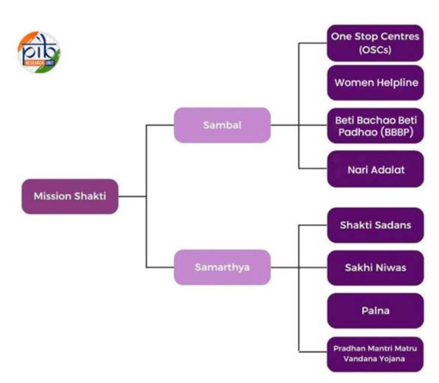
- Shakti Sadan Scheme:
- It is an Integrated Relief and Rehabilitation Home for women in distressful situations including trafficked women.
- Sakhi Niwas:
- It aims to provide safe, secure, conveniently located, and affordable accommodation for women who are in the workforce and/or aspire to join the workforce. The scheme also makes a provision of Day Care Centre for children of the residents of the Sakhi Niwas.
- Palna:
- Its objective is to provide quality creche facility in safe and secure environment for children.
- The Pradhan Mantri Matru Vandana Yojana (PMMVY):
- It provides financial compensation for loss of wages due to pregnancy and childbirth. The scheme, previously limited to the first child, has now been extended to cover the second child if the child is a girl.
- 5.3.2. Other Schemes for Women empowerment
- Economic Empowerment
- Gender Budget:
- The Gender Budget in 2025-2026 constitutes 8.86% of the total Union budget, increasing from 6.8% in FY 2024-25.
- PM Jan Dhan Yojana:
- 55.6% of account holders are women.
- Deendayal Antyodaya Yojana-NRLM:
- Empowers women through Self-Help Groups (SHGs).
- Entrepreneurship:
- High female participation in PM Mudra Yojana and Stand-Up India.
- PM AWAS Yojana mandates female ownership of houses to promote gender equity.
- Education and Skilling
- Jan Shikshan Sansthan (JSS) Scheme:
- Women constitute about 82% of the total beneficiaries.
- Women in Science and Engineering (WISE KIRAN) boosts female involvement in STEM fields.
- Initiatives like Vigyan Jyoti and exclusive research grants for women scientists under CSIR-ASPIRE aim to enhance women’s participation in scientific research.
- Empowerment through access to basic needs
- Swachh Bharat Mission:
- Construction of toilets.
- Ujjwala Yojana:
- Provision of clean cooking gas connections.
- Jal Jeevan Mission:
- Provision of tap drinking water connections.
- These initiatives reduce women’s drudgery and care burden, freeing up time for productive work.
- Political Empowerment
- Nari Shakti Vandan Adhiniyam, 2023 aims to increase women’s political participation.
- Reservation for women in local bodies has led to greater investment in public goods related to women’s concerns and improved child health and education outcomes.
- 5.3.3. A Critical Look at Major Schemes:
- Beti Bachao, Beti Padhao (BBBP):
- Credited with contributing to an improved Sex Ratio at Birth (SRB) and promoting girls’ education.
- PM Matru Vandana Yojana (PMMVY):
- A maternity benefit scheme that has faced challenges of declining coverage (from 36% in 2019-20 to 9% in 2023-24) and conditionalities that exclude many women.
- Ujjwala Yojana:
- Aims to reduce the drudgery of rural women by providing clean cooking fuel (LPG), with significant health and time-saving benefits.
- 5.4. Contemporary Frontiers and the Path Forward
- The Gendered Impact of Climate Change:
- The climate crisis is not gender-neutral. Women, especially poor rural women, are disproportionately affected due to their roles in securing water, food, and fuel. The ecofeminist perspective highlights how the destruction of nature and the marginalization of women are interconnected processes.
- Data Point:
- Women and children are 14 times more likely than men to die in a climate-related disaster. Increased heatwaves translate to more hours of unpaid care work for women in India.
- Technology- A Double-Edged Sword:
- The Digital Divide:
- Women’s limited access to mobile phones (31% of women vs. 61% of men) and digital literacy acts as a barrier to education, economic opportunities, and accessing services.
- Tech-Facilitated Gender-Based Violence (TFGBV):
- There is a rise in new forms of violence like cyberstalking, non-consensual image sharing, and deepfakes, which disproportionately target women and aim to silence them in online spaces.
- Tech for Empowerment:
- At the same time, technology is a powerful tool for empowerment, seen in e-SHG platforms, digital marketing by women entrepreneurs, and online safety initiatives like the Digital Shakti program.
- Empowerment and Population Stabilization:
- There is a direct and established correlation between women’s empowerment and demographic outcomes. Women’s access to education, economic agency, and control over their reproductive health are the most effective “contraceptives.” Empowering women is thus the key to achieving sustainable population growth.
- Case Study- The ‘Pink Auto’ Initiative
-
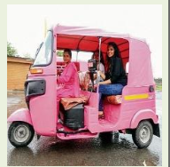
- The ‘Pink Auto’ initiative, implemented in cities like Amritsar, provides subsidized e-autos to women drivers. This simple policy intervention has multiple positive impacts:
- Economic Empowerment:
- Creates a new livelihood avenue for women.
- Women’s Safety:
- Provides a safer mobility option for women passengers.
- Breaks Stereotypes:
- Challenges the gender stereotype of driving as a male profession.
- Environmental Benefits:
- Promotes clean energy through e-vehicles.
- This showcases how targeted, gender-responsive initiatives can yield multi-dimensional benefits.
- 5.5. The Way Forward - A Five-Pronged Strategy
- Achieving genuine gender equality in India requires a holistic, multi-pronged approach that goes beyond piecemeal interventions. The path forward can be summarized in a five-pronged strategy:
- Social & Behavioral Change (Mindsets):
- Using education, media, and community engagement to challenge deep-rooted patriarchal norms and gender stereotypes. Engaging men and boys is critical to this process.
- Economic Empowerment (Livelihoods):
- Increasing FLFP by creating safe and decent work opportunities, ensuring equal pay, and investing in the care economy to reduce the burden of unpaid care work. Promoting women’s entrepreneurship and property rights is key.
- Political Representation (Leadership):
- Ensuring effective implementation of women’s reservation in local bodies and Parliament (Nari Shakti Vandan Adhiniyam) to bring women’s voices to the center of decision-making.
- Legal Efficacy (Justice):
- Strengthening the implementation of existing laws against gender-based violence. This requires sensitizing police and judiciary, establishing fast-track courts, and ensuring survivor-centric justice.
- Human Capital Development (Capabilities):
- Investing in women’s health (nutrition, reproductive health, mental well-being) and education at all levels, ensuring every girl has the capability to reach her full potential.
- This integrated strategy recognizes that women’s empowerment is not just a goal in itself, but the foundational pillar for building a more just, prosperous, and sustainable India.
- CHAPTER 3- POPULATION AND ASSOCIATED ISSUES
- Key Data & Facts at a Glance
| Category | Metric | Value | Source |
|---|
| Population Size & Growth | Current Population | Over 1.428 billion people | UNFPA |
| Decadal Growth Rate | 17.7% (2001-2011) | Census 2011 |
| Population Density | 382 persons per sq. km | Census 2011 |
| Fertility & Mortality | Total Fertility Rate (TFR) | 2.0 | NFHS-5, 2019-21 |
| Maternal Mortality Ratio (MMR) | 97 deaths per 100,000 live births | SRS, 2018-20 |
| Infant Mortality Rate (IMR) | 35.2 deaths per 1,000 live births | SRS, 2022 |
| Life Expectancy at Birth | Approximately 67.7 years | NITI Aayog |
| Age Structure & Demographic Dividend | Median Age | Around 28 years | - |
| Youth Population (15-29 years) | About 27% of the population | - |
| Elderly Population (60+ years) | Currently around 10%, projected to rise to nearly 20% by 2050 | - |
| Gender Demographics | Sex Ratio (Overall) | 1020 females per 1000 males | NFHS-5 |
| Sex Ratio at Birth (SRB) | 929 females per 1000 males | NFHS-5 |
| Anemia in Women | 57% of women aged 15-49 | NFHS-5 |
| Regional Disparities (NFHS-5) | TFR in Bihar | 2.98 | NFHS-5 |
| TFR in Meghalaya | 2.91 | NFHS-5 |
| TFR in Uttar Pradesh | 2.35 | NFHS-5 |
| Regional Disparities (NFHS-5) | TFR in Kerala | 1.8 | NFHS-5 |
| TFR in Tamil Nadu | 1.8 | NFHS-5 |
- Population Size & Growth:
- Current Population:
- India became the world's most populous nation in 2023, with over 1.428 billion people (UNFPA).
- Decadal Growth Rate:
- Was 17.7% during 2001-2011 (Census 2011), showing a decline from the previous decade, indicating a slowing growth rate.
- Population Density:
- 382 persons per sq. km (Census 2011).
- Fertility & Mortality:
- Total Fertility Rate (TFR):
- Has fallen to 2.0 (NFHS-5, 2019-21), which is below the replacement level of 2.1. This signifies that India has achieved population stabilization at a national level.
- Maternal Mortality Ratio (MMR):
- Has declined significantly to 97 deaths per 100,000 live births (SRS, 2018-20).
- Infant Mortality Rate (IMR):
- Stands at 35.2 deaths per 1,000 live births (SRS, 2022).
- Life Expectancy at Birth:
- Is approximately 67.7 years (NITI Aayog).
- Age Structure & Demographic Dividend:
- Median Age:
- India has a young population with a median age of around 28 years, compared to 38 for China and 48 for Japan.
- Youth Population (15-29 years):
- Constitutes about 27% of the population, forming the core of the demographic dividend.
- Elderly Population (60+ years):
- Is currently around 10% but is projected to rise to nearly 20% by 2050, indicating a rapidly aging society.
- Gender Demographics:
- Sex Ratio (Overall):
- Reached 1020 females per 1000 males (NFHS-5), a major improvement.
- Sex Ratio at Birth (SRB):
- Is 929 females per 1000 males (NFHS-5), still indicating the persistence of son preference.
- Anemia in Women:
- 57% of women aged 15-49 are anemic (NFHS-5).
- Regional Disparities (NFHS-5):
- TFR Variation:
- States like Bihar (2.98), Meghalaya (2.91), and Uttar Pradesh (2.35) have TFRs well above replacement level, while states like Kerala (1.8) and Tamil Nadu (1.8) have much lower rates, highlighting a stark demographic divide.
- Glossary of Essential Demographic & Sociological Concepts
- Demographic Transition:
- The theory explaining the historical shift of a country's population from high birth/death rates to low birth/death rates, typically in stages as it develops. India is considered to be in the late third stage of this transition.
- Demographic Dividend:
- The economic growth potential that can result from shifts in a population’s age structure, mainly when the share of the working-age population (15 to 64) is larger than the non-working-age share of the population (14 and younger, and 65 and older).
- Demographic Winter:
- An advanced demographic stage characterized by a combination of extremely low fertility rates (well below replacement level), a rapidly aging population, a shrinking workforce, and a potential long-term decline in the overall population, leading to severe economic and social challenges.
- Total Fertility Rate (TFR):
- The average number of children a woman would have over her childbearing years (15-49). Replacement Level TFR is 2.1, the rate at which a population exactly replaces itself from one generation to the next, assuming no migration.
- Infant Mortality Rate (IMR):
- The number of deaths of infants under one year of age per 1,000 live births. It is a key indicator of a society's overall health status.
- Maternal Mortality Ratio (MMR):
- The number of maternal deaths during a given time period per 100,000 live births during the same timeperiod. It reflects the quality of a society's maternal healthcare.
- Population Momentum:
- The tendency for a population to continue growing even after fertility rates have fallen to replacement level. This happens because of the large number of people already in the childbearing age group.
- Dependency Ratio:
- The ratio of dependents (people younger than 15 or older than 64) to the working-age population (those 15-64). A low dependency ratio is a key component of the demographic dividend.
- Population Pyramid:
- A graphical illustration that shows the distribution of various age groups in a population, which forms the shape of a pyramid when the population is growing. The shape reveals the age-sex structure and future trends.
- 1. Population Dynamics- Concepts, Theories, and Measurement
- India has overtaken China to become the world's most populous country, according to UN population estimates. Factors like census data and birth and death rates inform this milestone, with India's population reaching 1,425,775,850, marking a pivotal moment in global demographics.
- 1.1. How Population is Measured
- The primary source of population data in India is the decennial Census. It is a comprehensive exercise that provides a detailed snapshot of the demographic, social, and economic characteristics of the population.
- National population censuses usually happen every 10 years and include door-to-door data collection.
- In India, the Census is conducted by the Office of the Registrar General and Census Commissioner of India, which operates under the Ministry of Home Affairs.
- The previous Census was held in 2011, and the subsequent exercise, which was scheduled to take place in 2021, was delayed indefinitely, initially due to the COVID-19 pandemic. The next Census of India will now be conducted in 2027, as notified by the Union Ministry of Home Affairs (MHA) in June 2025.
- Importance of Census:
- Policy Making:
- Provides data for planning welfare schemes and allocating resources.
- Political Representation:
- Data is used for the delimitation of parliamentary and assembly constituencies.
- Understanding Society:
- It is the most credible source of information on the size, distribution, and composition of India's diverse population.
- Student Notes:
- In what ways did the 2021 Census mark a departure from traditional data collection methods in India?
- The 2021 Census incorporates digital data collection via mobile apps and allows online participation for the first time, enhancing accuracy.
- It includes OBC data since 1931 and transgender individuals, and uses 18 languages plus English.
- The questionnaire has 31 questions on topics like internet access and LPG/PNG connections, reflecting socio-economic changes.
- Consequences of a Delayed Census
- Deprivation of Entitlements:
- For example, Delays in updating data might exclude approximately 12 crore additional people from accessing subsidized food grains.
- Resource Allocation Issues:
- Central government funds to states are often allocated based on population figures. Delayed census data can lead to inequitable distribution of resources.
- The Debate on a Caste-Based Census
- A caste census is a systematic collection of data on individuals’ caste identities during a nationwide population census.
-
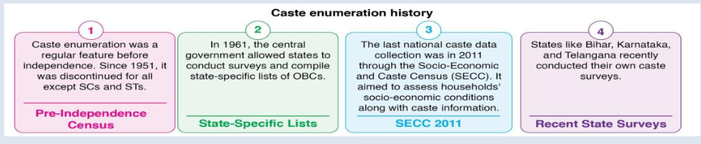
- There was a persistent political and social demand for a comprehensive caste-based census in India. The Government of India has officially approved the inclusion of caste enumeration in the upcoming national census.
- Arguments in Favor:
- Accurate Data for Policy Formulation:
- It provides updated and reliable data for effective policy-making, addressing the gap in caste data for OBCs and other caste groups.
- Reshaping Affirmative Action:
- Helps reassess reservation quotas and affirmative action, ensuring equitable distribution of benefits.
- Sub-categorization of OBCs:
- Enables sub-categorization within OBCs as recommended by the Rohini Commission (2017), enhancing fairness in reservation distribution.
- Political Representation and Inclusivity:
- Improves political representation of marginalized groups and helps create more inclusive, equitable policies.
- Against:
- Reinforcing Caste Identities:
- It may entrench caste consciousness, perpetuating divisions and contradicting the constitutional goal of promoting fraternity and equality.
- Risk of Political Exploitation:
- Vote-bank politics could arise, leading to demands for reservations from politically dominant groups, increasing pressures on quotas.
- Equity vs. Equality Issues:
- Micro-quota fragmentation could harm social cohesion and disproportionately exclude minorities within backward classes.
- Constitutional Ambiguities:
- No constitutional mandate for caste enumeration, raising legal issues regarding proportional representation and the reservation system.
- Suggestions for Accurate Census:
- Standardized Caste List:
- Develop a unified caste list across states to avoid inconsistencies and classification errors.
- Data Verification and Grievance Redressal:
- Incorporate Aadhaar integration and establish a robust grievance redressal system to ensure accurate identity verification and minimize errors.
- AI for Sorting and Analysis:
- Leverage Artificial Intelligence (AI) and Machine Learning (ML) to streamline data sorting and classification.
- A caste census can significantly improve representation and policy targeting for marginalized communities. However, it must be executed with strong safeguards to prevent political misuse and ensure accurate data.
- 1.2. Key Determinants of Population Change
- Population size and composition are determined by three fundamental processes.
- Fertility:
- Refers to the actual reproductive performance of a population. It is influenced by numerous social factors, including:
- Female education and empowerment
- Age of marriage
- Poverty and economic status
- Access to and use of contraception
- Declining Fertility in India
- According to NFHS-5, India's Total Fertility Rate (TFR) is 2.0 children per woman, which is a decline from 2.2 in NFHS-4 (2015-16). This suggests a slowdown in population growth.
- Declining Fertility in India
- India's fertility rate (average number of children a woman has in her lifetime) has been steadily declining in recent decades. Here's a breakdown of key factors contributing to this trend:
- Socio-economic Factors:
- Increased Education, Particularly for Women:
- According to NFHS-5, women with higher education have a lower Total Fertility Rate (TFR). Education empowers women, allowing them to pursue careers and delay marriage and childbearing.
- In Kerala, a state with high female literacy (92.1%), the TFR is 1.8, well below the national replacement level.
- Improved Healthcare and Child Survival Rates:
- As infant and child mortality rates decline, couples feel less compelled to have more children to ensure some survive to adulthood. This reduces the perceived need for large families.
- India's under-five mortality rate has significantly decreased from 127 per 1,000 live births in 1990 to 37 per 1,000 in 2020.
- Urbanization and Cost of Living:
- Urban life is often expensive, with high housing and education costs. Raising children in cities can be financially burdensome, leading couples to opt for smaller families.
- For instance, Maharashtra, a highly urbanized state, has a TFR of 1.4, while Bihar, a less urbanized state, has a TFR of 3.0.
- Socio-cultural Factors:
- Shifting Gender Norms and Women's Empowerment:
- As women gain more education and employment opportunities, traditional gender roles are challenged. Women may prioritize careers and personal aspirations before starting a family.
- Changing Family Structure:
- The traditional joint family system, where multiple generations live together, is becoming less common. Nuclear families are more prevalent, and with fewer family members to help with childcare, couples may opt for fewer children.
- Mortality:
- Refers to the occurrence of death within a population. It's often studied through mortality rates, which measure the frequency of death in a specific population over a specific period.
- Crude Death Rate (CDR):
- The most basic measure, it calculates the total number of deaths per 1,000 people in a population over a year.
- Infant Mortality Rate (IMR):
- The number of deaths of infants under one year old per 1,000 live births in a given year. This is a sensitive indicator of a population's health and well-being.
- 28 in 2020 as per Sample registration survey (SRS).
- Maternal Mortality Rate (MMR):
- The number of deaths of women from pregnancy-related complications per 100,000 live births.
- 97 in 2020 as per the SRS
- Migration:
- Refers to the movement of people across regions. Internal migration (within the country) and international migration do not change the total population of the world but are major factors in changing the size and composition of a country's or region's population.
-
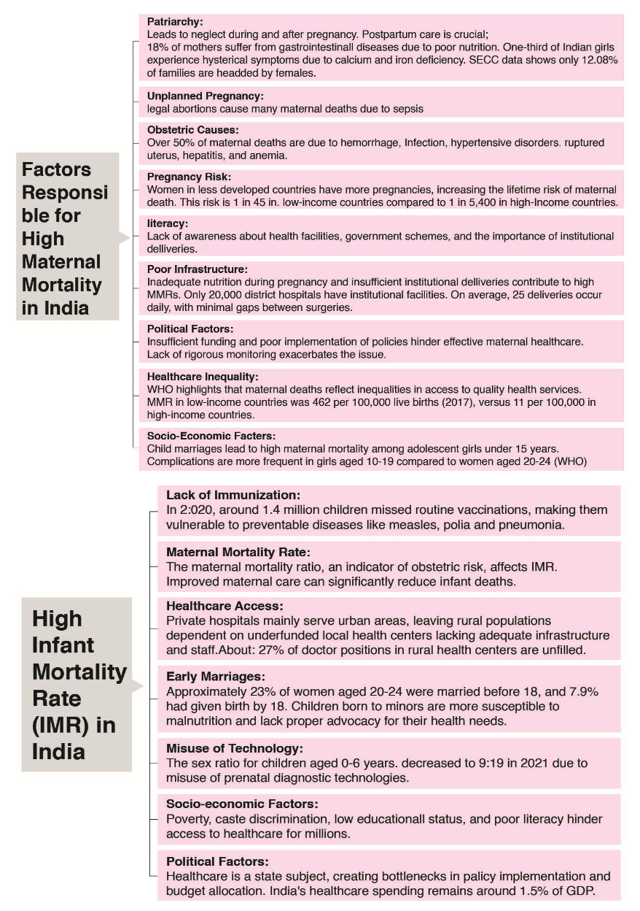
- 1.3. Important Theories of Population Change
- The Malthusian Theory:
- Proposed by Thomas Malthus, this theory argues that population, when unchecked, grows at a geometric rate (1, 2, 4, 8...), while the food supply increases at an arithmetic rate (1, 2, 3, 4...). This imbalance leads to overpopulation, which is then corrected by "positive checks" (famine, disease, war) or "preventive checks" (moral restraint, late marriage).
- The Theory of Demographic Transition:
- This is the most widely accepted theory explaining population change. It describes a sequential process of shifting from high birth and death rates to low birth and death rates as a country develops from a pre-industrial to an industrialized economic system. The theory outlines distinct stages that countries typically pass through.
- The Demographic Transition Model and India's 'Demographic Divide'
- The Demographic Transition Model (DTM) provides a powerful lens to understand India's complex population story. India as a whole is in the late third stage, but its states are spread across different stages, creating a significant 'demographic divide'.
-
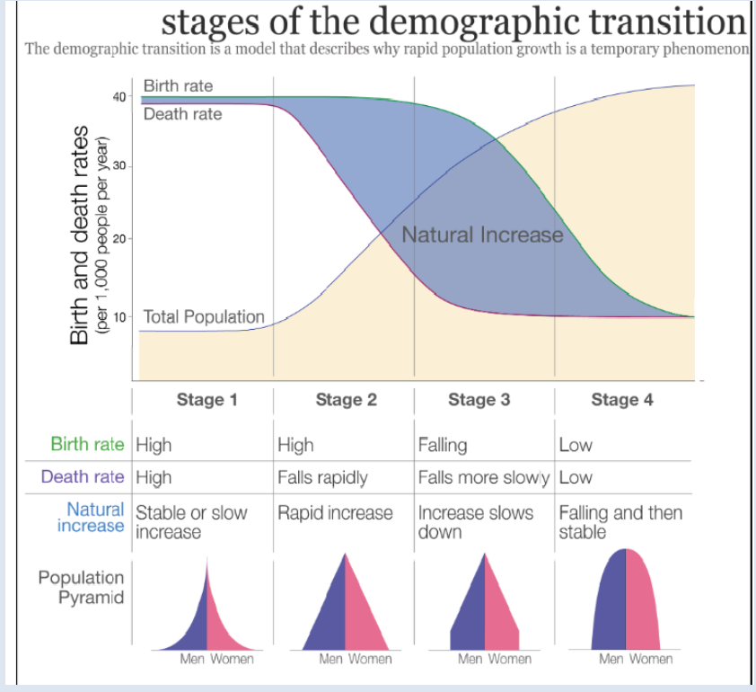
- Stage 1:
- High Stationary (High Birth Rate, High Death Rate -> Stable Population):
- No Indian state is in this stage now.
- Stage 2:
- Early Expanding (High Birth Rate, Falling Death Rate -> Population Explosion):
- This was India's situation in the mid-20th century.
- Stage 3:
- Late Expanding (Falling Birth Rate, Low Death Rate -> Growth Slows):
- This is where most of India is. However, large northern states like Bihar and Uttar Pradesh are in the early part of this stage, with relatively high TFR and a large youth population.
- Stage 4:
- Low Stationary (Low Birth Rate, Low Death Rate -> Stable Population):
- Southern states like Kerala and Tamil Nadu have already entered or are close to entering this stage, with below-replacement level TFR and an aging population.
- Stage 5:
- Declining (Birth Rate falls below Death Rate -> Population Shrinks):
- This is the stage of 'demographic winter' that some European countries and Japan are experiencing.
- This divide means India has to formulate two sets of policies simultaneously: creating jobs and providing education for the youth bulge in the North, while also building social security and geriatric healthcare systems for the aging population in the South.
- 1.4. Understanding Population Structure
- The Population Pyramid:
- This is a graphical representation of the age and sex composition of a population. Its shape provides crucial insights into a country's demographic past and future.
- Expansive Pyramid:
- A broad base and narrow top, indicating high birth rates, high death rates, and a young population (typical of Stage 2/3 of DTM).
- Constrictive Pyramid:
- A narrow base, indicating low birth rates and an aging population (typical of Stage 4/5).
- Stationary Pyramid:
- A more rectangular shape, indicating low birth and death rates and a stable population.
-
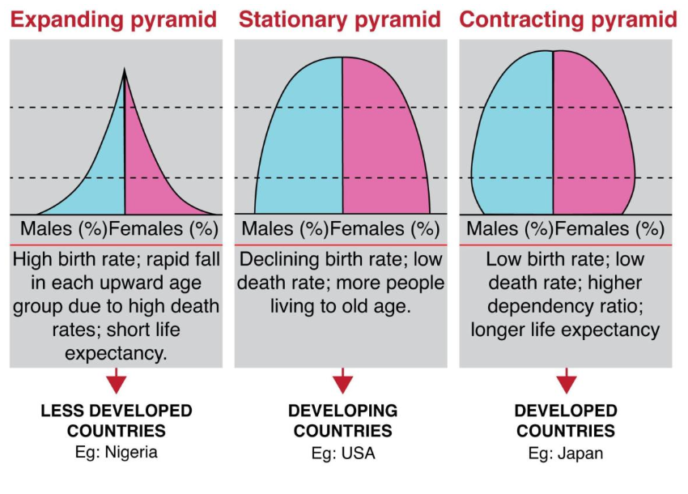
- 1.5. Factors of Population Growth in India
- India's population has grown tremendously in recent decades, understanding the underlying reasons is crucial. Here's a breakdown of the key factors:
- Social Factors:
- High Fertility Rates:
- Traditionally, large families are valued, with religious beliefs often encouraging childbirth.
- Lack of access to family planning services further contributes to higher birth rates.
- Low Literacy Rates:
- Particularly among women, lower literacy levels can correlate with a lack of awareness about family planning options and reproductive health.
- Child Marriage:
- Child marriage, despite being outlawed, is still practiced in some parts of India. This forces young girls to have children before their bodies are fully developed, often leading to more pregnancies throughout their lives.
- Decreased Death Tolls:
- India has made tremendous strides in disease prevention, sanitation, and healthcare throughout the years. Lower death rates have resulted from these advancements, particularly for children and newborns. Naturally, the population grows as more people live into adulthood
- Cultural Factors:
- Son Preference:
- In some parts of India, a strong preference for sons for social or inheritance reasons can lead to larger families until a son is born.
- Religious Beliefs:
- Certain religions may emphasize the importance of procreation, influencing family size decisions.
- Economic Factors:
- Poverty:
- In some cases, children are seen as additional laborers or future financial security, especially in rural areas.
- Lack of Social Security:
- With limited social security systems, families might rely on children for support in old age, fostering larger families.
- 2. The Demographic Dividend- India's Opportunity & Challenge
- 2.1. Understanding India's Youth Bulge
- Defining the Demographic Dividend:
-
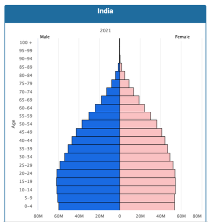
- The demographic dividend refers to the potential for accelerated economic growth that can result from a decline in a country's birth and death rates and the subsequent change in the age structure of the population.
- As fertility rates fall, the share of the young, dependent population decreases, while the share of the working-age population (15-59 years) increases. This leads to a lower dependency ratio (fewer dependents being supported by each working-person) —freeing up resources for investment and savings.
- India's Window of Opportunity:
- India has one of the youngest populations in the world, with a median age of around 28 years. Its working-age population is expected to constitute over 68% of the total population by 2030.
- According to the UNFPA, this demographic window for India is available from 2005-06 to 2055-56, longer than any other country in the world. This gives India a unique advantage in the global economy.
- The Two Dividends:
- The demographic dividend can be realized in two phases:
- The First Dividend:
- This is generated by the demographic shift itself—the immediate economic benefit of having a larger workforce and fewer dependents.
- The Second Dividend (Silver Dividend):
- This is generated when the large working-age population from the first phase begins to age and has accumulated significant savings. If these savings are chanelled into productive investments, it can spur further economic growth.
-
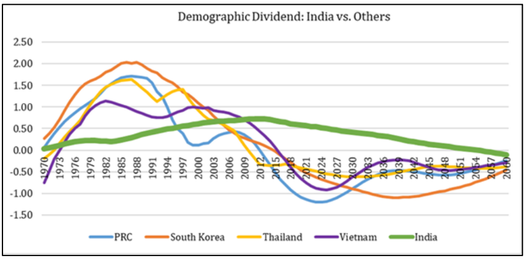
- 2.2. The Challenge- Dividend or Disaster?
- The demographic dividend is not a guarantee; it is an opportunity that can be easily squandered. If India fails to address key challenges, the dividend could transform into a demographic disaster.
- The Challenge of "Jobless Growth":
- While the economy has grown, millions of youth entering the workforce each year struggle to find quality jobs.
- This leads to high rates of unemployment and underemployment, especially among the educated youth, causing widespread social frustration and potential instability.
- The Crisis of Low Human Capital:
- The productivity and employability of the workforce depend on its human capital, which remains a major concern in India.
- Health & Nutrition:
- A workforce burdened by poor health cannot be productive. High rates of malnutrition and anemia (57% in women) mean that many young people enter the workforce with compromised physical and cognitive abilities.
- Education & Learning Outcomes:
- Despite high enrollment rates, the quality of education is poor. Reports like the ASER (Annual Status of Education Report) consistently show low learning outcomes, with many children unable to do basic reading or arithmetic.
- The Skills Gap:
- There is a significant mismatch between the skills of the available workforce and the demands of the modern economy. Reports indicate that only a small percentage of India's workforce has received formal vocational training, rendering many "unemployable."
- Student Notes:
- Case Study- The North-South Divide in India's Demographic Dividend
- India's demographic dividend is not uniform across states, creating a stark North-South divide.
- Southern States (e.g., Kerala, Tamil Nadu):
- These states have already experienced their demographic transition. Their TFR is low, and their populations are aging faster. Their demographic window is closing, and their policy challenge is now to manage an aging workforce and build a robust social security system.
- Northern States (e.g., Bihar, Uttar Pradesh):
- These states have a larger youth bulge and their demographic window will last longer. Their challenge is more fundamental: to improve basic health and education infrastructure and create jobs for their massive young populations. This requires region-specific strategies.
- The Human Capital Imperative- Realizing the Dividend
- Converting India's youth bulge into a genuine demographic dividend requires strategic, mission-mode investments in human capital. This rests on three essential pillars:
- Health & Nutrition:
- Focus:
- Tackling the twin challenges of childhood stunting and widespread anemia among adolescents and women is non-negotiable. A healthy population is the foundation of a productive workforce.
- Example:
- Schemes like Poshan Abhiyan (National Nutrition Mission) and the Mid-Day Meal Scheme are critical interventions that need effective implementation to build a physically and cognitively strong workforce from an early age.
- Transforming Education:
- Focus:
- The education system must shift from rote learning to developing critical thinking, problem-solving, and adaptive skills. The goal is to improve learning outcomes, not just enrollment rates.
- Example:
- The National Education Policy (NEP) 2020 aims to achieve this by introducing a more flexible curriculum, promoting multi-disciplinary learning, and integrating vocational education from the school level.
- Skilling and Apprenticeships:
- Focus:
- Bridging the massive skills gap between what the industry needs and what the education system produces. This requires a strong focus on vocational training, apprenticeships, and lifelong learning.
- Example:
- The National Skill Development Mission and initiatives like the Pradhan Mantri Kaushal Vikas Yojana (PMKVY) are designed to provide industry-relevant skill training to millions of youth, though their effectiveness and scale remain key challenges.
- Ultimately, realizing the dividend depends entirely on the state's capacity to transform its young population into a healthy, educated, and skilled human resource.
- 3. Population and Key Socio-Economic Issues
- 3.1. The Poverty-Population Nexus
- The relationship between poverty and population is not a simple one-way street but a complex, vicious cycle. The debate is whether a growing population causes poverty or if poverty is the main driver of population growth.
-
- Argument 1: High Population Growth as a Cause of Poverty
- Resource Strain:
- This traditional Malthusian view suggests that a larger population puts greater pressure on finite resources like land, water, and food, leading to scarcity.
- Lower Per Capita Income:
- A large population base means the benefits of economic growth are spread thinly, resulting in lower per capita income and savings.
- Pressure on State Resources:
- A large population stretches the state's capacity to provide quality education, healthcare, and sanitation to all, trapping families in a cycle of poverty.
- Argument 2- Poverty as the Main Cause of Population Growth
- This is the more widely accepted sociological and developmental perspective.
- High Infant Mortality:
- In conditions of poverty, where healthcare is poor and IMR is high, families tend to have more children as an "insurance" against the potential loss of a child.
- Children as Economic Assets:
- For poor households, especially in rural and informal economies, children are often seen as working hands who can contribute to family income, rather than as an economic liability.
- Lack of Social Security:
- In the absence of formal pension systems, children are considered the primary source of old-age security for parents.
- Lack of Women's Empowerment:
- Poverty is strongly correlated with low levels of female literacy and women's lack of agency and access to contraception. This results in higher, often unplanned, fertility rates.
- While it is a vicious cycle, the stronger causal link flows from poverty to high population growth. Therefore, the most effective long-term population stabilization strategy is not coercive control but a direct attack on poverty and deprivation, especially by empowering women.
- Case Study- The BIMARU States
- The acronym BIMARU (Bihar, Madhya Pradesh, Rajasthan, Uttar Pradesh) was coined to refer to states with poor demographic and health indicators. These states continue to have both the highest poverty rates in the country (as per NITI Aayog's Multidimensional Poverty Index) and the highest Total Fertility Rates (TFRs).
- This provides a real-world illustration of the poverty-population vicious cycle, where socio-economic backwardness and high fertility reinforce each other.
- 3.2. Human Development vs. Economic Growth
- The Paradox:
- While India has been one of the world's fastest-growing major economies for decades, its rank in the Human Development Index (HDI) remains low (134/191). This indicates that the benefits of GDP growth have not translated into a commensurate improvement in the quality of life for the average citizen.
- Reasons for the Disconnect:
- Unequal Distribution of Growth:
- Economic growth has been highly unequal. The rise of a high-skill service economy has created immense wealth for some, but this has not been accompanied by sufficient job creation for the masses, a phenomenon often called "jobless growth."
- Inadequate Public Spending:
- India's public expenditure on crucial sectors like health (around 1.2% of GDP) and education (around 2.9% of GDP) is among the lowest in the world, especially considering the needs of its vast population. This leads to poor quality of public services.
- Structural Inequalities:
- Deep-seated inequalities of caste, gender, and region prevent marginalized groups from accessing the opportunities created by economic growth.
- Eradicating Poverty by Liberating from Deprivation
- The Core Idea (Amartya Sen's Capability Approach):
- This framework argues that development should be assessed not just by income or GDP, but by the expansion of human capabilities—the real freedoms and opportunities that people have to lead lives they value.
- Poverty as Capability Deprivation:
- From this perspective, poverty is not merely a lack of income but the deprivation of basic capabilities. A person is poor if they lack the freedom from:
- Illiteracy and Lack of Education
- Poor Health and Malnutrition
- Lack of Political Voice and Social Exclusion
- Lack of Personal Security
- The statement "an essential condition to eradicate poverty is to liberate the poor from deprivation" is thus validated.
- Example 1 (Education):
- Simply giving a cash transfer to an illiterate person may provide temporary relief. But providing them with education (liberating them from the deprivation of illiteracy) gives them the capability to secure a better job, access information, and escape poverty sustainably.
- Example 2 (Health):
- Providing good public healthcare liberates the poor from the deprivation of ill health and the crippling cost of private treatment, which is a major cause of families falling back into poverty.
- This approach argues for a focus on human development (health, education, agency) as the most effective and sustainable way to eradicate poverty.
- 3.3. Population and Environmental Stress
- A large and growing population exerts immense pressure on the natural environment.
- Resource Depletion:
- A large population base intensifies the demand for natural resources, leading to:
- Land Degradation:
- Fragmentation of agricultural land holdings and conversion of forest and farm land for settlement and infrastructure.
- Water Scarcity:
- Over-extraction of groundwater for agriculture and domestic use, leading to depleting water tables in many parts of India.
- Deforestation:
- Pressure on forests for land and resources.
- Pollution:
- High population density, particularly in unplanned urban areas, leads to increased air, water, and soil pollution.
- The challenge of managing massive amounts of municipal solid waste generated by a large urban population is a major environmental crisis.
- Case Study- The Bengaluru Water Crisis (2024)
- The recent severe water crisis in Bengaluru is a stark example of the population-environment nexus. The city's explosive population growth, fueled by the IT boom, led to rapid and unplanned urbanization.
-
- Impact:
- This resulted in the widespread encroachment of the city's lakes and water bodies, which were crucial for rainwater storage and groundwater recharge.
- Consequence:
- With its natural water systems destroyed and groundwater levels depleted, the city faced an acute water shortage, forcing residents to rely on expensive water tankers. This crisis highlights the severe environmental consequences of supporting a large population without sustainable planning.
- 4. Gender, Aging, and Migration
- 4.1. The Gendered Dimension of Population
- Gender is not just a variable but a central axis that shapes and is shaped by population trends.
- The 'Missing Women' Phenomenon and Skewed Sex Ratio:
- This concept, highlighted by economist Amartya Sen, refers to the millions of women who are "missing" from the population due to a combination of neglect, inadequate healthcare, and, most significantly, sex-selective abortion.
-
- It is a direct consequence of deep-seated son preference, which is rooted in patriarchal structures where sons inherit property, carry on the family name, and are seen as old-age security.
- The Data:
- This bias is reflected in the adverse Sex Ratio at Birth (SRB), which, despite improving to 929 girls per 1,000 boys (NFHS-5), remains well below the natural norm of ~952. The historical Child Sex Ratio (0-6 years) of 919 (Census 2011) highlights the severity of this issue.
- Women's Empowerment and Population Stabilization:
- There is a direct and established correlation between women's empowerment and demographic outcomes. Empowering women is the most effective "contraceptive" and the key to sustainable population stabilization.
- Education:
- Higher female education is strongly linked to a higher age of marriage, better health awareness, greater participation in household decision-making, and lower fertility rates. An educated woman is more likely to desire a smaller family and have access to family planning methods.
- Economic Agency:
- Financially independent women often have greater control over their reproductive choices and invest more in the health and education of their children.
- Health Access:
- Empowered women have better access to and control over contraception and maternal healthcare services, leading to lower TFR and MMR.
-
- The 'Beti Bachao, Beti Padhao' (BBBP) Scheme
- Launched in 2015, the BBBP scheme is a flagship government program aimed at addressing the declining Child Sex Ratio and promoting girls' education.
- Approach:
- It uses mass media campaigns to challenge the mindset of son preference and provides targeted interventions in districts with the most skewed sex ratios.
- Impact:
- The scheme has been credited with an improvement in the Sex Ratio at Birth (SRB) in many of the targeted districts. However, critics point out that changing deep-seated patriarchal norms requires sustained, long-term societal effort beyond government campaigns.
- 4.2. The Aging of India's Population
- India is transitioning from being a young country to an aging society at a rapid pace.
-
- The Trend:
- The population of the elderly (60+ years) is currently around 10.5% (~150 million) and is projected to rise to nearly 20% of the total population by 2050. India's elderly population is growing faster than its overall population growth rate.
- Key Challenges of an Aging Society:
- Economic Insecurity:
- A very small fraction of the elderly population is covered by formal pension schemes. This leads to widespread economic dependency, especially as informal sector workers have no retirement benefits.
- Health Challenges:
- There is a need for robust geriatric healthcare to manage the rising burden of chronic and non-communicable diseases (NCDs) like hypertension, diabetes, and dementia.
- Social & Emotional Issues:
- The breakdown of the traditional joint family system and the migration of children have led to increasing social isolation, loneliness, and psychological distress among the elderly.
- Feminization of Aging:
- Women tend to live longer than men. Consequently, a large proportion of the elderly population consists of widows, who often face compounded vulnerability due to property disputes, financial dependency, and social neglect.
- Caregiver Burden:
- Elderly women often take on the primary caregiver role for grandchildren, children, and in-laws, adding to their already heavy burden. This can lead to neglect of their own health and well-being.
- Widowhood:
- A significant proportion of elderly women experience widowhood, leading to social isolation, emotional distress, and increased vulnerability to abuse and neglect.
- Property Rights:
- Despite legal provisions, many elderly women face challenges in accessing property rights, leaving them economically and socially disadvantaged.
- Neglect of Women’s Health:
- Women's health needs, particularly in old age, often receive less attention compared to men. This includes inadequate access to preventive care, chronic disease management, and geriatric care.
- 4.3. Migration Trends and Challenges
- Migration is a central feature of India's population dynamics, reflecting both distress and aspiration. The patterns of migration have transformed significantly over the last four decades.
-
- Changing Nature of Internal Migration:
-
- Rural-to-Urban Migration:
- This is a dominant trend, with major cities like Mumbai, Delhi, Bangalore, and Hyderabad experiencing a significant influx from rural areas. As per a MoSPI report, urban areas witnessed a higher migration rate (34.9%) compared to rural areas (26.5%).
- Inter-State Migration:
- States like Uttar Pradesh and Bihar continue to be major sources of migrants, while Maharashtra, Delhi, and Gujarat are key destinations. This inter-state movement is primarily fuelled by economic disparities.
- Data suggests a rise in female migration, with a rate of 47.9% compared to 10.7% for males. This might be due to factors like:
- Marriage:
- 86.8% of females migrated for marriage according to the Migration in India Report 2020-21
- Increased female labor force participation:
- as seen in states like Kerala where women often migrate for work in the healthcare sector.
- Drivers of Internal Migration:
- Economic Factors:
- Lack of rural employment due to factors like unpredictable weather and low investment in agriculture, alongside better urban job opportunities, drives migration. PLFS 2020-21 reported 10.8% of migration was employment-driven. NSSO 78th round: 57.8% of migrants reported increased income; 46.5% in rural areas, 67.7% in urban areas.
- Social Factors:
- Marriage (47.9% migration rate for women) and family reunification are key drivers. Social networks of earlier migrants also act as pull factors.
- Environmental Factors:
- Natural disasters, climate change, and development projects displacing communities push people to migrate for safety and new opportunities.
- Impacts of Internal Migration:
- Socio-Cultural:
- Family Disruption:
- Emotional strain, especially on children adapting to new schools and social environments.
- Social Integration:
- Migrants may face isolation due to cultural and language barriers, but integration initiatives like language classes can help.
- Cultural Exchange:
- Promotes diversity, though it may cause tensions or strain resources.
- Societal Structure:
- Changing Social Composition:
- Migration brings diversity, but can lead to social stratification.
- Demographic Shifts:
- Urban areas experience population booms, while rural areas may face population decline.
- Economic Impacts:
- Remittances and Investment:
- Migrants’ remittances boost local economies, improving education and healthcare, reducing poverty.
- Strain on Resources:
- Destination cities face housing, sanitation, and transport pressures, affecting infrastructure.
- Growth and Development:
- Migration supports urbanization and fills labor gaps, driving economic growth.
- Challenges Faced by Internal Migrants:
- Precarious Labor:
- Many migrants face low wages and job insecurity. 60% of India's migrant workforce is "occupationally vulnerable."
- Limited Social Security:
- Most states lack mechanisms to support migrants, hindering access to healthcare, education, and welfare. 70% of migrant children lack education facilities.
- Inadequate Housing:
- Migrants often live in poor urban slums; 60% of slum dwellers are migrants.
- Disenfranchisement:
- Migrants face voting registration issues. 25% are registered to vote in new locations.
- Case Study- The "Surat Story" - A Hub for Internal Migration
- Surat in Gujarat is a prime example of a city whose economy is built on the back of millions of internal migrants.
- The Pull:
- Its thriving textile and diamond industries have historically attracted a massive workforce from states like Uttar Pradesh, Bihar, Odisha, and Maharashtra.
- The Reality:
- This continuous flow of migration has fueled the city's economic engine. However, it has also led to immense challenges in providing affordable housing, water, sanitation, and healthcare for this large migrant population, which often lives in precarious, overcrowded informal settlements. The city's resilience is frequently tested by public health challenges linked to its high population density.
- Internal Displacement- Uprooted Within
- Internal displacement refers to the forced movement of people within their own country due to conflict, violence, or natural disasters.
- The Global Report on Internal Displacement (GRID) 2024 an estimated 75.9 million people were internally displaced worldwide, reflecting a significant rise from 71.1 million in 2022.
- India's Internal Displacement Landscape
- While South Asia, including India, reported its lowest internal displacement figure (3.7 million as per the GRID report) since 2018, the issue remains a pressing concern. This reduction can be attributed to below-average monsoon rainfall and a weaker cyclone season due to El Nino's influence. However, it's crucial to recognize the complexities within this data.
- Forced From Home:
- Despite the decrease in disaster-related displacements, India witnessed a concerning rise in internal displacement due to conflict within its borders.
- The report highlights Manipur as a particular area of concern. In 2023 alone, an estimated 67,000 people were displaced by the conflict in this region, marking the highest number since 2018. These displaced individuals remain uprooted within India, struggling to rebuild their lives and facing immense hardship.
- Climate Refugees:
- India's vast coastline makes it particularly vulnerable to cyclones and rising sea levels, while extreme weather events like floods and droughts can disrupt livelihoods and force people from their homes.
- The Road Ahead- Addressing Internal Displacement
- Addressing internal displacement requires a multi-pronged approach:
- Conflict Resolution:
- Peaceful solutions to ongoing conflicts are crucial to prevent further displacement and enable the safe return of displaced populations.
- Disaster Risk Reduction:
- Investing in early warning systems, disaster preparedness measures, and climate-resilient infrastructure can help minimize displacement caused by natural disasters.
- Support for the Displaced:
- Providing humanitarian assistance to meet the immediate needs of displaced populations, along with long-term solutions like livelihood opportunities and access to education, is essential for their reintegration and rebuilding their lives.
- Changing Nature of International Migration:
-
- Top Destinations:
- The Gulf Cooperation Council (GCC):
- Countries like the United Arab Emirates (UAE) remain popular destinations for Indian workers (3.4 million in 2020), particularly in construction, hospitality, and domestic work.
- Western Countries:
- The US (2.7 million in 2020), Canada, Australia, and the UK continue to attract a steady flow of skilled professionals, mainly in IT, healthcare, and education sectors.
- Drivers of International Migration
- Economic Opportunities:
- Higher wages, better living standards, and broader career prospects are major pull factors for international migration.
- Education and Skill Development:
- Opportunities for higher education and specialized training abroad also drive international migration.
- Government Policies:
- Bilateral agreements and policies facilitating migration for work and education can play a supportive role in international migration. Countries like Germany and Canada have introduced programs to attract skilled Indian professionals, offering streamlined work visas and permanent residency pathways.
- Impacts of International Migration
- Social Impact
- Empowerment of Women Through Financial Independence:
- In some cases, migration can empower women left behind. Remittances can provide them with financial independence, allowing them to make decisions about their lives and their children's education.
- Exposure to New Ideas:
- Migrants themselves are exposed to new cultures, ideas, and ways of life. This can broaden their horizons and lead to positive changes in their perspectives and skills upon returning home.
- Economic Impact
- Remittances from Overseas Indians:
- Money sent back home by Indian expatriates working abroad is a major source of income for many families. In 2020 alone, these remittances amounted to a staggering $83.15 billion.
- Supports Investment and Promotes Economic Growth:
- Skilled and educated Indian migrants often invest their savings back into India. This influx of investment creates jobs, stimulates economic activity, and contributes to the overall growth of the Indian economy.
- Fuels Domestic Consumption:
- Migrant workers send money back home, it increases disposable income within Indian households. This fuels domestic consumption, boosting local businesses and industries.
- Brain Drain vs. Brain Gain
- Emigration of skilled professionals creates a gap in the domestic workforce: This can hinder certain industries or sectors that rely heavily on specialized skills. Imagine a large number of doctors leaving, creating a shortage in healthcare.
- Knowledge transfer and innovation:
- When skilled migrants work abroad. They gain exposure to new technologies, methods, and ideas, which they can potentially bring back to India upon their return. This can lead to a boost in domestic innovation and productivity.
- Returning migrants often bring back valuable skills and experience, giving the Indian economy a significant edge. They can fill existing skill gaps, mentor younger generations, and even establish new businesses, all contributing to economic growth.
- Challenges faced by International Migrants
- Wage Exploitation and Unfair Labor Practices:
- Migrants in low-skilled sectors, face exploitation by recruitment agencies and employers. A 2023 report by Human Rights Watch documented cases of wage theft, passport confiscation, and hazardous working conditions faced by Indian migrant workers in the Gulf countries.
- In 2022, Indian construction workers in Qatar protested against unpaid wages and poor working conditions, tied to the 2022 FIFA World Cup infrastructure.
- Social and Cultural Integration:
- Adapting to a new culture, language, and social environment can leads to feelings of isolation and loneliness and health concerns.
- Separation from Families:
- Leaving behind family and loved ones is an emotional struggle for many migrants. Technological advancements like video calls and messaging apps can help bridge the physical distance, but the emotional strain of separation remains a significant challenge.
- Challenges on Return:
- Returning migrants, especially those who spent a significant time abroad, may face difficulties re-integrating into the Indian job market. Their skills and qualifications might not be readily recognized, leading to unemployment and underemployment.
- Since migration has cross-cutting sectoral impacts, multiple and complementary interventions by different ministries and departments are needed, to facilitate migration and ensure integration of migrants into the economic, social, political and cultural life of the country.
- Interventions undertaken by the government for migrants:
- Portability of welfare schemes
- One Nation One Ration Card:
- Enables nationwide portability of ration cards through biometrically authenticated ePoS transactions.
- Pradhan Mantri Ujjwala Yojana 2.0:
- Allows migrants to obtain LPG connections through a simple self-declaration, without needing a ration card or address proof.
- Ayushman Bharat Scheme:
- Provides nationwide cashless healthcare treatment at any empanelled public or private hospital.
- Other initiatives
- Project Changathi:
- A Kerala government literacy programme for migrant children to learn Malayalam.
- Pradhan Mantri Garib Kalyan Rojgar Abhiyaan (PM GKRA):
- Employment and livelihood scheme for migrant workers returning to villages after COVID-19, involving skill mapping and linking women with self-help groups.
- State-Level Initiative
- Karnataka’s Inter-State Migrant Workers Act, 2008:
- Regulates working conditions, wages, and grievance redressal for migrant workers, ensuring fair treatment and empowering them to fight exploitation.
- 4.4. Social Capital
- Social capital refers to the benefits people gain from their networks of relationships. It's essentially the value of those connections. Here's a breakdown of the concept and its significance:
- What it is:
- Networks and Relationships:
- Social capital is built on the connections we have with others, including family, friends, colleagues, neighbors, and even online communities.
- Trust and Reciprocity:
- These connections are strengthened by trust and reciprocity, meaning we can rely on each other and exchange favors or support.
- Shared Values and Norms:
- Strong social capital often involves shared values and norms that guide behavior within the network.
- Why it's important:
- Individual Benefits:
- Strong social capital provides individuals with access to resources, information, and opportunities. It can lead to better jobs, educational attainment, and even improved health outcomes.
- Collective Benefits:
- Strong social capital benefits society as a whole. It fosters cooperation, reduces crime rates, and strengthens social institutions. It can also lead to more effective problem-solving and innovation.
- Economic Growth:
- Social capital is seen as a key factor in economic development. It facilitates trust-based transactions, reduces information asymmetry, and encourages entrepreneurship
- Social capital can facilitate knowledge sharing and access to opportunities, especially for disadvantaged groups. This can help young people from lower socio-economic backgrounds acquire the skills and education needed to contribute effectively to the workforce.
- Challenges to the Social capital development in India:
- Decay:
- Traditional social structures like extended families and close-knit neighbourhoods are weakening. People become more mobile, and social interactions can become more fleeting. Loss of trust, weakened support systems, and decreased sense of belonging can result.
- Lack of Equity:
- Unequal distribution of social capital. Marginalized groups might lack access to powerful networks or resources that benefit more privileged groups. Perpetuates social inequalities and limits opportunities for those who need them most.
- Separatism:
- Social divisions based on factors like religion, ethnicity, or ideology can create strong "in-groups" that exclude others. This hinders collaboration and trust across communities
- Example:
- Strong political polarization can lead to social divisions, where people only interact with those who share their views, limiting exposure to diverse perspectives.
- Here are some ways to improve and develop India's social capital:
- Strengthening Social Networks and Trust:
- Community-based initiatives:
- Encourage and support resident welfare associations, self-help groups, and local social clubs. These can foster connections and build a sense of belonging.
- Civic engagement projects:
- Promote volunteerism and community service opportunities. Working together on local issues can build trust and collaboration.
- Interfaith and intercultural dialogues:
- Encourage understanding and respect between different religious and cultural groups. This can break down social barriers and build bridges.
- Investing in Social Institutions:
- Strengthening local governance:
- Empower local government bodies to be more responsive to citizen needs. This can increase trust in institutions and encourage participation.
- Media literacy education:
- Equip citizens with the skills to critically evaluate information and engage in constructive dialogue. This can combat misinformation and promote a more informed society.
- Promoting Social Mobility and Inclusion:
- Education for all:
- Invest in quality education, particularly for girls and marginalized communities. Education empowers individuals and fosters social mobility.
- Diversity and inclusion initiatives:
- Encourage workplaces and public institutions to be inclusive of different backgrounds and perspectives. This can create a more cohesive society.
- Bridging the digital divide:
- Ensure equitable access to technology and the internet. This can connect people and empower them to participate in the digital economy.
- Overall, strong social capital can act as a multiplier for India's demographic dividend. By fostering trust, cooperation, and opportunity, it can empower young people, create a more enabling environment for businesses, and ultimately lead to more inclusive and sustainable economic growth.
- 5. Population Policies in India
- India, now as the most populous country in the world, has implemented several population policies aimed at controlling the growth rate and improving the quality of life of its citizens. These policies have evolved over time, reflecting changing socio-economic conditions and priorities.
- 5.1. National Population Policy 2000
- The National Population Policy (NPP) 2000 was a significant milestone in India's efforts to stabilize its population.
-
- Immediate objectives
- Address unmet needs for contraception, healthcare infrastructure, and healthcare personnel.
- Provide integrated service delivery for basic reproductive and child healthcare.
- Medium-Term Objectives:
- Reduce the Total Fertility Rate (TFR) to replacement level (around 2.1 children per woman) by 2010. This was intended to achieve population stabilization in the long run.
- Above objectives will be achieve by working together across different government departments and agencies
- Long-Term Objectives:
- Achieve a stable population by 2045, at a level consistent with sustainable economic growth, social development, and environmental protection.
- Key Policy Features:
- Voluntary and informed choice:
- The policy emphasized the importance of voluntary family planning and ensuring informed consent for services like sterilization.
- Focus on women's empowerment:
- Education and improved access to healthcare for women were seen as crucial factors in reducing fertility rates.
- Improved service delivery:
- Upgrading infrastructure, increasing healthcare personnel, and expanding access to family planning services across rural and urban areas were prioritized.
- Integration with other sectors:
- The policy advocated collaboration with departments like education and social welfare to address underlying factors like poverty and gender inequality that contribute to population growth.
- The NPP shifted the focus from solely reducing birth rates to a more holistic approach that emphasized women's empowerment, improved healthcare, and responsible parenthood.
- Revamping India's Population Policy- Need for a new population policy
-
- India's existing population policy, the NPP 2000, needs an update. While it aimed for family planning and lower maternal mortality, demographic realities have shifted.
- A Looming Demographic Shift:
- India's young population presents a limited opportunity for growth (peaking by 2041). However, a growing population strains resources. Fertility decline, meanwhile, leads to a rapidly aging population (12% by 2025).
- A revised policy should address these changes by:
- Investing in Youth:
- Skilling and employing the youth to maximize the demographic dividend.
- Supporting the Elderly:
- Creating social and economic support systems for the growing elderly population, with a focus on women due to their longer lifespans.
- Focus on BIMARU States:
- Allocating more resources for education, skilling, and job creation in states with higher fertility rates (Bihar, Madhya Pradesh, Rajasthan, and Uttar Pradesh).
- The focus should shift from mere population control to:
- Sustainable Development:
- Encouraging smaller families through economic growth and development.
- Education and Skills:
- Equipping the workforce for the evolving job market impacted by automation.
- Two Child norms for population control
- Several states, including Assam, Maharashtra, Madhya Pradesh, and Rajasthan, have introduced a two-child norm prohibiting individuals with more than two children from obtaining government jobs.
- The rationale behind this policy is to control rapid population growth by limiting fertility rates. By denying social and economic benefits, the policy aims to encourage prospective parents to limit their number of children.
-
- China's One-Child Policy- A Cautionary Tale.
- Implemented from 1979 to 2015, it aimed to curb rapid population growth. While initially lauded for its success in slowing population growth, the policy also had several unintended and detrimental impacts:
- Demographic Imbalance:
- Created a significant gender imbalance, with millions more men than women, affecting marriage and social stability. It led to a rapidly aging population, straining social security and healthcare systems due to fewer working-age adults supporting the elderly
- Socioeconomic Issues:
- Labor shortages, caused by a shrinking workforce, hinder economic growth.
- "Little Emperor" syndrome, resulting from single-child families, leads to indulgence, fostering selfishness and entitlement among some younger generations.
- Ethical Concerns:
- The policy of forced sterilization and abortions, implemented with varying strictness, raised ethical concerns and potentially had severe psychological impacts on parents desiring larger families, highlighting significant human rights and emotional issues.
- 5.2. Way Forward for Population Control
- Focus on Demographic Dividend:
- India is at a pivotal juncture where its demographic advantage can drive economic growth. Policymakers should focus on harnessing this demographic dividend to fuel economic progress rather than viewing it as a challenge.
- Focusing on Women:
- Women's education significantly impacts fertility rates and the age at which they have their first child. Therefore, investing in women's education is vital for India's overall development
- Empowering Informed Decisions:
- Policies should prioritize empowering both men and women to make informed decisions regarding their fertility, health, and well-being.
- For example, comprehensive sex education in schools can provide young people with the knowledge they need to make responsible choices about their sexual and reproductive health.
- Additionally, access to healthcare services and family planning resources should be expanded to support individuals in making educated decisions.
- Caring for an Ageing Population:
- Developing institutional and state capacity is essential to care for an ageing population, alongside creating an improved system for protecting the elderly.
- For example, establishing more senior care centers and providing training for geriatric care professionals can ensure that the ageing population receives adequate support.
- Additionally, implementing social security schemes and pension plans can provide financial stability and security for the elderly, enhancing their quality of life.
- Student Notes:
- Apart from achieving the basic demographic goals, future policies must also address following factors:
- Address Skewed Sex Ratios:
- A future population policy must tackle the skewed female and child sex ratios, particularly spreading from urban to rural areas, by combating discriminatory practices like the lack of women’s ownership rights over land and property, which perpetuate son preference.
- Regulate Migration:
- The policy should address the challenges of interstate and intrastate migration highlighted by Census 2011, such as unplanned migration to cities, which strains infrastructure and creates social tensions. Planned migration policies can prevent the formation of slums and unplanned habitations.
- Promote Education and Skill Development:
- Resources must be balanced between addressing the needs of the aging population and investing in education and skill development to ensure a productive workforce for the future.
- Long-term Planning:
- A comprehensive population policy that anticipates future challenges and demographic shifts will protect future generations from catastrophic outcomes by ensuring sustainable development and social stability.
- Despite historic challenges due to male child preference and rural ignorance, India's family planning efforts have reduced the growth rate from 2.20% in 1971 to 1.64% in 2011. The NFHS-V indicates a fertility rate drop to 2.0, showing potential for further population control.
- CHAPTER 4- POVERTY AND ITS IMPLICATIONS
- Key Data & Facts at a Glance
| Category | Metric | Value | Source |
|---|
| Multidimensional Poverty (NITI Aayog, 2023 Report) | Poverty Rate | Declined from 29.17% in 2013-14 to 11.28% in 2022-23 | NITI Aayog, 2023 |
| People Escaping Poverty | 24.82 crore people moved out of multidimensional poverty in the last nine years | NITI Aayog, 2023 |
| Rural vs. Urban | Rural poverty declined from 32.59% to 19.28%; Urban poverty from 8.65% to 5.27% | NITI Aayog, 2023 |
| State-wise Disparity | Bihar, Jharkhand, and Meghalaya remain the poorest states; Kerala has the lowest poverty rate | NITI Aayog, 2023 |
| Income and Wealth Inequality | Top vs. Bottom | Top 10% hold 57% of national income; bottom 50% share down to 13% | World Inequality Report 2022 |
| Wealth Concentration | Richest 1% own more than 40% of total wealth | Oxfam Report, 2023 |
| Deprivation Indicators (NFHS-5, 2019-21) | Nutrition | 35.5% of children under 5 are stunted | NFHS-5, 2019-21 |
| Anemia | 57% of women and 67% of children are anemic | NFHS-5, 2019-21 |
| Access to Basic Amenities | Improved sanitation (70%) and clean cooking fuel (76%) increased, but gaps remain | NFHS-5, 2019-21 |
| Poverty among Social Groups | Caste & Tribe | Multidimensional poverty ratio: STs (50.6%), SCs (33.3%), OBCs (27.2%), Others (15.6%) | - |
| Global Context |
| Extreme Poverty | 12.9% live on less than $2.15 per day | World Bank, 2021 |
- Glossary of Essential Concepts
- Poverty vs. Deprivation:
- A crucial distinction. Poverty is often measured by income or consumption levels (e.g., the poverty line). Deprivation is a broader, multidimensional concept referring to the lack of essential capabilities and freedoms, such as the freedom from illiteracy, poor health, and social exclusion.
- Absolute vs. Relative Poverty:
- Absolute Poverty:
- A condition where household income is below a level needed to maintain basic living standards (food, shelter, housing). This is what the poverty line attempts to measure.
- Relative Poverty:
- A condition where people lack the minimum amount of income needed to maintain the average standard of living in the society in which they live. It is a measure of inequality.
- Poverty Line:
- A monetary threshold below which an individual is considered to be poor. It is calculated based on the expenditure required to purchase a "poverty line basket" of essential goods and services.
- Multidimensional Poverty Index (MPI):
- A measure that captures acute poverty by assessing deprivations across three key dimensions: Health (nutrition, child mortality), Education (years of schooling, school attendance), and Living Standards (assets, housing, sanitation, etc.). It provides a more holistic view than income-based measures.
- Student Notes:
- Vicious Circle of Poverty:
- The theory that a country or individual is poor because they are poor. It posits a circular constellation of forces where low income leads to low savings, which leads to low investment, leading to low productivity, and thus back to low income.
- Social Exclusion:
- The process through which individuals or groups are systematically blocked from (or denied full access to) various rights, opportunities, and resources that are normally available to members of a different group, and which are fundamental to social integration.
- Intergenerational Poverty:
- The phenomenon of poverty being transmitted from one generation to the next, creating a self-perpetuating cycle.
- Feminization of Poverty:
- The trend that women represent a disproportionate percentage of the world's poor. This is linked to the gender pay gap, limited access to resources, and the burden of unpaid care work.
- Poverty Trap:
- A self-reinforcing mechanism that causes poverty to persist. Any small amount of extra income is likely to be spent on immediate consumption rather than being saved or invested, thus trapping the individual in poverty.
- 1. What is Poverty?
- The approach to defining poverty has usually been in economic term – the levels of income, property and living standards. People are said to be poor when their income is such that it does not enable them to meet the basic needs such as food, shelter, and clothing.
- Beyond Income- A Multidimensional View
- Modern perspectives recognize poverty as a complex phenomenon with sociological, political, psychological, and geographical dimensions. This broader perspective acknowledges that income is just one piece of the puzzle. Poverty can also be understood as the inability to develop one's full potential due to limited access to education, healthcare, and social networks.
- Measuring Poverty- Different Approaches
- Absolute Poverty:
- This approach defines a minimum income level (poverty line) necessary to meet basic necessities. Individuals or households falling below this line are considered absolutely poor. Here, factors like calorie intake, housing quality, and access to healthcare are used as indicators.
- Relative Poverty:
- This approach considers poverty relative to the prevailing living standards within a society. Poverty lines are not fixed but shift based on societal norms and expectations. For example, someone considered poor in the United States with its higher standards of living might not be classified as such in India.
- 2. Poverty Line
- The poverty line is a critical threshold that determines the minimum level of income, consumption, or access to goods and services required for individuals to be considered non-poor.
- This concept involves calculating the total expenditure needed for an adequate diet, clothing, and shelter.
- In India, it focuses on the cost of food to meet minimum calorie requirements.
- Globally, the World Bank sets an International Poverty Line (IPL), updated to $1.90 per day in 2015.
- Next, we delve into the evolution of poverty line estimation in India, detailing the methodologies and expert groups involved post-independence.
- 2.1. Evolution of Poverty Estimation in India
- The methodology for estimating poverty in India has undergone significant changes over the years.
- Lakdawala Expert Group (1993):
- This group addressed regional variations by recommending state-specific poverty lines based on different Consumer Price Indices (CPI) for industrial and agricultural workers.
- Tendulkar Expert Group (2009):
- This group aimed to modernize the methodology by:
- Shifting from calorie-based norms to focus on broader nutritional outcomes.
- Implementing a uniform all-India poverty line.
- Including private spending on health and education.
- Rangarajan Committee (2014):
- This committee proposed further revisions, suggesting separate rural and urban poverty line baskets with specific food and non-food items.
- NITI Aayog Task Force (2015):
- This group acknowledged ongoing debates and recommended:
- Tracking the progress of the bottom 30% of the population, not just those below the poverty line.
- Monitoring specific material poverty components like nutrition, housing, and connectivity.
- Challenges in Establishing a Poverty Line:
- Cost of Basic Needs:
- Determining the exact cost of a basket of basic goods and services (food, clothing, shelter) that defines the poverty line is a complex task. Factors like regional variations, inflation, and changing consumption patterns make it a moving target.
- Calorie Intake vs. Nutritional Outcomes:
- Previous poverty lines in India might have focused primarily on minimum calorie intake. However, modern approaches consider broader nutritional needs to ensure a healthy standard of living.
- These developments reflect India's on-going effort to refine its poverty measurement strategy.
- 2.2. Beyond Income- The Multidimensional Poverty Index (MPI)
- The global Multidimensional Poverty Index (MPI) is an international metric that evaluates acute multidimensional poverty in over 110 developing countries.
-
- India related findings
- India is one of the 25 nations that halved its multidimensional poverty within 15 years.
- 415 million poor people moved out of poverty from 2005/2006 to 2019/2021.
- Incidence of poverty fell from 55.1% to 16.4%.
- Deprivation in all indicators declined.
- Niti Aayog devised a National MPI modelled on the Global MPI. It retains the 10 original indicators of the global MPI model and has added two indicators, viz., Maternal Health and Bank Account, in line with India’s national priorities. It allows for the following:
- Enables targeted, inclusive poverty interventions.
- Identifies overlapping deprivations affecting quality of life.
- Aids in inclusive policy formulation.
- The Multidimensional Poverty Index (MPI) by NITI Aayog suggests that 14.96% of India’s population suffers from multidimensional poverty. This data comes from the most recent NITI Aayog report using the MPI, released in 2023.
-
- Issues and the Way Forward
- Despite its advantages, the NMPI faces some challenges:
- Sensitivity:
- The requirement to be deprived in at least one-third of indicators makes the NMPI less sensitive to minor deprivations.
- COVID-19 Impact:
- Critics argue that the NMPI might not fully capture the impact of COVID-19 on livelihoods and healthcare access.
- Stagnant Wages:
- Concerns exist regarding the consistency of declining poverty rates with stagnant real wages.
- Moving Forward:
- Include New Dimensions:
- Expanding the MPI to consider learning outcomes, social discrimination, and environmental factors.
- New Measurement:
- Incorporating data from the latest National Sample Survey (NSS) round and National Family Health Survey (NFHS) into the MPI calculations.
- Effective Monitoring:
- Monitoring progress across indicators on a real-time basis for a more accurate picture.
- Additionally, social audits of poverty alleviation programs and awareness generation about development initiatives remain crucial in tackling multidimensional poverty in India.
- 2.3. Identifying the Poor- Socio-Economic Caste Census (SECC)
- State governments play a key role in identifying poor households through Below Poverty Line (BPL) censuses. Notably, the latest comprehensive data comes from the Socio-Economic Caste Census (SECC) conducted in 2011. The significance of SECC lies in:
- Identification of Poor Households:
- SECC data is crucial for effective targeting of beneficiaries under various poverty alleviation programs.
- Multidimensional Approach:
- SECC goes beyond income, considering factors like housing, education, and basic amenities to identify the
- 3. Causes of Poverty
- 3.1. Nexus Between Inequality and Poverty
- Inequality and poverty are intricately linked, reinforcing each other in a vicious cycle.
- Unequal Distribution of Resources:
- A significant wealth gap exists in India. The richest 1% own over a quarter of the national wealth, while a large portion of the population struggles to meet basic needs. This skewed distribution restricts opportunities for the poor to climb the economic ladder
- Limited Social Safety Nets:
- A 2021 World Bank report states that only 25% of India’s population benefits from some form of social security. This lack of support leaves them exposed to economic shocks and hinders their ability to escape poverty.
- Manifestation and intersection of these inequalities:
- Ruralization of Poverty:
- Causes:
- Limited access to quality education, healthcare, and infrastructure restricts income generation opportunities in rural areas. Dependence on agriculture makes livelihoods vulnerable to factors like weather and volatile market prices. Land ownership skewed towards men further disadvantages women.
- Impact:
- Rural poverty disproportionately affects marginalized communities like tribals and lower castes who are often concentrated in rural areas. Limited resources and opportunities hinder their social mobility and perpetuate the cycle of poverty.
- Regional Variations:
- Poverty levels vary significantly across Indian states. According to the Tendulkar Committee Report (2011), states like Bihar, Jharkhand, and Chhattisgarh have higher poverty rates, while Kerala and Goa have lower rates.
- Causes:
- Historical disadvantages, lack of investment in infrastructure and development in certain regions, and geographical constraints like recurring droughts or floods contribute to regional disparities.
- Impact:
- Regional variations create an uneven playing field for people’s economic prospects. It necessitates targeted policies and resource allocation to bridge the development gap between states.
- Caste and Religion Intersection:
- The National Socioeconomic Survey (2011) shows significantly higher poverty rates among Scheduled Castes (SCs) and Scheduled Tribes (STs) compared to upper castes. Similarly, religious minorities may face social and economic discrimination.
- Causes:
- The caste system historically relegated SCs and STs to menial jobs with low wages. Societal prejudice and limited access to education and resources perpetuate their socio-economic marginalization. Religious minorities may face discrimination in employment and land ownership.
- Feminization of Poverty:
- The ‘feminization of poverty’ refers to the increasing proportion of women among the poor. Systemic gender inequalities limit women’s access to resources, opportunities, and rights, making them more vulnerable to economic hardship.
- Key Indicators:
- Wage Gap:
- Women earn approximately Rs 40 for every Rs 100 earned by men.
- Labour Force Participation:
- Only 41.7 % of women are part of the labor force.
- GDP Contribution:
- Women contribute just 17% to the GDP.
- Unpaid Care Work:
- Women spend significantly more time on unpaid care work compared to men.
- Education Disparities:
- Girls often face limited access to education, perpetuating the cycle of poverty.
- Impact on Women:
- The feminization of poverty significantly impacts women in various ways, including economic vulnerability, educational disadvantages, limited time for paid employment, and increased health and safety risks. Social norms and violence further hinder their advancement.
- 3.2. Vicious Circle Theory
- This theory argues that the poor are trapped in circumstances which make it difficult for them to escape poverty.
- Low Levels of Education:
- Poverty often leads to limited access to quality education. Children from poor families may be forced to work or attend under-resourced schools with a student-teacher ratio of 60:1 (Source: UNESCO Institute for Statistics data, 2021), hindering their ability to acquire skills needed for better jobs.
- Poor Health and Malnutrition:
- A 2019 study by the Centre for Chronic Poverty Studies found that chronic malnutrition among children in tribal communities of Madhya Pradesh is linked to low school enrollment and limited future opportunities, highlighting the intergenerational impact of poverty and malnutrition.
- High Fertility Rates:
- A 2021 report by the Population Reference Bureau indicated that India’s Total Fertility Rate (TFR) is 2.0, but remains higher in some states with higher poverty levels. This can make it challenging for families to invest in each child’s education and well-being, potentially leading to the continuation of poverty across generations.
- 3.3. Geographical Factors
- Poverty is explained at times by the geographical conditions in which people live. The resources are scarce and people are unable to overcome the problems of lack of resources. The desert areas, the hill areas are good examples.
- Regional Disparity:
- Poverty is not evenly distributed across India. According to the 2011 Socio-Economic Caste Census (SECC) data, Bihar has a poverty rate of 51.9%, while Goa has a rate of 5.1%.
- Natural Disasters:
- India is vulnerable to natural disasters like floods, droughts, and cyclones. A 2020 World Bank report estimates that natural disasters push an additional 2.4 million people into poverty in India each year.
- A 2022 study by the International Food Policy Research Institute (IFPRI) suggests that climate change could push an additional 36 million Indians into poverty by 2030.
- 4. Consequences of Poverty
- Poverty is a complex issue that extends far beyond the lack of material resources. It has a profound impact on individuals, families, and society as a whole, creating a vicious cycle that can be difficult to escape. Here’s a closer look at some of its key social consequences:
- Culture of Poverty:
- The concept of a “culture of poverty” argues that poverty can become ingrained in communities across generations. Factors like limited access to education, unemployment, and inadequate housing can lead to feelings of hopelessness and a sense of powerlessness. This, in turn, can discourage individuals from taking initiatives to improve their circumstances, perpetuating the cycle.
- Effects on Health:
- Poverty has a direct and undeniable impact on health. Poor living conditions, malnutrition, and lack of access to quality healthcare contribute to higher infant mortality rates, increased vulnerability to diseases, and a higher prevalence of mental health issues.
- A 2020 World Health Organization report found that people in the lowest income quintile live an average of 18 fewer years than those in the highest.
- Stolen Childhoods- Limited Education, Child Labor, and Early Marriage
- Children are especially vulnerable to the consequences of poverty. A 2021 UNICEF report estimates that 606 million children globally live in extreme poverty. This translates to a web of challenges:
- Limited Education:
- Poor infrastructure, unemployment, and lack of basic services lead to inadequate schooling, hindering children’s academic achievement and future job prospects.
- Child Labor:
- The harsh realities of poverty force many children to work, sacrificing education and childhood for the family’s survival.
- Early Marriage:
- For girls, poverty can be a driver of child marriage, limiting their autonomy, hindering education, and posing health risks. Studies indicate that poor girls are 2.5 times more likely to marry young compared to wealthier backgrounds.
- Social Exclusion and Stigma:
-
- Living in poverty can lead to social exclusion. Individuals and families may be ostracized or face prejudice, limiting their participation in community activities. This isolation can exacerbate feelings of marginalization and make it harder for them to build social support networks.
- Student Notes:
- Psychological Effects:
- The constant struggle to meet basic needs can take a toll on mental health. Individuals living in poverty may experience low self-esteem, feelings of hopelessness, and increased stress and anxiety.
- Urban and Rural Poverty - A contrast
| Urban Poverty | Rural Poverty |
|---|
| Causes |
• Migration from rural to urban areas.
• Exclusionary urbanization: Disregard for informal settlements.
• Inadequate services: Lack of basic services.
• Regional disparity: Overpopulation in megacities due to underdeveloped smaller cities.
• Financial insecurity: High informal employment and underemployment.
• Inaccessibility to social security: Lack of proof of residency excludes many from welfare programs.
|
• Land fragmentation: Decreases productivity.
• Lack of diversification: Over-reliance on agriculture.
• Monsoon dependency: High variability in incomes.
• Debt cycle: High-interest informal credit sources.
• Inadequate access to services: Lack of healthcare, education, and social protection.
|
| Way Forward |
• Decentralize decision-making, community-driven initiatives.
• Regional development: Incentivize development in smaller cities.
• Sustainable livelihoods: Promote labor-intensive industries.
• Portability of social security: Expand access to social security nets and financial services.
• Investing in people and skills: Vocational training and skill development.
|
• Increasing productivity and market access: Modern farming techniques, better irrigation.
• Efficient value chains: Develop value chains to reduce losses.
• Job creation: Create jobs in rural areas, especially for youth.
• Economic diversification: Encourage non-agricultural activities.
• Rural infrastructure development: Roads, electricity, and healthcare.
|
- 5. Schemes and policies to alleviate poverty in India
- India has implemented various strategies to alleviate poverty. These efforts have evolved over the decades, reflecting changes in economic policies, development priorities, and governance approaches.
- India’s SDG Goal 1 Baseline Indicators in (brackets) Target-Goal2030
- Reduce at least half of the BPL population. So, 21.9% population is BPL (2011) then its half should be removed uplifted.
- Number of homeless households per 10,000 households (presently ~11) 0 homeless
- No. of households with min. 1 member having health insurance (presently ~29%) 100% households
- Improve Social Protection Schemes’ coverage:
- Number of families who are eligible households receiving MNREGA jobs (85%) 100% households
- No. of eligible households receiving Maternity benefits (36%) 100% households
- The Indian government tackles poverty through a comprehensive range of programs, aiming to empower individuals and families to break the cycle of economic hardship.
- Livelihood Generation:
- Integrated Rural Development Programme (IRDP) (1978):
- Provides subsidies and bank loans to create sustainable income opportunities in rural areas.
- National Rural Livelihood Mission (Aajeevika) (2011):
- Focuses on skill development and Self-Help Groups (SHGs) to diversify income sources for rural families.
- National Urban Livelihood Mission (NULM) (2013):
- Empowers the urban poor by promoting SHGs, skill training, and access to credit for self-employment ventures.
- Food Security and Employment:
- Food for Work Programme (2000):
- Provides food grains as wages for rural employment projects, ensuring food security while creating work opportunities.
- Mahatma Gandhi National Rural Employment Guarantee Act (MGNREGA) (2005):
- Guarantees 100 days of paid work annually in rural areas, particularly for women.
- National Food Security Mission (2007):
- Aims to boost agricultural production, create farm jobs, and improve farm income.
- Social Security and Financial Inclusion:
- National Social Assistance Programme (NSAP):
- Offers various social security benefits such as old age pensions and maternity benefits to the most disadvantaged.
- Pradhan Mantri Jan Dhan Yojana:
- Facilitates financial inclusion by opening bank accounts for the unbanked poor, enabling direct transfer of subsidies and benefits.
- 6. Way Forward
- India’s fight against poverty requires a multi-pronged approach. Here’s how the country can tackle problem of poverty
- Invest in Social Sectors- Empowering the Underprivileged
- Increase access to quality education, particularly for girls.
- Example:
- Expanding the “Beti Bachao Beti Padhao” (Save the Girl Child, Educate the Girl Child) campaign to address gender disparity in education. According to a World Bank report (World Bank, World Development Report 2018), for every additional year of schooling, a person’s earnings increase by an average of 10%.
- Increase investment in sanitation infrastructure and hygiene awareness campaigns. Scaling up initiatives like the Swachh Bharat Abhiyan (Clean India Mission) to improve sanitation coverage in rural areas.
- Foster Inclusive Growth- Creating Opportunities for All
- Focus on skill development programs aligned with industry needs.
- Example:
- Expanding initiatives like Skill India to equip youth with employable skills and bridge the skill gap.
- Implement policies that promote fair wages and address income inequality.
- Example:
- Strengthening minimum wage regulations and promoting social safety nets for informal workers.
- Build Climate Resilience- Mitigating the Impact of Climate Change
- Invest in climate-smart agriculture practices and infrastructure.
- Example:
- Promoting drought-resistant crop varieties and efficient irrigation systems to help farmers adapt to changing weather patterns.
- Strengthen Social Safety Nets- Protecting the Vulnerable
- Expand and improve social safety net programs like the Public Distribution System (PDS) to ensure food security for vulnerable populations. Utilizing technology and improving PDS targeting to ensure benefits reach those who need them most.
- UBI as a solution
- Universal Basic Income (UBI) is a financial policy where the government provides all citizens with a regular, unconditional sum of money, regardless of their income, employment status, or wealth. The primary goal of UBI is to ensure that every citizen has enough income to meet their basic needs.
- Arguments for UBI:
- Income Security:
- UBI guarantees a minimum income level for all citizens, providing a safety net that ensures no one falls below a certain standard of living.
- India - SEWA Pilot Project (2011-2013):
- In Madhya Pradesh, villagers received a monthly basic income. The results showed improved nutrition, health, school attendance, and economic activity.
- Empowerment:
- UBI can empower individuals by granting them greater control over their finances. This can lead to improved life choices, such as pursuing education or starting small businesses.
- UBI can stimulate local economies by increasing purchasing power. In the Kenyan experiment, participants invested in livestock, farming, and small businesses, boosting economic activity in their communities.
- Simplification of Welfare Systems:
- UBI can replace complex welfare schemes, reducing administrative costs and ensuring that aid reaches that in need without bureaucratic hurdles.
- Arguments Against UBI:
- Fiscal Sustainability:
- The primary concern surrounding UBI in India is its affordability. Providing a basic income to all citizens would require a significant financial outlay. Critics argue that these funds could be better directed towards targeted poverty alleviation programs with proven track records.
- Inflation and Disincentive to Work:
- A universal cash transfer could lead to inflation, especially in the short term. Additionally, some argue that a guaranteed income might discourage people from seeking employment, potentially impacting the labor market.
- Finland’s UBI experiment with 2,000 unemployed individuals receiving €560 per month showed improved mental health and well-being. The study highlighted the potential of UBI to simplify welfare systems and improve quality of life without discouraging work.
- Targeting and Efficiency:
- With limited resources, some argue that UBI might not be the most efficient way to address poverty. Targeted programs might be more effective in reaching the most vulnerable sections of society. Additionally, concerns exist about how UBI would be adjusted for regional variations in living costs.
- While UBI offers a potential solution, it shouldn’t be seen as a standalone strategy. Empowering the underprivileged, fostering inclusive growth, building climate resilience, and strengthening social safety nets are crucial steps towards alleviating poverty and ensuring a brighter future for all Indians.
- CHAPTER 5- URBANIZATION
- Key Data & Facts at a Glance
| Metric | Value | Source |
|---|
| % Urbanization in India | 31.1% in 2011; 36% in 2023 (vs. 57% in China) | Census of India 2011, World Bank 2023 |
| Expected urban population | From 461 million in 2018 to 877 million by 2050 | UN |
| Urban poverty % | 12.55% in 2022 (down from 13.7% in 2012) | India Employment Report 2024 |
| Slum Dwellers | 65 million; Mumbai (41% in slums), Delhi (15%) | Census 2011 |
| Housing Shortage in urban areas | 10 million units | Ministry of Housing, 2022 |
| Water Supply | 62% of urban households have piped water | NITI Aayog, 2023 |
| Safe drinking water supply | Only 6% urban homes receive safe tap water | LocalCircles, 2024 |
| Rural-Urban Divide | 70% rural population contributes 25% to GDP | NITI Aayog, 2021 |
- Glossary of Essential Concepts
- Urbanization:
- It is the increase in the proportion of people living in towns and cities.
- Urbanism:
- It is the way of living or characteristics of lifestyle of people living in urban areas.
- Ghetto:
- A ghetto refers to a neighbour-hood primarily segregated along ethnic, racial, communal, or caste lines, where a particular group, often marginalized, is relegated due to discrimination or social exclusion.
- Enclave:
- An enclave is a self-segregated area where a particular ethnic, communal, or social group voluntarily chooses to live separately, often to preserve their cultural identity or for social cohesion. It is a space of intentional separation rather than forced isolation.
- Slum:
- A slum denotes a neighbour-hood characterized by economic or class-based segregation, where people, often from lower-income backgrounds, are forced to live in substandard conditions due to poverty.
- Citadel:
- A citadel is a neighbour-hood or area where affluent or wealthy individuals isolate themselves from the rest of society, typically to maintain a higher standard of living, security, and exclusivity.
- Marginalization:
- Exclusion of low-income groups from urban services and decision-making.
- Peri-urban areas:
- Transitional zones between fully urban and rural areas, exhibiting mixed land use and characteristics
- Urban Sprawl:
- Unplanned expansion of cities into peripheral areas.
- 1. Understanding Urbanization and Urban Life
- 1.1. Defining 'Urban' and 'Urbanization'
- Urbanization refers to the process of an increasing proportion of a country's population living in towns and cities. This demographic shift is a global phenomenon, but its definition and manifestations vary.
- An 'urban' area is typically characterized by higher population density, predominance of non-agricultural employment, and specific administrative or infrastructural markers.
- The Indian Definition:
- India employs a two-pronged approach to classify urban centers:
- Statutory Towns:
- Areas administered by a civic body like a municipal corporation, municipality, cantonment board, or notified town area committee.
- Census Towns:
- Settlements fulfilling all three criteria:
- Minimum population of 5,000.
- At least 75% of the male main working population engaged in non-agricultural activities.
- Population density of at least 400 persons per sq. km.
- The number of Census Towns in India surged dramatically from 1,362 in 2001 to 3,894 in 2011. This highlights widespread 'hidden urbanization' – areas acquiring urban characteristics without formal urban status.
- Example – Kerala's Urban Transition:
- Kerala exhibits a unique pattern where numerous large, dense panchayats meet Census Town criteria, reflecting urbanization extending beyond traditionally defined municipal limits. This often results in a lag in providing urban-level amenities and governance to these functionally urban areas.
- Student Notes:
- The Hidden Urbanisation in India & Its Implications
- India's official definition of 'urban' has been termed "restrictive" or "reluctant." The strict three-fold criteria for Census Towns (especially the 75% male non-agricultural workforce) often exclude many large, dense settlements that function like towns but remain classified as 'rural'. This has significant implications:
- Underestimation:
- The actual urban population and pace of urbanization might be higher. The World Bank’s ‘Agglomeration Index’ indicated 55.3% of Indians (2010) lived in urban-like settlements, which is far above official figures.
- Planning Deficits:
- Settlements that are 'urban in character' but 'rural in classification' often miss out on urban development schemes, infrastructure (like piped water, sanitation, planned roads), and empowered local governance, leading to a poor quality of life.
- 'Subaltern Urbanism':
- This term refers to urbanization processes driven by the poor and marginalized, often occurring in these overlooked, informally urbanizing spaces, highlighting a gap between official recognition and ground reality.
- 1.2. Urbanization Trends and the Nature of Indian Urban Experience
- Globally, urbanization is a defining trend of the 21st century. In India, while the level of urbanization (31.16% in 2011) is moderate compared to China's ~57% in 2023, the absolute number of urban dwellers (377.1 million in 2011) is immense. The UN projects India's urban population to reach 877 million by 2050.
- Trends in Urbanisation in India (1961-2011)
-
| Census Year | % Urban | Annual Exponential Growth Rate (%) |
|---|
| 1961 | 17.97 | - |
| 1971 | 19.91 | 3.23 |
| 1981 | 23.34 | 3.79 |
| 1991 | 25.72 | 3.09 |
| 2001 | 27.86 | 2.75 |
| 2011 | 31.16 | 2.76 |
- Classification of Cities
- This classification is based on population data from the 2011 census, published by RBI.
| Category | Population | Examples | Characteristics |
|---|
| Tier-1 | 1,00,000 and above | Delhi, Mumbai | Often serve as state or regional administrative capitals. They have well-developed transportation networks, modern airports, extensive roadways, and advanced communication systems. |
| Tier-2 | 50,000 to 99,999 | Jaipur, Bhopal, Varanasi | Usually state capital cities and major cities of states. They have modern transportation and urban amenities, though may still be developing compared to Tier I cities. |
| Tier-3 | 20,000 to 49,999 | Salem, Roorkee, Belagavi | They have economic development, infrastructure, educational and healthcare facilities of level between tier-II and tier-III cities. |
| Tier-4 | 10,000 to 19,999 | Banswara, Kalyani | Serve as local administrative hubs for surrounding rural regions. |
- Key Characteristics of Indian Urbanization:
-
- Migration-Driven:
- A primary driver is rural-urban migration. This includes 'distress migration' due to agrarian crises (e.g., from drought-prone Marathwada to Mumbai/Pune) and 'aspirational migration' for better opportunities.
- Service-Led Growth:
- Urban expansion has been significantly fuelled by the tertiary (service) sector, e.g., the IT boom in Bengaluru, Hyderabad, and Gurugram.
- "Messy," Unplanned, and Informal:
- Rapid urbanization often outpaces planning and infrastructure development, leading to "messy" cities with significant informal settlements (slums).
- Peri-Urban Expansion & Urban Sprawl:
- Significant growth occurs in peri-urban areas, leading to urban sprawl – the unplanned expansion of cities into their peripheries.
- Regional Disparities:
- Urbanization levels vary significantly across states (e.g., Tamil Nadu ~48% urban vs. Bihar ~11.3% in 2011), reflecting uneven economic development and opportunities.
- 1.3. 'Urbanism' as a Way of Life- Social and Psychological Dimensions
- Urbanism refers to the distinct social and psychological characteristics of life in urban areas, shaped by factors like population size, density, and heterogeneity.
- Key Features of Urban Social Life:
- Heterogeneity:
- Cities are melting pots of diverse ethnicities, cultures, religions, and classes, leading to vibrant but complex social interactions.
- Anonymity and Impersonal Relations:
- The scale of cities fosters anonymity, offering freedom from traditional social controls but also leading to more formal, segmented, and sometimes impersonal (secondary) relationships. For instance, daily interactions with shopkeepers or fellow commuters are often functional rather than deeply personal.
- Individualism and Specialization:
- Urban life often emphasizes individual achievement, and social roles become more specialized.
- Social-Psychological Impacts – A Double-Edged Sword:
- Liberation & Opportunity:
- Cities offer freedom from ascribed identities, greater social mobility, and exposure to diverse ideas and opportunities.
- Stress, Anomie & Social Isolation:
- The fast pace, competition, anonymity, and potential weakening of traditional community ties can also lead to psychological stress, anomie (a sense of normlessness or social disorientation), and feelings of isolation for some urban dwellers.
- New Forms of Social Organization:
- Urban dwellers often form new associations based on common interests. Digital connectivity also reshapes social networks.
- Conspicuous Consumption:
- Urban settings can become arenas for displaying social status through consumption.
- Urban Lifestyles- Conspicuous Consumption in India
- Conspicuous consumption is the practice of acquiring goods and services primarily to exhibit social status and wealth, rather than for their functional utility. This trend is particularly evident in urban environments, where visible consumption helps individuals assert their position in diverse social hierarchies and signal aspirations.
-
- In Indian cities, this manifests through choices like luxury vehicles, branded apparel, and residences in exclusive gated communities, often associated with the new middle class. Such consumption patterns serve as potent social markers, contribute to identity formation, and are integral to India's expanding "culture of consumption," reflecting evolving class dynamics and societal values.
- 2. Drivers, Patterns, and Consequences of Urban Growth in India
- 2.1. Why Cities Grow- Key Drivers of Urbanization
- The growth of urban areas in India is propelled by a complex interplay of economic, socio-cultural, demographic, and administrative factors.
-
- Economic Drivers:
- Industrial and Service Sector Growth:
- Historically, industrial development attracted labor to cities. In contemporary India, the boom in the service sector, particularly IT/ITES, has been a massive magnet for urban growth.
- Case Study – Bengaluru's IT-Led Transformation:
- Bengaluru's evolution from a 'Garden City' to India's 'Silicon Valley' exemplifies IT-driven urbanization. The influx of global IT companies since the 1990s created millions of direct and indirect jobs, attracting skilled professionals nationwide. This spurred rapid real estate development, growth of ancillary services, and significant in-migration, fundamentally altering the city's economy and demographics.
- Agglomeration Economies:
- Cities offer benefits from the concentration of businesses, skilled labor, and infrastructure, creating a virtuous cycle of growth.
- Investment and Infrastructure Projects:
- Significant public and private investments in urban infrastructure, industrial corridors (like the Delhi-Mumbai Industrial Corridor), and Special Economic Zones (SEZs) act as catalysts for urbanization by creating employment hubs.
- Demographic Drivers:
- Rural-to-Urban Migration- This remains a dominant force.
- Case Study – Distress Migration from Bundelkhand:
- The drought-prone Bundelkhand region witnesses large-scale seasonal and permanent migration of agricultural laborers and small farmers to cities like Delhi, Noida, and Surat in search of daily wage labor in construction and informal sectors. This is primarily distress-driven, highlighting rural vulnerabilities.
- Push Factors:
- Agrarian distress (crop failures, debt, lack of irrigation), declining agricultural profitability, landlessness, unemployment in rural areas, and sometimes natural calamities compel people to leave villages.
- Pull Factors:
- Perceived economic opportunities, better wages, and the allure of city life draw migrants to urban centers.
- Natural Increase:
- The natural growth of the existing urban population (births exceeding deaths) also contributes to urbanization, although its share relative to migration varies.
- Socio-Cultural Drivers:
- Aspiration for Better Quality of Life:
- Cities are often perceived as offering better access to education, healthcare, diverse amenities, and modern lifestyles, attracting individuals and families seeking upward mobility.
- Social Mobility:
- Urban areas can offer an escape from rigid traditional social hierarchies prevalent in many rural areas, providing opportunities for individuals from marginalized communities to achieve social and economic advancement.
- Cultural Vibrancy:
- The diverse cultural, entertainment, and intellectual environment of cities is a significant pull factor, especially for the youth.
- Administrative and Political Drivers:
- Reclassification of Areas:
- The notification of new Statutory Towns or the classification of rapidly growing rural settlements as Census Towns administratively expands urban areas.
- Creation of New Urban Centers:
- The development of new administrative capitals (e.g., Naya Raipur in Chhattisgarh) or planned industrial townships stimulates localized urbanization.
- Government Policies:
- Policies promoting urban development, such as the Smart Cities Mission or industrial dispersal initiatives, can channel growth towards specific urban centers.
- 2.2. The Evolving Urban Landscape- Patterns of Growth
- India's urbanization is not monolithic; it manifests in diverse spatial patterns and hierarchies:
- Metropolitan Dominance:
- Large metropolitan cities (Mumbai, Delhi, etc.) continue to be major centers of population and economic activity, attracting the lion's share of investment and migrants. Delhi was the world's second-most populous capital city in 2018 with over 28 million people.
- This concentration leads to immense pressure on infrastructure, housing, and the environment in these megacities.
- The Rise of Tier-II and Tier-III Cities:
- India is witnessing the rise of a growing number of Tier 2 cities like Pune and Ahmedabad.
- Factors responsible for rise of Tier-2 and 3 cities in India
- The rapid urbanization observed in tier 2 and 3 cities is propelled by a combination of factors that push individuals and businesses away from larger metropolises and attract them to smaller urban centers.
- Push factors for Tier 1 cities:
- Tier 1 cities are increasingly facing challenges such as
- Saturation in job markets due to over-crowding and competition.
- High costs of living:
- Due to demand supply mismatch
- Environmental degradation:
- E.g., 2022 World Air Quality Report, ranked Delhi fourth on a list of 50 of the world’s most polluted cities in terms of PM2.5 levels.
- Concerns about public safety:
- According to NCRB data, Delhi outstrips all other cities in terms of crime rate, standing at 1,832.
- These issues create a compelling case for seeking alternatives in tier 2 and 3 cities.
- Pull factors- Tier-2 and 3 cities often offer a:
- Better quality of life at a more affordable cost.
- Increasing availability of a skilled and educated workforce:
- Approximately 50% of the recognized start-ups in India are based out of Tier 2 and Tier 3 cities.
- A burgeoning middle class with rising purchasing power.
- Significant infrastructure development:
- E.g., air-connectivity due to UDAN scheme.
- An accelerated pace of digital transformation.
- The strategic location of many tier 2 and 3 cities, in business-friendly states with good connectivity to major economic hubs.
- Rich cultural and social opportunities:
- They offer vibrant local communities, festivals, and traditions.
- These pull factors are also facilitating reverse migration of professionals back to these cities after gaining experience in larger cities.
- Case Study – Indore's Ascendance:
- Indore (Madhya Pradesh) has emerged as a major Tier-II city, attracting IT companies, educational institutions, and investments in manufacturing. Its consistent high ranking in Swachh Survekshan surveys has enhanced its image as a livable city, fostering a new urban middle class and consumer market.
- Peri-Urban Expansion:
- The peripheries of large cities are experiencing rapid, often unregulated growth, blurring rural-urban boundaries. This involves the transformation of agricultural land and village settlements.
- Corridor Development:
- Urban and industrial development is increasingly channeled along major transportation and industrial corridors.
- Example – Delhi-Mumbai Industrial Corridor (DMIC):
- The DMIC project aims to develop new industrial cities, logistics hubs, and high-tech zones between Delhi and Mumbai.
- Unique Regional Patterns – The Rural-Urban Continuum:
- In states like Kerala, urbanization is dispersed, creating a continuous belt of urban or semi-urban settlements rather than large cities. This creates governance and service delivery challenges across a seamless landscape.
- 2.3. Urban Sprawl- Nature, Societal Impacts, and Environmental Concerns
- Urban sprawl refers to largely unplanned, low-density, rapid outward expansion of cities into adjoining rural or undeveloped lands.
- Case Study- Hyderabad's Rapid Urban Sprawl
- Hyderabad has experienced significant urban sprawl, particularly post-2000, driven by IT sector growth and infrastructure projects like the Outer Ring Road (ORR). Studies indicate its built-up area expanded dramatically, for instance, by over 400 sq km between 2001 and 2018. This rapid, often low-density, peripheral growth has led to the loss of agricultural land and increased pressure on water resources and civic amenities in the expanding metropolitan region.
- Nature of Sprawl in India:
- Ribbon Development:
- Growth occurs haphazardly along major highways. This results in elongated, linear urban expansion that often lacks proper planning or infrastructure.
- Example:
- The growth along the NH-48 corridor between Delhi and Gurugram shows ribbon development.
-
- Leapfrog Development:
- New urban settlements or projects are established by jumping over undeveloped or agricultural land, creating disconnected and patchy urban growth.
- Example:
- Around Hyderabad, some gated communities and IT parks have developed far from the main city, leaving undeveloped land between them and older urban areas.
- Radial Sprawl:
- This refers to urban expansion spreading outwards in all directions from the city center.
- Example:
- The metropolitan area of Bengaluru shows radial sprawl.
-
- Residential Dominance:
- Much of urban sprawl in India is driven by the growth of residential projects, including large housing colonies and gated communities.
- Impact of Urban Sprawl
- Societal Impacts
- Increased Commuting and Congestion:
- Longer travel distances cause traffic congestion and higher transportation costs. Bengaluru ranked as India's most congested city in the Traffic Congestion Index 2023.
- Strain on Infrastructure:
- Sprawling areas are costly and difficult to service with utilities like water and waste management.
- Social Segregation:
- Sprawl can create social segregation by income groups occupying different peripheral zones.
- Loss of Community:
- New sprawling areas may lack strong community cohesion.
- Environmental Concerns
- Loss of Agricultural Land and Biodiversity:
- Sprawl consumes fertile land and wetlands, impacting food security.
- Increased Pollution:
- Greater private vehicle use increases air and noise pollution; poor waste management leads to land and water pollution.
- Water Stress:
- Higher water demand and reduced groundwater recharge worsen scarcity.
- Urban Heat Island Effect:
- Replacement of green cover with built-up areas raises local temperatures.
- Case Study – Encroachment on Bengaluru's Lakes
- Urban sprawl in Bengaluru has led to encroachment and pollution of lakes like Bellandur and Varthur. Real estate development and untreated sewage dumping have degraded these water bodies, threatening local ecology and water security.
- 3. Urban Society- Stratification, Inequality, and Exclusion
- Urban India, while a crucible of opportunity, is also characterized by complex social hierarchies, deep-seated inequalities, and processes of exclusion that shape the lives of its diverse inhabitants.
- 3.1. Social Hierarchies in the City- Caste, Class, and Religion
- Caste in Urban Settings:
- Persistence and Transformation:
- While public manifestations of untouchability and rigid ritual hierarchies may decline in the anonymity of cities, caste identity often transforms, influencing social networks, political mobilization, and access to resources.
- Caste as a Network:
- Caste and kinship ties often play a crucial role in urban migration, helping individuals find housing, employment, and social support in city.
- Discrimination and Exclusion:
- Caste-based discrimination persists in urban areas, notably in the rental housing market and sometimes in employment. Studies reveal 17% of SCs live in neighborhoods with over 80% SC population, indicating segregation.
- Caste Assertion:
- Cities also become sites for caste assertion and identity politics, where marginalized caste groups organize to demand rights and challenge discrimination.
- Urban Class Structure:
- Diversification:
- Urban India exhibits a highly diversified class structure, ranging from an affluent elite (business owners, top professionals) to a large and aspirational new middle class (salaried employees, entrepreneurs), an organized working class (in formal industries), and a vast unorganized/informal sector workforce (often termed the precariat due to precarious livelihoods).
- Mobility and Markers:
- While cities offer avenues for upward social mobility, access remains uneven. Lifestyle, consumption patterns, educational attainment, and residential location often become key markers of urban class status.
- Case Study – The 'New Middle Class' in Tier-II Cities:
- Cities like Pune or Jaipur are witnessing the rapid growth of a 'new middle class', often employed in IT, services, or new businesses. This group is characterized by rising disposable incomes, aspirations for global lifestyles, and significant impact on urban consumption patterns (e.g., demand for branded goods, modern housing, private education, and leisure activities.
- Religion in Urban Life:
- Diversity and Public Presence:
- Cities are typically religiously diverse. Religious institutions (temples, mosques, churches, gurudwaras) often play a significant role in the social and cultural life of urban communities, providing spiritual solace, community services, and spaces for social interaction. Public celebrations of religious festivals are prominent features of urban life.
- Communalism and Polarization:
- Unfortunately, urban areas can also be sites of communal tension and polarization, sometimes fueled by competition over resources, political mobilization along religious lines, or historical grievances. Residential segregation along religious lines is also a reality ( 26% of the Muslim population lives in neighborhoods with over 80% Muslim population).
- 3.2. Segregation and Marginalization in Urban Spaces
- Marginalization refers to the exclusion of groups from access to urban services, resources, and decision-making processes.
-
- Mechanisms of Segregation:
- Housing Market Dynamics:
- Discrimination by landlords and housing societies against certain castes, religions, or even bachelors/single women.
- Socio-Economic Disparities:
- Income levels largely determine housing choices, naturally leading to class-based segregation.
- Social Preferences & Fear:
- Desire to live among one's own community for cultural comfort or due to perceived insecurity in mixed localities.
- State Policies (or lack thereof):
- Inadequate inclusive housing policies or poorly planned resettlement projects can exacerbate segregation.
- Consequences:
- Unequal Access:
- Segregated communities often face poorer access to quality schools, healthcare, public transport, and civic amenities (water, sanitation).
- Limited Opportunities:
- Spatial isolation can limit access to diverse employment opportunities concentrated elsewhere in the city.
- Reinforcement of Prejudice:
- Lack of inter-group interaction can reinforce stereotypes and hinder social cohesion.
- Political Voicelessness:
- Marginalized and segregated groups may find it harder to organize and have their voices heard in urban governance.
- Case Study – Mumbra (Thane):
- Mumbra, near Mumbai, developed into a large Muslim-concentrated settlement, particularly after the 1992-93 communal riots in Mumbai, as many sought safety in numbers. While providing a sense of security, such concentration can also lead to challenges in accessing diverse employment opportunities and quality public services available in more integrated parts of the city.
- Gentrification
- Gentrification is the process where wealthier individuals move into neighborhoods traditionally occupied by lower-income residents, resulting in increased property values and often displacement of the original population. It is viewed as a dual-edged phenomenon: on one hand, it can lead to urban revitalization and improved infrastructure; on the other, it risks displacing long-term, low-income residents who can no longer afford the rising costs. Gentrification is a key driver of social inequality and economic segregation, reshaping communities and altering their social fabric.
-
- Case Study – Dharavi, Mumbai:
- Dharavi, Asia's largest slum is spread over 2.4 square kilometers, it houses an estimated 1 million people living in cramped, unsanitary conditions. They live in extremely cramped and unhygienic conditions with constant tenure insecurity.
- 3.3. The Urban Poor- Livelihoods, Vulnerabilities, and Living Conditions
- A significant proportion of India's urban population comprises the urban poor, whose experience of the city is vastly different from that of the affluent or middle classes. The urban poverty rate was 12.55% in 2022 (IER 2024).
- Livelihoods:
- Primarily engaged in the informal sector- street vending, domestic work, construction, rickshaw pulling, waste picking, small-scale manufacturing, and increasingly, the gig economy (e.g., delivery workers).
- Characterized by low wages, irregular employment, lack of job security, no social benefits (like health insurance or pensions), and often hazardous working conditions.
- Vulnerabilities:
- Housing Insecurity & Slums:
- Many urban poor live in slums – overcrowded settlements with substandard housing, often made of temporary materials, and lacking secure tenure. India had about 65 million slum dwellers in 2011, with cities like Mumbai having as much as 41% of its population in slums.
- Characteristics of Slums:
- Poor ventilation, high population density, inadequate access to clean water (only 62% urban households have piped water; only 6% receive safe tap water), poor sanitation, and vulnerability to diseases and environmental hazards.
- Health Risks:
- Higher exposure to pollution, poor sanitation, and limited access to affordable healthcare lead to greater health vulnerabilities.
- Social Exclusion:
- Often face stigmatization and are excluded from mainstream social and civic life.
- Constant Threat of Eviction:
- Lack of secure tenure makes them vulnerable to forced evictions due to city development projects or "beautification" drives.
- 3.4. Migrants in the City- Challenges of Integration and Access
- Migrants form a substantial part of the urban population, contributing significantly to the city's economy, yet they often face immense challenges.
- Challenges Faced:
- Economic Precariousness:
- Often concentrated in low-paying, informal jobs with little security. Exploitation by intermediaries or employers is common.
- Social and Cultural Alienation:
- Face difficulties due to language barriers, unfamiliar customs, and sometimes discrimination from the host population. This can lead to acculturation stress and a sense of rootlessness.
- Housing and Basic Amenities:
- Struggle to find affordable and decent housing, often ending up in slums or overcrowded tenements lacking basic services like water and sanitation. Lack of local identity documents can be a major barrier to accessing PDS, banking, and government schemes.
- Political Exclusion:
- Many internal migrants lack voting rights in their city of residence, limiting their ability to influence local governance and demand accountability.
- Health and Safety:
- More vulnerable to occupational hazards and illnesses due to poor living and working conditions. Women and children migrants face additional safety concerns.
- Case Study – Plight of Migrant Workers During COVID-19 Lockdowns (2020):
- The nationwide lockdown exposed the extreme vulnerability of millions of internal migrants in Indian cities. With sudden loss of jobs and wages, no social safety nets, and inability to pay rent, they were forced to undertake arduous journeys back to their villages, often on foot. This crisis highlighted their invisibility in urban planning and lack of access to basic rights and social protection.
- Successful integration of migrants depends on factors like duration of stay, skill levels, social networks, and inclusive policies. However, many migrants, especially those in low-skilled jobs, remain on the peripheries of urban society.
- Student Notes:
- Intersectionality and Compounded Disadvantage
- Understanding Intersectionality:
- Intersectionality is an analytical framework for understanding how various social and political identities (e.g., caste, class, gender, religion, ethnicity, sexual orientation, migrant status) combine or "intersect" to create unique modes of discrimination and privilege. It emphasizes that disadvantage is often compounded when an individual belongs to multiple marginalized groups.
- Relevance in Urban India:
- In the complex social fabric of Indian cities, intersectionality helps reveal layers of vulnerability that might otherwise remain hidden:
- A Dalit woman migrant working as domestic help faces caste discrimination, gender exploitation, class vulnerability, and migrant insecurities—different from a middle-class woman or a Dalit man.
- A Muslim migrant from a poor rural background in a communally polarized urban area might face compounded discrimination based on religion, class, and migrant status.
- Street children face overlapping vulnerabilities related to age, poverty, lack of adult protection, and sometimes caste or ethnicity.
- Implications for Policy:
- The concept moves beyond single-axis thinking (e.g., policies just for 'women' or 'the poor') to design more targeted and effective interventions addressing specific, compounded disadvantages. This ensures urban development strives for inclusivity and social justice.
- 4. Urban Impact on Social Institutions and Cultural Life
- 4.1. The Changing Urban Family, Marriage, and Kinship
- The urban environment, with its emphasis on mobility and individualism, significantly impacts traditional family structures and practices.
- Family Structures:
- There's a noticeable shift from joint family systems towards nuclear families, especially in cities due to factors like housing constraints, occupational mobility, and a desire for individual autonomy. The proportion of nuclear families is higher in urban areas (around 52%) compared to rural areas (around 37%).
- However, functional jointness often persists, where families living separately continue to provide mutual financial, emotional, and ritualistic support.
- Cities also see greater acceptance of diverse family forms, including single-parent households and dual-income couples.
- Marriage Patterns:
- The age of marriage tends to be higher in urban areas, particularly for women, often linked to higher educational attainment and career aspirations. The median age at first marriage for urban women (20-49 years) was 22.1 years compared to 19.8 years for rural women (NFHS-5).
- There is increased individual agency in mate selection, with a rise in love marriages alongside traditionally arranged ones.
- Cities exhibit higher prevalence of inter-caste and inter-religious marriages (around 5% in urban vs. 2% in rural), reflecting greater social mixing and changing attitudes.
- Divorce and remarriage, while still carrying social stigma, are relatively more visible and accepted in urban settings.
- Kinship Ties:
- Day-to-day dependence on wider kin may reduce, but kinship networks remain crucial for life-cycle rituals, emergency support, and navigating urban systems (e.g., finding jobs or housing, especially for new migrants).
- Caste and community associations in cities often evolve to fulfill social and supportive functions previously handled by extended kin.
- 4.2. Women in the City- Opportunities, Challenges, and Agency
- Urbanization offers both significant opportunities and distinct challenges for women.
- Opportunities:
- Education and Employment:
- Cities provide greater access to higher education and a wider range of employment for women, from formal sector jobs to roles in the informal economy. This can lead to economic independence and empowerment.
- Social and Political Space:
- Urban environments can offer women greater freedom from patriarchal constraints, increased public visibility, and more avenues for social and political participation.
- Challenges:
- Safety and Security:
- A major concern is safety in public spaces, transport, and workplaces. Cities often report high rates of crimes against women.
- Case Study – Garment Factory Workers in Bengaluru/Tiruppur:
- Many women, often migrants, work in garment export factories in urban hubs like Bengaluru and Tiruppur. While these jobs provide crucial income, studies highlight issues like low wages, long working hours, poor working conditions, and challenges in accessing proper housing and childcare.
- Despite challenges urban women increasingly asserting their rights in private and public spheres.
- Dual Burden:
- Working women frequently shoulder the "dual burden" of professional work and household responsibilities, often without adequate support systems like affordable childcare.
- Workplace Issues:
- Challenges include the gender pay gap, limited career advancement (glass ceiling), and workplace harassment.
- Housing Difficulties:
- Single women often face discrimination and difficulties finding safe and affordable housing.
- Moral Policing and Restrictions on Women’s Freedom in Metropolitan Cities
- There has been a troubling rise in moral policing in metropolitan areas, where women’s choices—especially regarding their appearance and clothing—are frequently challenged on moral grounds. Independent and assertive women often face various forms of violence and harassment.
-
- Female tenants, in particular, must conform to strict codes of conduct to assure landlords of their suitability and maintain good relations with neighbours. This reflects a broader societal pattern that links women’s sexuality to family honour, leading to the restriction of women’s freedom and independence within a controlling moral framework.
- 4.3. Children in Urban India- Prospects and Problems
- The urban environment presents a mixed bag of prospects and problems for children.
- Prospects:
- Generally better access to a wider range of educational institutions and specialized healthcare facilities compared to rural areas.
- Exposure to diverse information, technology, and extracurricular opportunities.
- Problems:
- Vulnerabilities of Urban Poor Children:
- Children in slums and low-income households often face child labor, malnutrition, higher susceptibility to diseases due to unhygienic living conditions, and lack of safe play spaces. The issue of street children lacking protection and basic amenities is a stark urban reality.
- Changing Socialization Patterns:
- Increased screen time, reduced opportunities for outdoor play due to shrinking open spaces, and changing family dynamics (nuclear families, working parents) can impact social development and well-being.
- Safety and Protection:
- Urban children can be vulnerable to accidents, crime, and various forms of abuse.
- Educational Disparities:
- Significant gaps often exist in the quality of education between well-resourced private schools and under-funded public schools.
- Case Study – Impact of Air Pollution on Children in Delhi:
- Studies highlight the severe impact of Delhi's chronic air pollution on children's respiratory health, leading to increased asthma rates, lung development issues, and missed school days, especially during winter smog episodes. This underscores how urban environmental problems directly harm children.
- Student Notes:
- Acculturation & Acculturation Stress
- Acculturation:
- It is the process of change that takes place as a result of two or more cultures coming into contact. For example, change in dialect, food habits, dressing etc.
- Acculturation Stress:
- It refers to the stressors associated with being an immigrant or ethnic minority and going through the acculturation process. It is the stress that emerges from conflicts when individuals must adjust to a new culture of the host society.
- E.g., Among migrants, acculturation stress may be due to poor language skills, cultural differences, discrimination, lack of basic facilities at residence, occupational and traffic hazards.
- 4.4. Urban Lifestyles, Consumption Patterns, and Cultural Transformation
- Urban Lifestyles:
- Characterized by a faster pace of life, greater individualism, and emphasis on achievement and efficiency.
- Greater variety of leisure, entertainment, and recreational options than rural areas.
- Consumption Patterns:
- Rise of a consumer culture driven by increased disposable incomes, exposure to global brands, aggressive marketing, and availability of credit.
- Growth of organized retail (shopping malls, supermarkets) and explosion of e-commerce have transformed how urban Indians shop and consume.
- Cultural Transformation:
- Acculturation and cultural hybridity occur as diverse cultures interact, producing hybrid cultural forms (e.g., food habits blending local traditions with global cuisines).
- Emergence and popularization of mixed languages (e.g., Hinglish, Tanglish).
- Cities are hubs for arts, media, and popular culture, influencing national trends.
- 4.5. Urban Health- Social Determinants and Challenges
- Urban living presents unique health challenges, often linked to social and environmental determinants.
- Social Determinants of Health:
- Factors like income inequality, housing quality (slums vs. planned colonies), access to clean water and sanitation, working conditions, pollution levels, and healthcare services influence health outcomes.
- Key Urban Health Challenges:
- Communicable Diseases:
- Overcrowding, poor sanitation, and inadequate waste management contribute to diseases like tuberculosis, dengue, cholera, and other vector- and waterborne illnesses.
- Non-Communicable Diseases (NCDs):
- Urban lifestyles with sedentary work, changed diets (processed foods), and stress contribute to rising diabetes, hypertension, cardiovascular diseases, and cancers.
- Environmental Health Issues:
- Major hazards include air pollution, water pollution, and noise pollution.
- Mental Health:
- Urban pressures can increase anxiety, depression, and other mental disorders.
- Health Disparities:
- Significant gaps exist between the rich and poor and between planned areas and slums.
- Case Study – The Dual Disease Burden in Urban Slums:
- Studies reveal residents suffer a "dual burden" of high communicable disease rates and rising NCDs, often with limited access to affordable healthcare.
- Urban Commons: Shrinking Spaces, Growing Significance
-
- What are Urban Commons? Shared resources and spaces within cities accessible to all or specific communities, including parks, playgrounds, lakes, rivers, streets, community halls, as well as intangible commons like clean air, local knowledge, and cultural traditions.
- Significance:
- Social Interaction & Cohesion:
- Commons provide venues for community gathering, recreation, and cultural events, fostering social cohesion and a sense of belonging.
- Well-being and Health:
- Green commons offer spaces for physical activity, relaxation, and relief from urban congestion.
- Livelihoods for the Poor:
- Many urban poor depend on commons for livelihoods (e.g., street vendors, fisherfolk).
- Ecological Balance:
- Natural commons play critical roles in flood control, groundwater recharge, and biodiversity.
- Challenges- Encroachment and Exclusion:
- Commons face shrinking spaces due to real estate, infrastructure projects, or privatization.
- Commons suffer pollution and neglect, degrading their quality.
- Access may become restricted for poor and marginalized groups due to gentrification or exclusionary management.
- Protecting and equitably managing urban commons is vital for inclusive, livable, and sustainable cities.
- Case Study – Struggle for Public Spaces in Mumbai:
- Mumbai faces acute shortage of open public spaces. Citizen movements and NGOs (e.g., Save Aarey movement) campaign against diversion of public lands and ecologically sensitive areas, highlighting conflicts between development and preservation of urban commons for public well-being and environmental health.
- Case Study – The Baiga Community in Peri-Urban Bhopal:
- Indigenous communities like the Baiga, displaced and living in precarious informal settlements on the outskirts of cities like Bhopal, face lack of basic amenities, loss of traditional livelihoods, and cultural identity, compounded by insecure tenure and frequent threats of eviction from public lands.
- 5. Critical Urban Challenges:
- While Indian cities are engines of growth and social dynamism, they also grapple with critical challenges.
- 5.1. The Urban Housing Crisis
- Secure and adequate housing is a fundamental human need, yet it remains one of the most pressing challenges in urban India.
- Magnitude of the Crisis:
- Urban India faces an estimated housing shortage of around 10 million units (Ministry of Housing, 2022).
- This is compounded by the high cost of living and soaring property prices in major cities, making formal housing unaffordable for a large segment of the population. Factors include high demand due to migration, restrictive Floor Space Index (FSI) regulations, and speculative land markets.
- A substantial number remain homeless, often invisible in official statistics and highly vulnerable.
- Growth of Slums and Informal Settlements:
- Approximately 65 million people (Census 2011) live in slums, characterized by overcrowding, substandard structures, and lack of basic services. Mumbai has about 41% of its population in slums, and Delhi 15%.
- Residents face insecurity of tenure and constant threat of eviction.
- Social Impacts:
- Health:
- Overcrowding and poor sanitation in informal settlements lead to higher incidence of communicable diseases. A 2015 study by the Public Health Foundation of India (PHFI) found a higher prevalence of tuberculosis in overcrowded slums compared to non-slum areas.
- Education:
- Lack of stable housing affects children’s education.
- Social Exclusion:
- Stigma and discrimination associated with living in slums limit opportunities.
- Safety:
- Poor housing, especially in dense, poorly lit areas, poses safety risks, particularly for women and children.
- Slums and “Culture of Poverty”
- Oscar Lewis' theory of the "Culture of Poverty" (1965) suggests that such living conditions can contribute to a cycle of poverty, where negative coping mechanisms and feelings of hopelessness are passed down through generations.
- Waste Pickers- Unseen Cog in Urban Sustainability, Unheard Voice in Urban Governance
-
- The Role:
- A vast informal army of waste pickers (often women and children from marginalized communities) manually sort municipal solid waste, recovering recyclables like plastics, paper, glass, and metals. They reduce landfill volume and save municipal costs.
- Their Reality- Vulnerability and Invisibility:
- Social Stigma & Marginalization:
- Treated as nuisances despite essential work. Economic Precariousness: Receive low prices, exploited by middlemen, income unstable.
- Health Hazards:
- Work in unhygienic conditions without protective gear, exposed to toxins causing skin and respiratory diseases.
- Lack of Recognition & Rights:
- Usually lack formal recognition, social security, or safe working conditions; their children have limited educational access.
- Integrating waste pickers into formal Solid Waste Management (SWM) systems is key for inclusive urban governance.
- Case Study – Pune's SWaCH Model:
- The SWaCH Cooperative, a self-employed waste pickers' cooperative, partners with Pune Municipal Corporation for door-to-door waste collection. It provides stable incomes, dignity, identity cards, and better working conditions, improving city waste management and recognition of their contribution.
- Case Study – Chennai Water Crisis (2019):
- The crisis exposed the extreme vulnerability of a large metropolis to water scarcity caused by erratic monsoons, over-extraction of groundwater, and inadequate management. Residents queued for hours for water tankers; poorer households and small businesses were disproportionately impacted.
- 5.2. Urban Infrastructure Deficit
- Many Indian cities struggle with inadequate basic infrastructure, severely impacting quality of life and exacerbating inequalities.
- Key Deficit Areas:
- Water Supply:
- Only 62% of urban households have access to piped water (NITI Aayog, 2023), and only 6% receive safe tap water. Supply is often intermittent and unequally distributed, with poorer areas facing greater scarcity.
- Sanitation:
- Despite reductions in open defecation under Swachh Bharat Mission, many urban poor lack household toilets. Inadequate sewerage networks pollute water bodies.
- Solid Waste Management:
- Inefficient collection and disposal lead to overflowing bins and hazardous landfill sites (e.g., Ghazipur, Delhi).
- Urban Transport:
- Public transport is often overcrowded and inadequate. Severe traffic congestion (Bengaluru ranked most congested, 2023) and poor pedestrian infrastructure affect mobility and air quality.
- These deficits cause daily hardships, lost productivity, higher health costs, and significant time spent accessing services, disproportionately affecting women (who often collect water) and the poor.
- Congestion charge
- It is a charge imposed on users of specific, over-crowded roads, to ease congestion and vehicular emissions during peak traffic hours by reducing demand and usage. For this purpose, cities demarcate a “congestion zone” or multiple “congestion zones”.
- India’s biggest cities have greater traffic congestion than New York, but none of these cities impose congestion charges. A 2018 proposal made by the Delhi Lt. Governor in this regard has not been acted upon.
- Case Study – Industrial Pollution in Patancheru, Hyderabad:
- This industrial area faces severe water and soil pollution from pharmaceutical and chemical effluents. Local communities suffer from contaminated drinking water, loss of agricultural productivity, and serious health issues, exemplifying environmental injustice.
- 5.3. Urban Environment
- Urban environmental degradation is not only ecological but also a profound social challenge with inequitable consequences.
- Major Environmental Problems:
- Air Pollution:
- A severe health hazard from vehicular and industrial emissions, construction dust, and waste burning. Delhi is among the world’s most polluted capitals.
- Water Pollution:
- Rivers, lakes, and groundwater contaminated by untreated sewage and industrial effluents.
- Loss of Green Spaces:
- Encroachment on parks, wetlands, and urban forests reduces recreational areas and ecological buffers.
- Social Dimensions and Environmental Justice:
- Disproportionate Impact:
- The urban poor and marginalized communities often live in the most polluted neighborhoods near industrial zones or waste dumps, bearing the brunt of environmental health risks.
- Health Consequences:
- High rates of respiratory illnesses, waterborne diseases, and other problems prevail in degraded urban areas.
- Impact on Livelihoods:
- Degradation of commons like rivers and lakes destroys livelihoods dependent on them (e.g., fishing).
- 5.4. Overcrowding in Tier-1 and 2 cities
- Large cities in India suffer from huge population density and lack of adequate public spaces.
- 85-90% of households in these cities make do with just one or two rooms, often cramming five to six people into a single space (Census of India, 2011).
- Traffic Congestion Index 2023 ranked Bengaluru the most congested city in India and the sixth-most congested in the world.
- 5.5. High cost of living
- All large cities suffer from the ‘employability’ and ‘livability’ paradox. Across many cities and regions, housing prices and rental rates have soared, making it increasingly difficult for individuals to find affordable options. Also, transport, healthcare and education costs in such cities are high. Low-wage workers and individuals on fixed and stagnant incomes often find it challenging to keep pace with the rising costs, resulting in reduced purchasing power and compromised quality of life.
- According to Mercer’s Cost of Living City rankings (2024), in India, Mumbai ranks the highest followed by Delhi.
- During 2023, property prices in India’s 13 largest cities rose 18.8 percent over a year. Regarding residential land, Mumbai, Delhi, Kolkata, Bengaluru, Pune, Chennai, Hyderabad, Ahmedabad, Jaipur, and Surat were the 10 costliest Indian cities.
- 5.6. Urban Social Issues
- Cities are sites of complex social issues requiring nuanced understanding.
- Urban Crime:
- Metropolitan cities report significant shares of cognizable crimes including crimes against women, property crimes, and emerging cybercrimes.
- As of 2022, the 19 metropolitan cities, which make up 8.12% of India's population, account for 14.65% of the country's cognizable crimes (NCRB 2022).
- Anomie and Social Disorganization:
- Classical theories linked urban anonymity and weak social ties to anomie and social disorganization.
- However, contemporary research shows cities possess their own social organization with strong informal networks, community bonds, and associational life thriving in neighborhoods or migrant groups.
- 6. Governing and Planning Urban India for the Future
- The future of India is inextricably linked to the future of its cities. Effective governance, robust planning, and a commitment to inclusivity and sustainability are paramount to navigating the challenges and harnessing the opportunities of continued urbanization.
- 6.1. Urban Governance in India- Structures, Challenges, and Reforms
- Effective urban governance is the cornerstone of well-managed, livable cities. However, it remains a significant area of concern in India.
- Structure of Urban Governance:
- ULBs are primary institutions for local self-governance, but urban administration often involves multiple agencies, including state-level parastatal bodies (e.g., Development Authorities, Water Supply and Sewerage Boards, Housing Boards), leading to fragmented responsibilities and coordination challenges.
- Key Challenges in Urban Governance:
- The "3Fs" Deficit – Funds, Functions, Functionaries:
- Funds:
- ULBs suffer from weak fiscal autonomy, limited revenue-generating powers (heavy reliance on property tax, often poorly administered), and inadequate untied fund transfers from states. SFC recommendations are often not fully implemented.
- Functions:
- Despite the 12th Schedule listing 18 functions for devolution, actual transfer by states is partial and often unfunded.
- Functionaries:
- Severe shortage of qualified technical and managerial staff hinders planning and service delivery.
- Weak Planning and Enforcement:
- Master plans are often outdated, poorly implemented, or violated due to weak enforcement.
- Limited Citizen Participation:
- Genuine participation in planning and decision-making is often inadequate or tokenistic, despite encouragement of social audits and public hearings.
- Lack of Coordination:
- Overlapping jurisdictions between ULBs and parastatal agencies create confusion and hamper coordinated action.
- 6.2. Urban Planning and Development Initiatives:
- India has launched several ambitious urban development missions aiming to transform the urban landscape.
-
- Student Notes:
- Case Study – Pune Smart City Mission:
- Pune's Smart City Mission, largely focused on Area-Based Development (e.g., Aundh-Baner-Balewadi), implemented 'smart' infrastructure like improved street lighting and public Wi-Fi. While localized efficiencies were reported, the mission faced criticism for uneven benefits, neglecting informal settlements and broader city needs such as affordable housing and basic sanitation.
- The focus on high-visibility projects has sparked debate on the mission's contribution to genuinely inclusive and equitable urban development, questioning whether it addresses the needs of the urban poor and underdeveloped areas.
- 6.3. Bridging the Divide- Rural-Urban Integration and Linkages
- The traditional rural-urban dichotomy is increasingly blurred, necessitating integrated planning.
- The Rural-Urban Continuum:
- Regions exhibit a continuum with settlements showing mixed rural and urban traits and strong interdependencies.
- Interdependencies:
- Economic:
- Rural areas supply food, labor, raw materials; cities provide markets, remittances, and manufactured goods.
- Social:
- Migration fosters strong social and cultural linkages.
- Environmental:
- Shared resources like water and spillover of urban pollution affect rural hinterlands.
- 'Rurban' Development:
- The Shyama Prasad Mukherji Rurban Mission develops village clusters by providing urban amenities and economic activities, strengthening the rural-urban interface.
- Why "Smart Cities Cannot Sustain Without Smart Villages":
- Developing rural areas with better amenities and livelihoods reduces distress migration to overburdened cities.
- Efficient rural production and supply chains ensure urban food security.
- Balanced regional development counters inequalities; integrated growth spreads opportunities.
- Case Study – Kerala's Urban Continuum:
- Kerala functions like a "single city" with dispersed urbanization and amenities across villages and towns. Governance and infrastructure (e.g., waste, transport) require regional approaches transcending traditional boundaries, illustrating the need for integrated rural-urban planning.
- Student Notes:
- Case Study – Participatory Slum Upgrading in Ahmedabad:
- The Parivartan program involved municipal authorities, NGOs (e.g., Mahila Housing SEWA Trust), and slum communities. It demonstrated how in-situ slum upgrading with community participation can improve living conditions while preserving social networks and livelihoods, contrasting with disruptive resettlement.
- 6.4. Pathways to Inclusive, Sustainable, and Livable Cities
- The 'Right to the City' Framework:
- Emphasizes that all urban inhabitants, especially the marginalized, have rights to access urban resources (housing, services, public spaces) and to participate in shaping the city and governance.
- Cities must be planned for people, not just profit or efficiency.
- Inclusive Urbanism:
- Planning must recognize diverse needs of women, children, elderly, persons with disabilities, migrants, and the urban poor.
- Ensure universal access to basic services, affordable housing, and safe public spaces.
- Sustainable Urban Development:
- Environmental:
- Adopt Transit-Oriented Development (TOD), promote green buildings, invest in renewable energy, water conservation, and circular economy waste management. The Climate Smart Cities Assessment Framework (CSCAF) encourages such practices.
- Social:
- Foster social cohesion, ensure safety, preserve cultural heritage, and promote community engagement.
- 7. Strategies for Managing Future Urbanization in India
- India's rapid urbanization presents a complex challenge. Here are some key strategies to ensure sustainable and inclusive growth:
- 7.1. Strengthening Urban Planning and Governance
- Mixed-Use Development:
- Promoting mixed-use developments that integrate residential, commercial, and recreational spaces within peri-urban areas can create more vibrant and self-contained communities, reducing reliance on travel and improving quality of life.
- Infrastructure Investment in Peri-Urban Areas:
- Investing in infrastructure like water supply, sanitation, and waste management systems in peri-urban areas can make these areas more attractive for housing development, offering a viable alternative to congested city centers.
- Decentralised development:
- Most of the Union Budget for urban development should be devolved as direct transfers to the States and to city governments.
- Citizen Participation:
- Encourage active citizen participation in urban planning processes. Public hearings and feedback mechanisms ensure residents have a say in shaping their cities.
- Case Study:
- The Baan Mankong (or “secure housing”) project in Thailand, has been extremely successful in addressing the housing problems of Bangkok’s poorest urban citizens.
- Baan Mankong (“secure housing”) initiative was launched in 2003 to address housing issues through a holistic community development process, while tackling structural issues of poverty, governance, and political participation.
- CODI (Community Organization Development Institute, a quasi-governmental organization) created a platform for the inclusion of informal settlers in the planning process. The success of this program has been largely credited to putting the city’s slum dwellers at the centre of the policy making process.
- 7.2. Inclusive Development of Smaller Cities
- Focus on Tier 2 and 3 Cities:
- Invest in the development of smaller cities (Tier 2 and 3) to create a more balanced urban network. This reduces pressure on megacities by offering alternative destinations for migrants seeking opportunities.
- Creation of satellite towns can help in mitigating the top-heavy urbanisation of India
-
- Satellite cities are planned cities, adjacent to a prime city. Such cities manage and contain the increasing urban sprawl. Satellite cities are entirely standalone cities, planned, and developed outside metros.
- Need for satellite cities-
- To Decongest the Main City.
- To Develop an Economic Sub-Centre.
- To Utilization of Land in the best possible manner.
- To Save the degradation of ecology.
- To Converting Labour Force to Workforce.
- To Strengthen the Economy Overall Growth & Resource Optimization.
- 7.3. Transit-Oriented Development (TOD)
- Urbanization has led to horizontal growth of the cities, thus creating problems of urban sprawl. This has resulted in an increase in trip lengths and higher usage of private vehicles, problems of pollution and increased demand for infrastructure.
- Transit-Oriented Development (TOD)- Promise and Challenges for Indian Cities
- What is TOD? An urban planning strategy to create vibrant, livable, and sustainable communities centered around high-quality public transport (metro, BRT, suburban rail).
- TOD integrates land use and transport planning and aims to develop planned sustainable urban growth centers, having walkable and livable communes with high density mixed land-use. Citizens have access to open green and public spaces and at the same time transit facilities are efficiently utilized.
- Key features:
- Case Study – Bengaluru's Namma Metro:
- A prominent example of Transit-Oriented Development (TOD) in India is the Bengaluru's Namma Metro. The development around the metro stations, especially in areas like MG Road, Indiranagar, and Byappanahalli, showcases TOD principles. The development around the metro stations, especially in areas like MG Road, Indiranagar, and Byappanahalli, showcases TOD principles.
- Effective TOD requires a holistic approach, political will, and participatory planning to ensure benefits are equitable and sustainable.
- 8. Prominent Perspectives on Indian Urbanization
- Dr. Isher Judge Ahluwalia
- Economist and Urban Expert who led extensive research at ICRIER on Indian urbanization
- Emphasized strengthening Urban Local Bodies (ULBs) through fiscal empowerment and improved governance for sustainable urban infrastructure and service delivery.
- Partha Mukhopadhyay
- Senior Fellow at CPR and noted Urban Scholar
- Highlights that India's urbanization is often “messy and hidden,” marked by rapid growth of Census Towns and unplanned peri-urban expansion, requiring stronger governance frameworks for these transitional areas.
- Dr. Alok Kumar Mishra
- Academic and author of Smart Cities and the Poor
- Argues that urban development initiatives like Smart Cities must focus on inclusive urbanization, ensuring that the benefits reach the urban poor and their needs are central to urban planning.
- 9. Global Best Practices in Urbanization
-
| Best Practice Area | Key Societal Objective & Features | Example |
|---|
| Inclusive Zoning & Social Housing | Ensures affordable housing for diverse income groups within well-located city areas, combating segregation and fostering mixed communities. | Vienna (Austria); Singapore (HDB Flats) |
| Gender-Responsive Urban Planning | Creates safer public spaces, improves women's access to transport & services, and considers gender-specific needs in design. | Vienna (Austria); Kigali (Rwanda - safety audits) |
| Child-Friendly City Initiatives | Promotes safe play areas, child-centric amenities, and children's participation in planning for better development outcomes. | UNICEF CFCI Network (e.g., Freiburg, Germany) |
| Universal Design for Accessibility | Ensures public infrastructure (transport, buildings, spaces) is accessible to all, including persons with disabilities and the elderly. | Barcelona (Spain); Tokyo (Japan) |
| Community-Based Crime Prevention | Enhances local safety and social cohesion by fostering trust and collaboration between communities and law enforcement. | Neighbourhood Watch (UK, USA); Medellín (Colombia - social urbanism) |
| Integration of Migrants | Facilitates social and economic integration of migrants, preventing ghettoization and ensuring access to essential services. | Toronto (Canada); Berlin (Germany - integration programs) |
| Co-production of Public Services | Involves citizens in the design, delivery, and monitoring of public services, enhancing accountability and responsiveness. | Participatory Budgeting (Porto Alegre, Brazil) |
| Promotion of Urban Commons | Protects and enhances accessible public spaces (parks, plazas, waterfronts) for recreation, social interaction, and well-being. | Curitiba (Brazil - green spaces); Barcelona (Spain - Superblocks) |
| Age-Friendly City Initiatives | Adapts urban environments, housing, transport, and social services to meet the needs of an aging population, promoting active ageing. | WHO Network (e.g., Manchester, UK) |
- CHAPTER 6- EFFECTS OF GLOBALISATION ON INDIAN SOCIETY
- Key Data & Facts at a Glance
| Category | Metric | Value | Source |
|---|
| Economic Integration & Flows | Trade Openness | India's Trade-to-GDP ratio increased substantially from just over 10% in the 1990s to around 45% in recent years | - |
| Economic Integration & Flows | Foreign Direct Investment (FDI) | FDI inflows reached a record high of over $84 billion in 2021-22 | - |
| Economic Integration & Flows | Remittances | India received an estimated $125 billion in 2023 | World Bank |
| Digital Globalization | Internet Penetration | Over 900 million users in India by 2025 | IAMAI-Kantar Report projection |
| Digital Globalization | Global IT Hub | India accounts for over 55% of the world's IT-BPM outsourcing market | - |
| Socio-Economic Impact | Gig Economy Workforce | Projected to expand to 23.5 million workers by 2029-30 | NITI Aayog |
| Socio-Economic Impact | Youth Unemployment | Over 80% of unemployed Indians are youth | - |
| Socio-Economic Impact | Urbanization | India's urban population was 31.16% in 2011 and is rapidly increasing | Census 2011 |
| Socio-Economic Impact | Inequality | India's top 1% own more than 40.5% of the nation's total wealth (2021) | Oxfam report |
- Glossary of Essential Concepts
- Globalization:
- The process of increasing interdependence and integration of economies, societies, and cultures, driven by cross-border flows of goods, capital, technology, ideas, and people.
- Cultural Homogenization:
- The process by which local cultures are eroded and replaced by a dominant, uniform global culture, often associated with Westernization.
- Glocalization:
- The adaptation of global products and ideas to suit local cultures. It is a two-way process representing the "mixing of the global with the local".
- Cultural Hybridity:
- The creation of new and unique cultural forms from the fusion of different cultures (e.g., 'Hinglish', Indian fusion music).
- Time-Space Compression:
- The process by which the speeding up of economic and social processes, driven by technology, effectively "shrinks" geographical distance and time, intensifying global connections.
- Neoliberalism:
- The dominant ideology underpinning modern economic globalization. It advocates for policies such as privatization, deregulation, free trade, and reducing the role of the state in the economy.
- Deglobalization:
- The process of diminishing interdependence and integration between nations, often marked by rising protectionism, trade wars, and a focus on national self-reliance.
- Gig Economy:
- A labor market characterized by short-term contracts and freelance work, enabled by digital platforms. It represents a shift from traditional, permanent employment to a more flexible but often precarious form of work.
- Cosmopolitanism:
- An outlook where individuals see themselves as "citizens of the world," with ethical and cultural allegiances that transcend national borders.
- Consumerism / Culture of Consumption:
- A social and economic order that encourages the acquisition of goods and services in ever-increasing amounts, where consumption becomes a key source of identity and social status.
- Cultural Imperialism:
- A more critical term for homogenization, it implies that a dominant culture (often Western) actively imposes its values, products, and norms on less powerful societies, undermining local traditions.
- Deterritorialization:
- The weakening of the link between culture and a specific geographical place. Global media and migration mean that one no longer needs to live in India to experience Indian culture, and vice versa.
- Globalization 4.0:
- The current and future wave of globalization driven not by goods or services, but by cutting-edge technologies like Artificial Intelligence (AI), the Internet of Things (IoT), Big Data, and biotechnology.
- Data Colonialism:
- A critical perspective arguing that the data of individuals and nations in the developing world is being harvested, controlled, and monetized by a few global tech giants, creating a new form of colonial dependency.
- Platform Capitalism:
- The business model of companies like Uber, Amazon, and Zomato, which do not own the primary assets but control the digital platform that connects producers and consumers, thereby capturing immense value.
- Introduction
- Globalization is a multi-dimensional process of increasing interdependence, interconnectedness, and integration of economies and societies across the globe. Driven by advancements in technology, communication, and transport, it has led to a time-space compression, where distances shrink and events in one part of the world can have an immediate impact elsewhere.
- For India, the process accelerated dramatically after the Liberalisation, Privatisation, and Globalization (LPG) reforms of 1991. This watershed moment transitioned India from a relatively closed, state-controlled economy to one that is increasingly integrated with the global system.
- The impact of globalization on Indian society is complex and paradoxical. It has unleashed new economic opportunities and fostered a more cosmopolitan outlook, but it has also created deep social anxieties, exacerbated inequalities, and posed significant challenges to traditional institutions and cultural identities.
-
-
- 1. The Cultural Sphere- Identity, Values, and Consumption
- The cultural impact of globalization is one of its most visible and debated aspects. It has led to a dynamic interplay between global influences and local traditions, profoundly shaping Indian identity, values, and lifestyles.
- 1.1. Shifting Social Landscape
- Linguistic Transformation:
- The rise of English, driven by multinational corporations and a service sector seeking skilled English speakers, has become prominent in urban areas. Globalization has made the English language a predator language. The English language is a “killer” language. Many computers have only American English software and it is the main transnational language used in various fields of scientific, cultural, economic and business activities.
- Weakening Caste System:
- Globalization has challenged traditional social hierarchies. Increased economic opportunities and new job types have enabled social mobility, leading to more inter-caste marriages and a gradual weakening of the caste system.
- 1.2. Religious Transformations
- Within Social Structures:
- Globalization has facilitated a greater exchange of religious ideas and practices. Movements against exploitative practices like Devadasi and Triple Talaq have gained momentum due to increased awareness.
- Religious Pluralism:
- Globalization fosters a culture of religious pluralism, where diverse faiths interact and learn from each other. Technology allows for wider dissemination of religious teachings, emphasizing humane and pluralistic values.
- 1.3. Evolving Lifestyles
- Food Trends:
- The rise of global fast-food chains has introduced new eating habits, raising concerns about health problems like obesity and diabetes.
- Student Notes:
- McDonaldization
- This is the process by which the principles of fast food restaurant chain McDonald’s are fast bringing the entire world into their fold. This include:
- Efficiency (expressed in the declining gap between placing the order and its execution);
- Calculability (indicated by the calculation by a consumer of costs in terms of money, time and effort rather than quality of the product);
- Predictability (standardizing the products so that the trust of the consumer is won);
- This results in the growing tendency towards the unification of lifestyles, cultural symbols and the modes of behaviour.
- Fashion Choices:
- Western attire like jeans has become more common, particularly in urban areas, while traditional clothing is reserved for special occasions.
- 1.4. The Core Cultural Debate- Homogenization vs. Hybridity
- A central fear surrounding globalization is that it leads to cultural homogenization, where a dominant, often Western, culture erodes and replaces local cultures, creating a uniform global monoculture.
-
- The Argument for Homogenization:
- Dominance of Western Media & Brands:
- The proliferation of international fast-food chains (like McDonald's), global brands, and the dominance of Hollywood movies and Western music can influence local tastes and create a standardized consumer experience.
- Primacy of English:
- The role of English as the global language of business and technology can lead to a decline in the use and status of regional Indian languages, potentially weakening local cultural identities.
- The Indian Reality- Glocalization and Cultural Hybridity:
-
- In reality, globalization in India is not a one-way street. The process is better understood through the concepts of glocalization and hybridity.
- Glocalization is the adaptation of global products to suit local cultures. This is a deliberate strategy by global firms to enhance marketability. A classic example is McDonald's offering the "McAloo Tikki" burger or going vegetarian during the Navratri festival to cater to Indian tastes and sensibilities.
- Cultural Hybridity refers to the creation of new, mixed cultural forms from the fusion of global and local elements. This is evident everywhere in modern India, from the popularity of 'Indi-pop' and fusion music to the widespread use of 'Hinglish' in urban conversation and advertising.
- Student Notes:
- Case Study- The Global Rise of Yoga and Ayurveda
- The flow of culture is not unidirectional. Globalization has provided a massive platform for the global export of Indian culture.
- Yoga, once a niche spiritual practice, has been successfully packaged and marketed worldwide, becoming a multi-billion dollar global wellness industry. The UN's declaration of an International Yoga Day is a testament to its global acceptance.
- Similarly, Ayurveda and traditional Indian wellness practices are gaining international recognition. This phenomenon of "reverse cultural flow" challenges the simple narrative of Western cultural imperialism.
- Are We Losing Local Identity for a Global One
- The question of whether globalization erodes local identity is complex. It is not a zero-sum game where one identity replaces another. Instead, globalization has led to the formation of multiple, layered identities.
- Coexistence of Identities:
- An individual in modern India can simultaneously hold and express multiple identities.
- For example, a young software engineer in Bengaluru can be a proud Kannadiga, an Indian, and a 'global citizen' who follows international tech trends, listens to global music, and works for a multinational corporation.
- Assertion of Local Identity:
- Paradoxically, the threat of a uniform global culture often leads to a conscious assertion and revival of local identities.
- As people are exposed to global trends, there is often a renewed interest in preserving and promoting one's own unique language, cuisine, festivals, and traditions as a marker of distinction and pride. This has been called the "revival of culture".
- Therefore, rather than a simple loss of identity, we are witnessing a complex negotiation where identities are constantly being redefined in relation to both local and global contexts.
- 1.5. The Rise of a New "Culture of Consumption"
- Globalization has been a key driver in promoting a culture of consumption, particularly among India's expanding urban middle class.
- Drivers:
- This shift is fuelled by rising disposable incomes from new service sector jobs, the easy availability of credit, and the pervasive influence of global media and advertising, which create new aspirations and desires.
- Manifestations:
- The proliferation of shopping malls, multiplexes, and global brand outlets in Indian cities are physical manifestations of this new culture. Consumption is increasingly seen as a primary form of self-expression and a key marker of social status.
- Social Differentiation:
- This culture creates new forms of social differentiation based on 'taste', 'fashion', and 'lifestyle' choices, rather than just traditional markers like caste. Owning the latest smartphone or driving a certain brand of car becomes a signal of one's position in the new social hierarchy.
- Case Study- OTT Platforms and Cultural Flows
- Over-the-Top (OTT) platforms like Netflix, Amazon Prime, and Hotstar are powerful contemporary agents of cultural globalization in India. They exemplify its dual nature:
- Global to Local:
- They bring a vast library of international content—from Hollywood blockbusters to Korean dramas and Turkish series—directly into Indian homes, influencing tastes and cultural conversations.
- Local to Global:
- Simultaneously, these platforms have provided an unprecedented global stage for Indian, especially regional, content. Critically acclaimed Malayalam, Tamil, and Marathi films and series have found a global audience, showcasing the richness of India's diverse cinematic traditions and creating a powerful "soft power" narrative.
- 2. Impact on Social Institutions & Specific Groups
- Globalization's influence permeates the most personal aspects of life, transforming core social institutions like family and marriage, and affecting different demographic groups in unique and often contradictory ways.
- 2.1. Globalization-Specific Changes in Family & Marriage
- While the structural shift from joint to nuclear families has been discussed in the chapter on Salient Feature of Indian Society, this section focuses on new dynamics and forms specifically accelerated by globalization.
- The Rise of the "Transnational Family":
- The global demand for skilled Indian labor, especially in the IT and service sectors, has led to large-scale international migration. This has given rise to the transnational family, where members live across different continents.
- Dynamics:
- These families are characterized by economic prosperity and global exposure on one hand, and emotional distance, challenges in caregiving, and new forms of negotiation on the other.
- Technology as Social Glue:
- Information and Communication Technology (ICT) plays a crucial role. Video calls, instant messaging, and social media act as a "digital glue," allowing for a semblance of "virtual co-presence" and helping maintain kinship ties across vast geographical distances.
- Social & Emotional Impact:
- The "Skype Parent":
- This phenomenon creates new challenges in socialization and emotional bonding for children.
- Burden on Grandparents:
- Grandparents in India often step in as primary caregivers, leading to inter-generational strain.
- Fragmented Identities:
- Children may develop bi-cultural or "third-culture" identities, navigating between the culture of their parents' home country and their country of residence.
- Changing Aspirations in Marriage:
- Global media, including films, television series, and social media, has exposed Indian society to diverse ideas about relationships and marriage. This has fueled a shift in aspirations, particularly among the urban youth, towards values of individualism, romantic love, and companionship, often leading to conflict with traditional family expectations of arranged, endogamous marriages.
- Student Notes:
- The 'Big Fat Indian Wedding'- From Sacrament to Spectacle
-
- Modern Indian weddings increasingly prioritize lavish social displays (conspicuous consumption) over the sanctity of religious ritual. This shift is visible in several trends:
- The rise of new, commercialized elements like professionally choreographed sangeets, elaborate pre-wedding photo shoots, and expensive destination weddings.
- A greater focus on designer wear and event management, where the curated "experience" for social media often overshadows the core ceremony.
- The religious ceremonies themselves are frequently shortened or timed around social events, reducing the centrality of the sacred bond.
- 2.2. Impact on Specific Social Groups
- Globalization affects different groups in society unevenly.
- Impact on Women:
- The impact has been a "double-edged sword".
- Opportunities:
- Globalization has created new job opportunities in sectors like BPOs, IT, and export-oriented manufacturing, providing many women with economic independence and greater agency for the first time.
- The migration of skilled, unmarried women to cities for these jobs has often increased their personal freedom and delayed the age of marriage.
- It has also fueled feminist movements through exposure to global ideas.
- Challenges:
- It has also led to the feminization of labor in low-wage, exploitative conditions and has intensified the "double burden" of paid work and unpaid care work.
- Furthermore, digital globalization has exposed women to new forms of tech-facilitated gender-based violence (TFGBV), including cyberstalking and online harassment.
- Impact on the Elderly:
- Challenges:
- The migration of children for global careers has weakened the traditional joint family support system, leading to increased feelings of loneliness, neglect, and emotional vulnerability among the elderly.
- New Risks & Opportunities:
- They face new risks like financial insecurity and elder abuse. Conversely, technology offers new ways to stay connected, and for the affluent, globalization provides access to advanced medical treatments from around the world.
- Student Notes:
- Case Study- The 'Lonely Elderly' of Kerala
-
- Kerala, a state with one of the highest rates of international migration, is facing a severe social crisis of "empty nests." In Kerala, an estimated 6% elderly parents live alone, financially supported by remittances from their children in the Gulf or the West.
- However, studies and reports highlight that this financial security does not compensate for the lack of physical support and the profound emotional loneliness. This has led to a rising demand for old age homes and paid-care services, marking a significant shift in the state's social fabric.
- Impact on the Youth:
- Opportunities:
- Globalization has provided Indian youth with unprecedented access to global education (online courses, study abroad programs), new-age careers (IT, digital marketing, startups), and a cosmopolitan outlook through cultural exposure.
- Challenges- The Aspiration-Opportunity Mismatch:
- "Jobless Growth":
- Global exposure creates high career aspirations, but the services-led growth model has not created enough jobs, leading to high unemployment among educated youth.
- Identity Crisis:
- The tension between the traditional values of their parents and the global consumerist culture they are exposed to can lead to an identity crisis and inter-generational conflict.
- Mental Health:
- Intense competition, career anxiety, and social media pressures contribute to rising mental health issues.
- Case Study- The "Kota Factory" Phenomenon
- The intense pressure on students in coaching hubs like Kota is a societal consequence amplified by globalization. The competition is for a limited number of seats in elite institutions (like IITs) that are seen as gateways to high-paying, often global, careers.
-
- This globalization-fueled aspiration, when met with immense competition and familial pressure, creates severe mental health challenges and stress, leading to tragic instances of student suicides that are frequently reported in the news.
- Impact on Children:
- Positive Impacts:
- Children today have unprecedented access to global information and diverse educational resources through the internet and digital platforms.
- Negative Impacts:
- The most significant negative impact is on the process of socialization.
- Digital Intrusion:
- Excessive screen time is replacing crucial face-to-face interaction with family members, impacting emotional development and social skills.
- Consumer Culture:
- They are the primary targets of global advertising, fostering a premature desire for branded goods and unhealthy food habits.
- Impact on the Tribal Population:
- Economic Opportunities:
- In some cases, globalization has created global markets for unique tribal handicrafts, art, and organic produce, offering a potential source of income.
- Threat of Resource Exploitation & Displacement:
- More commonly, the global demand for minerals and resources has led to the large-scale acquisition of tribal lands (jal, jangal, zameen) by multinational corporations (MNCs) for mining and industrial projects. This results in development-led displacement, loss of traditional livelihoods, and the erosion of their unique cultural identities.
- Case Study- The Dongria Kondh and Vedanta Mining
-
- The struggle of the Dongria Kondh tribe in Odisha's Niyamgiri hills is a classic case of a local community resisting corporate globalization.
- The tribe fought a decade-long battle against UK-based mining giant Vedanta, which planned to mine bauxite on their sacred mountain.
- The movement gained international attention and, in a landmark decision, the Supreme Court of India empowered local village councils (Gram Sabhas) to decide the project's fate, which they unanimously rejected. This case highlights the intense conflict between global capital and indigenous rights.
- 3. The Economic Sphere- Work, Class, and Agriculture
- The most palpable impact of globalization has been on the economic structure of India.
-
- Student Notes:
- Economic Aspects of Globalization
- 3.1. Transformation of Work & Emergence of the New Middle Class
- The Service Sector Boom:
- Globalization, powered by the Information and Communication Technology (ICT) revolution, catalyzed a massive shift in the Indian economy towards the service sector. India leveraged its large pool of English-speaking, skilled manpower to become the "back office of the world."
- Data:
- The Information Technology-Business Process Management (IT-BPM) industry became a cornerstone, directly employing over 4.5 million people and contributing significantly to India's GDP and exports.
- The New Middle Class:
- This service sector boom was the primary engine for the creation of India's new middle class.
- Characteristics:
- This class is largely urban, educated, aspirational, and deeply integrated with the global culture of consumption. Its identity is shaped by professional aspirations and access to global brands and lifestyles.
- Social Impact:
- This class has reshaped urban landscapes, fueled the growth of consumer markets (malls, e-commerce), and influenced social values related to individualism and career orientation.
- The Challenge of "Jobless Growth":
- A major critique of India's globalization-led growth model is its failure to create sufficient employment.
- The high-end, services-led model has created wealth for a small set of highly-skilled individuals but has not generated enough jobs for the vast majority of India's youth.
- Data from the Periodic Labour Force Survey (PLFS) has shown that only 21.7% of India's workers have regular salaried jobs, with most being casual laborers or self-employed, highlighting the precarity for the masses.
- Case Study- The Indian Startup "Hustle Culture"
- Fueled by global venture capital, India's startup ecosystem (e.g., in Bengaluru, Gurugram) has created exciting opportunities for youth. However, it is also criticized for promoting a toxic "hustle culture."
- Reports and employee testimonials highlight immense pressure, unsustainable work hours, and a high risk of burnout. The constant uncertainty of funding and viability takes a significant toll on the mental health of founders and employees, showcasing the stressful side of participating in the high-stakes global innovation economy.
- 3.2. The Gig Economy and the Future of Work
- The gig economy, characterized by short-term, platform-based freelance work, is a direct product of digital globalization.
- Scale:
- According to a NITI Aayog report, India's gig workforce is expected to expand to 23.5 million workers by 2029-30, signifying a fundamental shift in the nature of work.
- A Double-Edged Sword- Empowerment vs. Precarity:
- Empowerment:
- The primary appeal is flexibility, which allows workers, especially women, to earn an income while managing household and care responsibilities. It lowers entry barriers and provides autonomy over work hours.
- Precarity:
- This flexibility comes at a cost. Gig workers are typically classified as "independent contractors," denying them social security, health insurance, minimum wage protection, and paid leave. They face income instability, algorithmic management, and significant safety concerns.
- Student Notes:
- Case Study- The Platform Food-Delivery Worker
- The life of a food delivery worker for platforms like Zomato or Swiggy exemplifies the gig economy's reality.
- The Promise:
- The platform offers the promise of flexible earnings—the ability to "be your own boss."
- The Reality:
- Workers often face long hours in hazardous traffic, low pay-per-delivery, high fuel costs, and the pressure of a rating system. They are controlled by an algorithm with no human interface for grievance redressal, highlighting a new form of digital vulnerability.
- 3.3. Impact on the Agrarian Sector
- Globalization has deeply impacted India's agricultural sector, often negatively affecting its most vulnerable stakeholders.
- Shift in Cropping Patterns:
- The integration with global markets encouraged a shift from cultivating traditional subsistence crops (like millets) to cash crops for export (e.g., cotton, tobacco, sugarcane), often impacting local food security.
- Challenges for Small Farmers:
- Competition:
- Small and marginal farmers, who dominate Indian agriculture, find it impossible to compete with heavily subsidized agricultural imports from developed countries.
- Dependence on MNCs:
- The push for high-yield varieties has increased dependence on multinational corporations for expensive patented seeds (e.g., Bt Cotton), fertilizers, and pesticides, leading to rising input costs and debt.
- Global Price Volatility:
- Exposure to the fluctuations of global commodity markets makes farmers vulnerable. A crash in global prices can lead to massive losses, as domestic price support mechanisms (like MSP) have their own limitations.
- This combination of factors has been a major contributor to the ongoing crisis of agrarian distress and farmer suicides in India.
- Globalization and Inequality- The K-Shaped Impact
- Concept:
- A "K-shaped recovery" is a powerful metaphor to describe the unequal economic trajectory that often follows a major shock. Instead of a uniform recovery for all (V-shape), different parts of society recover at vastly different rates, creating a diverging "K" pattern.
- Globalization's K-Shaped Impact on India:
- The Upper Arm (Soaring):
- This represents the globally-connected formal sector. Industries like Information Technology-Business Process Management (IT-BPM), finance, pharmaceuticals, and the highly-skilled professionals working in them have thrived. They have benefited immensely from access to global markets, capital, and technology, leading to significant wealth creation.
-
- The Lower Arm (Stagnating):
- This represents the informal sector and traditional agriculture. These sectors, employing the vast majority of Indians, have faced stagnation or decline. They have been hit by competition from cheap imports, displacement by large corporations, and have not been able to integrate into the global value chains on favorable terms.
- This framework helps to analytically explain the central paradox of globalization in India- the simultaneous existence of booming stock markets and world-class tech hubs alongside persistent agrarian distress and high unemployment. It shows how the integration process itself can deepen pre-existing inequalities.
- 4. Emerging Debates of Globalization and India's Future
- The trajectory of globalization is not linear. It is constantly evolving, facing new challenges, and sparking new debates.
- 4.1. Globalization 4.0- Data, Currency, and Disinformation
- Globalization 4.0 refers to the next phase of globalization, driven not by physical goods, but by intangible flows of data and knowledge.
- It is powered by cutting-edge technologies like Artificial Intelligence (AI), the Internet of Things (IoT), Big Data, and biotechnology.
- This wave is harder to stop with traditional protectionist measures like tariffs and is creating a hyper-connected global digital economy.
-
- Cryptocurrency & Global Finance:
- Cryptocurrencies represent a form of decentralized, borderless finance that challenges the monetary sovereignty of nation-states. While they promise faster cross-border transactions, they also pose significant risks of volatility, use in illicit financing, and high energy consumption, creating a major regulatory dilemma for India.
- Data as a Geopolitical Resource:
- In the new economy, data is often called the "new oil." There is a growing debate around "Data Colonialism," where the vast data of Indian citizens is controlled and monetized by global tech giants. This has prompted a push for data localization and digital sovereignty.
- The Infodemic:
- Global social media platforms have become conduits for the rapid spread of disinformation and hate speech, which can threaten social cohesion and democratic stability in a diverse country like India.
- Case Study- India's IT Rules, 2021
- The introduction of the Information Technology (Intermediary Guidelines and Digital Media Ethics Code) Rules, 2021, was a significant move by the Indian government to regulate global social media platforms like Twitter (now X), Facebook, and WhatsApp. The rules mandated the appointment of local grievance officers and traceability of messages. This represents a clear assertion of digital sovereignty and an attempt by the state to hold global tech companies accountable for the content on their platforms within Indian territory.
- 4.2. The Work Frontier- Globalization of Services 2.0
- The nature of work itself is being globalized beyond the traditional BPO model.
- High-Skilled Remote Work:
- The pandemic normalized remote work globally.
- India, with its vast pool of skilled engineers, developers, designers, and consultants, is poised to become a hub for high-skilled "work from anywhere" roles, a phenomenon sometimes called "tele-migration".
- Global Capability Centers (GCCs):
- Over 1,580 GCCs operate in India, employing millions and functioning as the global engine for MNCs in R&D, engineering, and finance. They are evolving from mere cost-centers to high-value innovation hubs, becoming one of India's largest exports.
- 4.3. The Environmental Frontier- Shared Risks and Shared Solutions
- The environment is a key arena where the contradictions of globalization are most visible.
-
- The Negative Nexus:
- Globalized supply chains and consumerism increase transportation emissions and resource depletion.
- The pressure to maintain competitiveness can lead to a "race to the bottom" where countries may dilute environmental standards to attract investment.
- The Positive Nexus:
- Simultaneously, globalization has made challenges like climate change a shared global concern.
- It facilitates international cooperation through frameworks like the Paris Agreement and enables the transfer of crucial green technologies (e.g., for solar panels, battery storage).
- 4.4. The Geopolitical Frontier- Deglobalization & Strategic Re-alignment
- A powerful backlash against hyper-globalization has led to a trend of deglobalization.
- Drivers:
- This is driven by rising protectionism in the West (e.g., US-China trade war), the vulnerabilities of global supply chains exposed by the pandemic, and national security concerns.
- India's Strategy- A Balancing Act:
- India's future success depends on strategically navigating this duality. The path forward involves:
- 1. Embracing Globalization 4.0:
- Actively participating in and shaping the global digital economy, developing AI capabilities, and leveraging its skilled workforce for high-end digital services. This is crucial for economic growth.
- 2. Strategic Deglobalization:
- Simultaneously pursuing "Atmanirbhar Bharat" in critical sectors like defense, semiconductors, and pharmaceuticals to build national resilience and reduce vulnerabilities.
- This balanced approach aims to harness the benefits of digital integration while insulating the economy from the shocks of geopolitical fragmentation.
- 4.5. The Health Frontier- Pandemics and Global Biosecurity
- The COVID-19 pandemic was a stark reminder of how deeply interconnected the world is.
- Rapid Spread:
- Globalization, through international travel, enabled the virus to spread from a local outbreak to a global pandemic within weeks.
- Global Collaboration:
- At the same time, it enabled an unprecedented level of global scientific collaboration. Scientists across the world shared data, and the rapid development and deployment of vaccines was a global effort.
- India as "Pharmacy of the World":
- The crisis highlighted India's crucial role in global pharmaceutical supply chains, even as it exposed vulnerabilities in its own healthcare infrastructure. The pandemic has firmly placed global health security as a key agenda item for international cooperation.
- Student Notes:
- Case Study- The COVID-19 Pandemic as a Globalization Stress Test
- The COVID-19 pandemic was a watershed event for globalization. It simultaneously revealed its fragilities and accelerated its transformation:
- Exposed Vulnerability:
- The world witnessed the breakdown of global supply chains for essential goods like pharmaceuticals (APIs) and personal protective equipment (PPE), forcing nations to look inwards and focus on self-reliance.
- Accelerated Digital Globalization:
- Simultaneously, lockdowns triggered a massive shift towards remote work (WFH), e-commerce, digital payments, and online education, massively accelerating the digital dimension of globalization. The pandemic thus acted as both a brake on physical globalization and a powerful accelerator for digital globalization.
- Case Study- The Debate on Transgender Athletes
- A recent global debate concerns the participation of transgender women in female sports categories. This debate, originating in the West, has quickly become a topic of discussion in India.
- It involves complex questions about the definition of gender, fairness in competition, and human rights. This is a clear example of a highly specific, contemporary social debate being globalized through international sporting bodies and media networks.
- 4.6. The Cultural Frontier- Soft Power and Global "Culture Wars"
- Strategic Use of Soft Power:
- Nations, including India, are increasingly using their culture as a strategic tool of soft power. The global promotion of Yoga, Indian cuisine, and the international reach of Bollywood are efforts to enhance India's global influence.
- The "Woke" Phenomenon:
- Globalization of media has also led to the rapid spread of Western-origin social and political ideas related to identity, gender, and social justice, often termed "woke culture." This has sparked intense "culture wars" within Indian urban society, with debates on its relevance and applicability to the Indian context, representing a new form of cultural churn.
- Globalization and the Flow of New Social Norms- The 'Woke' Phenomenon
- What is 'Woke'?
- The term "woke," signify a heightened awareness of social and political issues, particularly concerning identity politics, social justice, and systemic discrimination against marginalized groups (based on race, gender, caste, sexuality, etc.). It represents a critical consciousness directed at challenging traditional power structures and biases.
- Link to Globalization:
- Digital Platforms:
- Global social media (Twitter/X, Instagram, Reddit) and content platforms (YouTube) act as primary conduits for these global conversations.
- Global Academia & Media:
- The influence of Western academic theories on gender, post-colonialism, and along with the consumption of global news, films, and OTT series, has provided the vocabulary and framework for these discussions.
- Manifestations in India:
- Gender and Sexuality:
- Increased discourse around the use of pronouns, gender identity beyond the male-female binary, LGBTQIA+ rights, and consent. The ongoing global debate on the inclusion of transgender women in sports is a direct example of this imported discourse playing out in India.
- Caste Discourse:
- New forms of anti-caste advocacy that use global frameworks of race, systemic discrimination, and "privilege" to explain casteism to an international audience.
- Environmentalism:
- The rise of youth-led climate activism in India, often inspired by and networked with global movements like "Fridays for Future."
- Corporate Culture:
- The adoption of Diversity, Equity, and Inclusion (DEI) policies by multinational and large Indian corporations as part of a global standard.
- The Societal Debate in India- The influx of "woke" ideas has generated significant debate:
- Arguments for (as a force for progress):
- It provides a valuable new language to identify and challenge deep-seated inequalities that have always existed in India.
- Arguments Against (as a form of cultural import):
- It can be elitist and urban-centric, using a language and conceptual framework inaccessible to the vast majority of Indians.
- It can sometimes lead to performative activism ("slacktivism") on social media rather than driving genuine, on-the-ground social change.
- It may lead to social polarization by over-emphasizing identity differences over universal values.
- CHAPTER 7- COMMUNALISM, SECULARISM & REGIONALISM
- Key Data & Facts at a Glance
| Category | Metric | Value | Source |
|---|
| Religious Demographics | Composition (2011) | Hindus (79.8%), Muslims (14.2%), Christians (2.3%), Sikhs (1.7%), Buddhists (0.7%), Jains (0.4%) | Census 2011 |
| Religious Demographics | Linguistic Diversity | 22 Scheduled Languages and thousands of dialects, overlapping with religious and regional identities | - |
| Communal and Ethnic Conflict | Communal Riots (2024) | 59 riots, an 84% increase from 32 in 2023, with religious festivals/processions as common triggers | CSSS Report, Jan 2025 |
| Communal and Ethnic Conflict | Fatalities in Riots (2024) | 13 lives lost (10 Muslims, 3 Hindus) | - |
| Communal and Ethnic Conflict | Ethnic Conflict (Manipur, 2023-Present) | Over 250 deaths, over 60,000 displaced (Meitei vs. Kuki-Zo) | - |
| Communal and Ethnic Conflict | Crimes under SC/ST Act (2022) | Over 67,000 cases for atrocities against Scheduled Castes and Tribes | NCRB 2022 |
| Regional Disparity | North-South Economic Divide | Southern states contribute more in taxes than fiscal transfers received | - |
| Regional Disparity | GSDP Performance (2023-24) | Per capita income of Goa, Sikkim, Haryana >1.7 times national average; Bihar, UP below average | EAC-PM Report |
| Inter-Community Social Relations | Inter-religious Marriages | ~2.1%, with resistance via anti-conversion laws | - |
| Inter-Community Social Relations | Inter-caste Marriages | 5.8% | NFHS-5, 2021 |
- Glossary of Essential Concepts
- Secularism (Indian Context):
- Unlike the Western model, it is not a strict "wall of separation" but a doctrine of "Principled Distance" (a term by scholar Rajeev Bhargava). The state treats all religions with equal respect (Sarva Dharma Samabhava) but can intervene in religious affairs to uphold constitutional values like equality and social justice.
- Secularization vs. Secularism:
- Secularism is a political doctrine or state policy. Secularization is a societal process involving the gradual decline of religious influence in public life. A key paradox in India is having a secular state within a deeply religious, and not fully secularized, society.
- Communalism:
- An ideology that weaponizes religious identity for political ends. It posits that people of the same religion have common, and often antagonistic, secular (political, economic) interests compared to other religious groups.
- Regionalism:
- An ideology and political movement seeking to advance the interests of a specific geographical region over national interests, often based on a shared culture, language, or sense of neglect.
- Student Notes:
- Regionalism vs. Parochialism vs. Separatism:
- Regionalism is the assertion of regional identity. It becomes Parochialism when it fosters a narrow, inward-looking mindset hostile to outsiders ("Sons of the Soil" doctrine). It becomes Separatism when it demands complete secession from the nation-state.
- Cultural Assertiveness:
- The confident expression and promotion of a group's distinct cultural identity (language, traditions, etc.) as a political statement.
- Pluralism vs. Tolerance:
- Tolerance is the passive act of enduring or putting up with something one dislikes. Pluralism is the active appreciation and institutional recognition of diversity as a public good. Indian secularism officially strives for pluralism, not just tolerance.
- Vote Bank Politics:
- The practice of political parties appealing to voters on the basis of their group identity (caste, religion, or region) rather than on broad ideological or developmental platforms.
- Majoritarianism vs. Minoritism:
- Majoritarianism is the belief that the majority community's culture and interests should define public life and policy. Minoritism is a reactive politics focused solely on the interests of a minority group, which can also be a form of communalism.
- Pseudo-Secularism:
- A political term used by critics to allege that secularism in India has often meant the appeasement of minority communities for electoral gains, rather than genuine neutrality.
- 1. Secularism - The Indian Ideal and its Societal Contestations
- Broadly speaking, secularism involves the separation of organized religion from organized political power. However, the values underpinning this separation differ from country to country, leading to distinct versions of secularism worldwide. While Western models, born out of the Enlightenment, championed a clear separation of church and state, India’s approach is notably different, shaped by its unique history and pluralistic society.
- 1.1. The Distinctiveness of Indian Secularism:
- India's model of secularism is not about creating a wall between the state and religion but is rooted in the lived reality of its diverse population. It is an inclusive and integrative approach designed to manage a society with a vast array of castes and religions.
- Historical & Philosophical Roots of Indian Secularism:
- Sarva Dharma Samabhava:
- Indian secularism Combines Western secular ideals with indigenous traditions like ”sarva dharma sambhava” (equal respect for all religions).This idea, heavily influenced by Gandhian thought, is not a modern invention but has deep historical roots.
- The syncretic nature of Hinduism, which absorbed elements from traditions like Buddhism, and the tolerant policies of rulers such as Ashoka (through "Dhamma") and Akbar (with "Din-i-Ilahi"), reflect this long-standing value of peaceful coexistence.
- This philosophy translates into a state that doesn't just tolerate but actively respects and sometimes supports various religious communities. For instance, the state facilitates the Haj pilgrimage for Muslims and helps organize the Kumbh Mela and Amarnath Yatra for Hindus.
- Principled Distance:
- Intervention for Social Justice:
- Unlike the strict separation seen in the US or France, Indian secularism follows a policy of ‘principled distance’. This means the state maintains a flexible relationship with religion, allowing for intervention in religious matters to enact social reforms and uphold constitutional values.
- A key objective is to address both intra-religious oppression (like the caste system) and inter-religious domination (the risk of majoritarianism). The most prominent example is the abolition of untouchability under Article 17 of the Constitution, an intervention aimed at reforming a discriminatory practice sanctioned by certain religious customs.
- Balancing Individual and Community Rights:
- Indian secularism uniquely balances the rights of individuals with the rights of religious communities. It does not seek to privatize religion by confining it to the personal sphere. Instead, it recognizes that for many Indians, identity is deeply tied to their community.
- This is enshrined in provisions like Article 30, which allows religious minorities to establish and manage their own educational institutions. This right empowers communities to preserve their cultural and religious heritage, ensuring that minority voices and traditions are not overshadowed by the majority.
- Student Notes:
- Rajeev Bhargava on 'Principled Distance'
- Concept:
- Political theorist Rajeev Bhargava argues that Indian secularism is not about erecting a strict "wall of separation" but about maintaining a "principled distance."
- Explanation:
- This means the state's intervention or non-intervention in religious matters is not fixed or dogmatic. The state can engage with or disengage from religion depending on which approach best promotes the constitutional values of liberty, equality, and fraternity.
- Examples of Principled Distance in Action:
- Intervention for Justice:
- The state intervenes in Hindu religious practice by legally abolishing untouchability (Article 17) or opening temples to all castes, because these practices violate fundamental rights.
- Non-Intervention for Freedom:
- The state generally does not interfere in the internal doctrines or forms of worship of any community, as long as they do not violate public order or morality.
- Equidistant Support:
- The state can provide financial support to both majority and minority religious institutions and pilgrimages (e.g., managing temple boards, past Haj subsidies), as long as it is done equitably.
-
- This provides a flexible and morally sound framework to justify India's unique and context-sensitive approach to managing its deep religious diversity.
- Western Models vs. the Indian Approach
| Feature | Laïcité (French) | American Secularism | Indian Secularism |
|---|
| State-Religion Relation | Strict and complete separation. | "Wall of separation" with some accommodation. | Principled distance; respect for all religions. |
| Religion in Public Life | Strictly a private affair. | Tolerated and accommodated. | Permitted and part of the social fabric. |
| State Intervention | Allowed to restrict religion from the public sphere. | Limited; primarily to prevent state establishment of religion. | Allowed to enact social reforms and protect minorities. |
| Minority Rights | Focus on assimilation into a secular identity. | Protected under "free exercise" but with limited specific group rights. | Protected as a fundamental right to preserve distinct cultures. |
- 1.2. Thematic Discussions on Indian Secularism
- 1.2.1. The Constitutional and Legal Framework (A Societal View)
- The Constitution provides the legal bedrock for a secular society.
-
- Student Notes:
- Fundamental Rights (Art. 14, 15, 25-28) are not just political rights but tools for social change, empowering citizens to challenge discrimination in the public sphere.
- Right to Freedom of Religion (Art. 25) is not absolute; it is subject to public order, morality, and health, allowing the state to regulate secular activities associated with religion. This provision has been used to ban practices like Sati and Triple Talaq.
- Minority Rights (Art. 29-30) are a unique feature, aimed at protecting cultural diversity and preventing majority dominance, thus fostering pluralism.
- This framework shows that Indian secularism was designed to be transformative, actively reshaping society rather than just passively observing it.
- 1.2.2. Judicial Intervention and its Societal Impact
- The judiciary has been a key institution in navigating the complexities of secularism.
- Basic Structure Doctrine:
- By declaring secularism a "basic feature" in the S.R. Bommai case (1994), the Supreme Court made it a non-negotiable pillar of the Indian state, protecting it from political whims.
- Balancing Act:
- The courts constantly balance group rights with individual rights.
- Social Reform through Judgments:
- The judiciary has often acted as a social reformer. This has led to landmark, and often contentious, judgments:
- Sabarimala Temple Entry (2018):
- The Supreme Court ruled that banning women of menstruating age was not an essential practice of Hinduism and violated principles of equality.
- M. Ismail Faruqui Case (1994):
- The Court held that while offering prayers (Namaz) is an essential practice in Islam, offering it in any specific mosque is not, unless that place has special significance.
- Jain Practice of Santhara (2015):
- The Rajasthan High Court equated the voluntary religious practice of fasting unto death with suicide, a ruling that sparked debate on the limits of state intervention in religious customs.
- Case Study- The Doctrine of 'Essential Religious Practices'
- This judicial doctrine, born from the Shirur Mutt case (1954), allows courts to distinguish between "essential" religious practices (which are protected under Art. 25) and "non-essential" ones (which can be regulated by the state).
- This has been used to uphold social reforms. For example, animal sacrifice has been deemed non-essential in some contexts, while the wearing of a turban by Sikhs has been upheld as essential. It remains controversial as it involves secular judges making theological interpretations.
- These interventions highlight a core tension in Indian secularism. While they are intended to promote social justice, they are often criticized by communities as judicial overreach into internal religious affairs. Critics argue that state-imposed reforms can backfire, causing communities to become more conservative, and that organic change from within is often more effective.
- 1.2.3. Why Secularism in India Hasn't Led to Secularization
- A crucial distinction exists between secularism (a state policy of religious neutrality) and secularization (a societal process where religion's influence on public life declines). While India is constitutionally secular, it has not seen a corresponding decline in the public role of religion.
- Several factors explain this gap:
- Deeply Religious Society:
- Religion is intricately woven into the social and cultural fabric of India, influencing everything from daily rituals to social hierarchies like caste. This makes it difficult for a purely political doctrine to reduce religion's public significance.
- Top-Down Implementation:
- Critics argue that Indian secularism was a top-down concept implemented by the elite, without emerging from a broad societal consensus. It was seen by some as disconnected from the deeply held beliefs of the masses.
- Vote Bank Politics:
- In a competitive democracy, religion has become a powerful tool for political mobilization. Leaders often appeal to religious identities to secure votes, which reinforces community divisions rather than fostering a secular identity.
- Rise of Religious Nationalism:
- Global and national trends have led to a revival of religious identity politics. These movements often view secularism as a threat to the nation's cultural ethos and advocate for a state based on the majority religion's values.
- Student Notes:
- Pervasiveness of Religion
- Unlike in the West where modernization led to a decline in public religion (secularization), in India, religion remains a powerful force in public life.
- Examples of the Paradox:
- State and Religion:
- Public functions are often inaugurated with religious rituals.
- Politics and Religion:
- Politicians of all parties openly display their religiosity and visit religious shrines for political messaging.
- Society and Religion:
- Social life, from festivals to daily routines, is deeply intertwined with religious practices. This creates a constant tension between the secular state and the religious society it governs.
- 1.2.4. The UCC Debate
- The Uniform Civil Code (UCC) (Article 44) is the most potent example of the secular ideal of a common civic code clashing with the pluralistic reality of different personal laws.
- The Societal Argument For:
- A UCC is seen as essential for promoting national integration and, most importantly, ensuring gender justice by providing uniform rights to all women, irrespective of their religion.
- The Societal Argument Against:
- Minority communities fear it will be an imposition of majoritarian norms that will erode their distinct cultural and religious identities, which are protected by the Constitution.
- The 'Goa Model':
- Goa has a common civil code, often cited as an example. However, critics point out that even this code is not truly uniform, as it has separate provisions for Catholics in some matters.
- Student Notes:
- Case Study- The Hijab Controversy in Karnataka (2022)
- The controversy over whether students could wear the hijab in schools became a flashpoint.
- It pitted the right to freedom of religion and expression of identity against the state's mandate for a uniform, secular dress code in public institutions.
- This case highlighted the deep societal divide on the role of religion in public educational spaces and tested the very meaning of secular neutrality in a pluralistic society.
- 1.2.5. Threats from Majoritarianism and Religious Fundamentalism
- The secular fabric is currently facing its most severe challenges from these two forces.
- Majoritarianism:
- This ideology challenges the core secular principle of equal citizenship by asserting that the nation's identity and policies should be defined by the culture and values of the majority community. This fundamentally undermines the protection of minority rights.
- Religious Fundamentalism:
- Both majority and minority fundamentalist groups pose a threat. They reject the principles of tolerance and rational dialogue, seeking to impose their rigid, literal interpretation of religion on society and opposing modern, secular values. This often leads to increased social polarization and intolerance.
- 1.3. Critiques of the Indian Secularism
- Interventionist:
- Unlike Western models, India's approach is characterized by the state's active intervention in religious affairs.
- Counter-Argument:
- India's founders envisioned a "social revolution" to dismantle discriminatory social structures linked to religion. Article 25 prioritizes "public order, morality, and health" over religious freedom, allowing the state to regulate harmful practices.
- Anti-Religious Bias:
- It is argued that Indian secularism inherently undermines religion.
- Counter-Argument:
- This is a misunderstanding. Secularism opposes the state's domination by any one religion (principle of non-establishment), not religion itself. The state maintains an equidistance from all religions, and public funding for diverse religious purposes like Haj and Kumbh Mela demonstrates this.
- Western Influence:
- Critics dismiss Indian secularism as a Western concept unsuited for the country's unique cultural heritage.
- Counter-Argument:
- Indian secularism has evolved into a distinct model, blending Western principles with the indigenous Indian ideal of peaceful coexistence among diverse faiths (Sarva Dharma Samabhava).
- Minoritism ("Pseudo-Secularism"):
- This critique alleges that secularism unfairly favors minorities through separate personal laws and affirmative action policies, neglecting the majority. The classic example cited is the overturning of the Shah Bano judgment by the Rajiv Gandhi government through an Act of Parliament in 1986, which was seen as placating orthodox Muslim opinion.
- Counter-Argument:
- Many minority groups have faced historical discrimination. Minority rights are designed to level the playing field and ensure their interests are considered and protected in a democracy where their voices could otherwise be drowned out.
- Vote Bank Politics:
- Critics argue that secularism fosters vote bank politics, where politicians exploit minority communities for electoral gains.
- Counter-Argument:
- While this is a valid concern, the problem lies not with protecting minority interests but with the priorities of such politics. Effective secular governance should strive for equitable representation for all groups, majority and minority alike, rather than simply appeasing specific communities for votes.
- Failure to Prevent Communalism:
- The most significant practical critique is that the secular state has failed to prevent periodic communal violence, questioning its efficacy in maintaining inter-community harmony.
- 2. Communalism - The Ideology of Social Antagonism
- Communalism is arguably the most significant challenge to India's secular fabric and national integration. It is not an ancient phenomenon but a modern ideology that uses religious identity as a primary tool for political mobilization and social division.
- While Indian society has a long history of religious coexistence, it has also been scarred by communal violence. This module decodes the concept of communalism, analyzes its causes, and examines its devastating impact on Indian society.
- 2.1. Foundational Concepts of Communalism
- What is Communalism?
- Communalism is a political ideology which posits that people who follow the same religion have common secular (political, social, and economic) interests that are different from, and often hostile to, the interests of people following other religions.
- Student Notes:
- Scholars' Views on Communalism
- Bipan Chandra says that communalism is a phenomenon where the majority and minority religious ideologies and practices affirm the notion of "Our belief alone is true" and "the rest is untrue or incomplete."
- According to Rajni Kothari, communalism refers to the "tendency for religious communities to view themselves as discrete and antagonistic entities."
- The Three Stages of Communalism (Bipan Chandra)
- Historian Bipan Chandra provides a powerful framework to understand how communalism develops. He argues that it is not a single belief but a process that evolves through three stages:
- 1. Communal Consciousness:
- This initial stage involves the recognition of one's religious identity and the belief that people of the same religion share common secular interests (political, economic, social, and cultural). For example, the formation of the Muslim League in 1906 can be seen as an instance of communal consciousness.
- 2. Liberal Communalism:
- In this stage, individuals acknowledge differences in secular interests between different religious communities. However, they still maintain some liberal, democratic, and nationalist values. The ideology of the Hindu Mahasabha in the early 20th century is an example of liberal communalism.
- 3. Extreme Communalism:
- This is the final and most dangerous stage, where relationships between different religious communities are viewed as mutually incompatible, hostile, and antagonistic. This perception can lead to open conflict and deep-seated enmity, as seen during the Partition of India in 1947.
- Understanding these stages helps in identifying and tackling communal ideology before it reaches its most violent form.
- Distinguishing Religiousness/Religiosity from Communalism:
- This distinction is crucial for any analysis.
- Religiousness/Religiosity:
- Refers to an individual's or group's personal faith, spiritual beliefs, and devotional practices. It is a personal or community-centric affair and can be deeply spiritual and inclusive. A religious person is not necessarily communal.
- Communalism:
- Is an aggressive political ideology. It is based on exclusivity and the creation of an "us vs. them" narrative. A communal person may not even be particularly religious themselves, but uses religious identity as a tool for political power.
- The Transformation:
- Religiousness transforms into communalism when religious symbols, festivals, historical narratives, and sentiments are mobilized for political goals against another community.
- 2.2. Features of Communalism
- Ideology of Division:
- Communalism views society as a collection of distinct religious communities with distinct interests, each with its own set of political, economic, and social interests. This inherently creates a sense of "us" versus "them," often leading to competition and conflict.
- Religion Above All:
- Extreme communalism elevates religious identity above all else. It fosters orthodoxy, intolerance, and a sense of religious superiority. It may advocate for the elimination of other religions and their values, employing violent tactics to achieve its goals.
- 2.3. Thematic Discussions on Communalism in India
- 2.3.1. Factors Aiding Communalism in India
- Despite India's rich history of religious tolerance, several factors continue to impede true secularism and fuel the flames of communalism.
- Historical Seeds of Discord:
- The British Raj's Divide and Rule Policy:
- The colonial strategy of exploiting existing religious tensions to weaken the independence movement sowed the seeds of distrust between communities.
- Revivalist Movements:
- The rise of Hindu and Muslim revivalist movements in the late 19th and early 20th centuries further emphasized religious differences and fueled competition and animosity.
- Divisive Politics:
- Politicians often exploit religious and cultural differences for political gain. Inflammatory rhetoric and polarizing tactics create a sense of "us" versus "them," manipulating anxieties for votes and kindizing social harmony.
- Student Notes:
- Case Study- 'Love Jihad' and Anti-Conversion Laws
- The concept of 'Love Jihad' is a contemporary manifestation of communal ideology. It is alleged that Muslim men target non-Muslim women for conversion to Islam through feigning love. This narrative has been used to create social hostility towards inter-religious relationships and has formed the political basis for several states enacting controversial anti-conversion laws. These laws, critics argue, undermine individual liberty and the right to choose one's partner and faith, and primarily serve to deepen communal divides.
- The Socioeconomic Factors:
- In his book "Communalism and Communal Violence in India," Asghar Ali Engineer states that "Communalism is a modern phenomenon and its fundamental causes are secular, like competition for share in political power or government jobs. Religion is not its fundamental cause but an instrumental cause because it has great mobilizing power."
- Unequal economic opportunities and lack of resources create a breeding ground for resentment.
- The Sachar Committee Report highlighted the educational and economic backwardness of some minority communities, particularly Muslims. This lack of opportunity can lead to feelings of marginalization and resentment, making them vulnerable to extremist ideologies.
- Administrative Failure:
- Weak law enforcement and a sluggish judicial system create a climate of impunity for those who incite or participate in communal violence. This lack of deterrence emboldens perpetrators and discourages trust in the system, as exemplified by the findings of the Srikrishna Commission on the 1992-93 Mumbai riots.
- Role of Media:
- Sensationalized reporting by some media outlets can exacerbate tensions. Spreading rumors or presenting biased narratives can inflame passions and trigger violence.
- For example, the anonymity and ease of sharing on social media allow for the rapid dissemination of misinformation, hate speech, and inflammatory content, often triggering real-world violence.
- The Impact of the Post-Liberal Economy
- The post-1991 era of liberalization and globalization has had a complex impact on communalism.
- Increased Competition:
- The rise of a competitive private sector and the decline of secure public sector jobs has intensified competition, creating anxieties that communal politics can prey on.
- Rise of a New Middle Class:
- This aspirational class, while modern in consumption, can sometimes turn to religion and cultural assertion for a sense of identity in a rapidly changing world. This assertion can sometimes take a competitive or communal form.
- Media and Technology:
- The explosion of private television channels and social media has provided powerful new platforms for the rapid spread of communal propaganda.
- 2.3.2. Forms of Communalism in India
- Communalism in India manifests in various forms, often intertwining with existing social divisions. Here's a breakdown of its types and key social concepts:
- Religious Communalism:
- This type is based on religious differences, promoting the interests of one religious community at the expense of others. It can lead to religious tensions, discrimination (e.g., in employment or education), and in its most violent form, riots and physical violence.
- A prominent example is Hindu-Muslim conflicts, characterized by an aggressive political ideology where groups believe their community is superior in culture, religion, and social values.
- Caste-based Communalism and Social Exclusion:
- This form focuses on caste identity and hierarchy, hindering social mobility and undermining social cohesion. Dalits, considered inferior by birth and traditional occupation, face systematic social exclusion, various forms of discrimination, and violence.
- This includes denial of opportunities like access to land, education, and employment, despite constitutional safeguards. The intersection of caste and religion can intensify communalism, as marginalized communities may align with religious groups for identity and support, further complicating social dynamics.
- Regional Communalism:
- This emphasizes regional identity, often leading to conflicts that impact social harmony. While not always directly religious, regional identities can become intertwined with religious or ethnic lines, especially when competition for resources or political power arises within a specific geographical area.
- For instance, conflicts in Assam between Bodos and Bengali-speaking Muslims demonstrate how regional issues can escalate into communal riots due to increased competition for livelihood, land, and political power. Such regional tensions, when exploited, can lead to social fragmentation and hinder national integration.
- Ethnic Communalism:
- Focuses on the interests of a particular ethnic group, potentially involving the exclusion or marginalization of other ethnic groups. It often results in identity-based conflicts and challenges to national unity.
- Political Communalism:
- Refers to the instrumental use of religious or ethnic identities by political parties or leaders to gain power, mobilize support, or polarize communities for electoral or political gains. It exploits communal divisions for political purposes, leading to communal tensions and conflicts.
- Cultural Communalism:
- Emphasizes the cultural identity and heritage of a particular group, potentially leading to the marginalization or suppression of other cultural groups. It can manifest in cultural dominance, cultural clashes, or the imposition of a dominant culture on others.
- Economic Communalism:
- Involves the preferential treatment or economic exploitation of a particular religious or ethnic community in terms of access to resources, employment, business opportunities, or economic benefits. This can lead to economic disparities, resentment, and social tensions.
- Student Notes:
- Key Social Concepts of Communalism:
- Power Dynamics:
- The imbalance of power between different communal groups often leads to the dominance of one over the other, contributing to communal tensions.
- Symbolic Interactionism:
- Symbols, rituals, and ceremonies that signify group identity can sometimes become flashpoints for communal tension.
- Social Change:
- The process of alterations in the basic structures of a social group or society can often instigate communal tensions.
- Social Control:
- This refers to the mechanisms a society uses to get individuals to conform. The way social control is exercised or perceived can impact communal harmony.
- 2.3.3. Manifestations and Consequences of Communalism
- The consequences of communalism are far-reaching and deeply damaging to social order:
- Deterioration of Law and Order and Social Fabric:
- Communal riots disrupt public order and foster distrust, hatred, and division between communities. Communal violence can lead to mass displacement, causing ghettoization in cities or even refugee exoduses.
- Communal Riots & Violence:
- This is the most brutal manifestation. India has a history of major riots, from the anti-Sikh riots of 1984 and the Bombay riots of 1992-93 to the Gujarat riots of 2002 and the Delhi riots of 2020, all of which have left deep scars on the social fabric.
- Social Polarization and Residential Segregation:
- Communalism breeds deep distrust between communities, leading to social polarization. This often results in residential segregation, with the growth of ghettos in cities where minority communities concentrate for safety, leading to their further isolation from mainstream services and opportunities.
- Human Rights Violations:
- Communal violence often results in mass killings, with the poorest and most vulnerable suffering the most. This violates fundamental rights to life, security, and property.
- Economic Losses:
- Riots and violence cause damage to property and loss of life, leading to economic setbacks. The Global Peace Index 2024 reports that communal tensions cost the country economically, despite improved peacefulness.
- Stunted Human Development:
- The loss of mutual trust and social capital hinders the overall development of societies, obstructing India’s progress.
- Tarnished International Image:
- The rise of communalism harms India’s global reputation. In 2021, the U.S. Commission on International Religious Freedom designated India as a "Country of Particular Concern."
- 2.3.4. The Gender Dimension of Communalism
- Women are disproportionately affected by communal violence, often in specific ways.
- Women's Bodies as Symbols:
- Women's bodies are often treated as symbols of community honor. Therefore, sexual violence against women of the "other" community is used as a weapon to humiliate and subjugate that community during riots.
- Control over Women:
- The rise of communal ideologies is almost always accompanied by increased attempts to control the women of one's own community—through restrictions on their mobility, dress, and choice of marriage partners—in the name of preserving cultural "purity."
- Student Notes:
- The Interplay of Secularism, Communalism, and Fundamentalism in India
- A. How Communalism Threatens Secularism
- Communalism, the mobilization of religious identities for political purposes, poses a significant threat to India's secular fabric.
- Political Exploitation of Religion:
- Political parties and leaders often exploit religious sentiments for electoral gains, using rhetoric and symbols. This politicization of religion erodes secular values, leading to divisions, riots, and disturbances to harmony. It can also give rise to non-state organizations and have severe economic consequences due to disrupted activities.
- Struggle Against Communal Forces:
- India's post-independence history shows a continuous struggle. Despite efforts by leaders like Mahatma Gandhi and Jawaharlal Nehru to ensure a secular legacy, communal forces reassert themselves due to:
- Failure of secular forces to undertake sustained ideological work.
- Lack of firm state action against communal forces.
- Insufficient efforts by secular political parties at the grassroots level.
- Compromises by secular political forces with communal elements for electoral gains, inadvertently strengthening them.
- The inadequacy of approaching communalism purely in economic terms.
- B. Fundamentalism as a Response to Secularism
- Religious fundamentalism often arises as a reactive response to modernity, secularism, and democratic values.
- Rise in Response to Secular Policies:
- Some fundamentalist groups perceive the secular constitution as granting preferential benefits to religious minorities, leading to a defensive or aggressive stance. They believe society will collapse without religious governance and criticize the separation of religion from politics, aiming for "triumphalism."
- Exclusivist Nature vs. Secular Unity:
- Fundamentalist ideologies are inherently exclusivist, promoting superiority and an "us vs. them" mentality. This directly opposes secular unity, which aims for equal treatment and respect for all religions. Fundamentalists do not believe in the equality of all religions, challenging secular pluralism.
- C. The Role of Secularism in Mitigating Communal Tensions
- Secularism is a crucial tool for managing and mitigating communal tensions in diverse India.
- Conflict Resolution in Diverse Societies:
- Indian secularism, with its "principled distance" approach, allows the state to engage with religious groups to promote harmony and equality. It prevents conflicts, fosters mutual respect, and provides a constitutional mandate for state neutrality. Encouraging interfaith dialogue and cultural exchange builds bridges and empathy.
- Ensuring Social Justice and Equal Rights:
- Secularism is vital for ensuring social justice and equal rights for all citizens. The Indian Constitution, through Articles 14, 15, and 25, guarantees equality, prohibits discrimination, and ensures freedom of religion. This framework empowers the state to intervene and reform religious practices violating fundamental rights (e.g., abolition of untouchability, child marriage), promoting liberal and egalitarian values. It also safeguards minority rights and ensures fair opportunities for all.
- The 2nd Administrative Reforms Commission (ARC) made several recommendations to curb religious conflicts:
- Community policing should be encouraged.
- District Peace Committees/Integration Councils should be made effective instruments for addressing issues likely to cause communal disharmony.
- Mohalla Committees should also be organized to identify local problems with the potential to degenerate into communal conflicts and suggest means to deal with them at the earliest.
- In conflict-prone areas, the police should formulate a programme in which the members of the target population get an opportunity of interacting with the police as a confidence-building mechanism.
- A separate law to deal with communal violence is not required. The existing provisions of the Indian Penal Code and the Criminal Procedure Code need to be strengthened. This may be achieved by incorporating the following provisions:
- Enhanced punishments for communal offenses.
- Setting up of special courts for expeditious trial of cases related to communal violence.
- Giving powers of remand to Executive Magistrates in cases of communal offenses.
- Prescription of norms of relief and rehabilitation.
- 3. Regionalism - The Politics of Identity and Development
- Regionalism in India refers to the assertion of a distinct collective identity based on a shared sense of geography, language, culture, and history. It is a powerful and persistent force in Indian politics and society, stemming directly from the country's immense diversity.
- Far from being a simple anti-national sentiment, regionalism is a complex phenomenon that can range from a positive affirmation of cultural identity (positive regionalism) to aggressive political movements demanding autonomy or even secession (negative regionalism).
- 3.1. Concept of Regionalism
- What is Regionalism?
- It is an ideology and political movement that seeks to advance the causes and interests of a specific region, often in relation to, or in opposition to, the central authority or other regions.
- Sociologically, it is a psychic phenomenon rooted in a strong feeling of loyalty and attachment to one's region, which can sometimes override national identity.
- Distinguishing Key Terms for Analytical Clarity:
- Regional Disparity vs. Diversity:
- This conceptual clarity is essential.
- Diversity is a neutral social fact; it is the existence of differences in language, culture, geography, etc. India's diversity is a salient feature of its society.
- Regional Disparity is a problem of inequality. It refers to the imbalance in socio-economic development between different regions. Disparity is often a key cause of negative regionalism, but it is not the same as diversity.
- Regionalism vs. Parochialism vs. Separatism:
- Regionalism:
- A broad assertion of regional identity and interests within the Indian Union.
- Parochialism:
- A negative and militant form of regionalism characterized by a narrow, inward-looking mindset and hostility towards people from other regions. This is exemplified by the "Sons of the Soil" doctrine, which demands that jobs and resources in a state should go exclusively to its local inhabitants.
- Separatism/Secessionism:
- The most extreme form of regionalism. It rejects the legitimacy of the nation-state itself and demands complete independence or secession from the Indian Union.
- Student Notes:
- Regions as Cultural Units vs. States as Administrative Units
- The Core Idea:
- India's political map (states and union territories) does not perfectly align with its much older and more organic cultural map. Regions as cultural units are often bound by a shared language/dialect, folklore, cuisine, social customs, and historical memory that can transcend administrative borders.
- Examples of Cultural Regions:
- Braj Bhoomi:
- The land associated with Lord Krishna's life, spreads across Uttar Pradesh, Rajasthan, and Madhya Pradesh.
- Bundelkhand:
- A distinct cultural and geographical region divided between Uttar Pradesh and Madhya Pradesh, united by the Bundeli dialect and a shared history of hardship and valour.
- Mithila:
- A cultural region defined by the Maithili language and arts like Madhubani painting, which spans across northern Bihar and extends into the Terai region of Nepal.
- Sociological Implications:
- Layered Identities:
- Individuals often possess a dual identity—loyalty to their state (e.g., as a Bihari) and a strong affinity for their cultural sub-region (e.g., as a Maithil).
- Political Mobilization:
- This mismatch often becomes a basis for political mobilization. The long-standing demand for a separate Bundelkhand state is a direct attempt to make the political boundary align with the perceived cultural boundary, fueled by a sense of developmental neglect by both UP and MP governments.
- 3.2. Thematic Discussions on Regionalism in India
- 3.2.1. The Dual Drivers of Regionalism - Culture and Economy
- Regional movements in India are typically driven by a combination of two powerful forces.
- 1. Unequal Regional Development:
- This is a primary driver. A feeling of relative deprivation arises when the people of a region perceive that their area has been neglected by the state or central government in terms of economic development, resource allocation, and infrastructure.
- The stark East-West economic divide in India, or the significant differences in Per Capita GSDP between southern/western states and many northern/eastern states, provides a factual basis for these grievances.
- 2. Rising Cultural Assertiveness:
- Regionalism is also a powerful expression of cultural assertiveness. It reflects a desire by a community to protect and promote its distinct language, ethnicity, and culture against a perceived threat of domination or assimilation by a larger, more dominant culture.
- Often, economic neglect fuels resentment, which is then articulated through the language of cultural pride and identity, making the two drivers mutually reinforcing.
- Student Notes:
- Case Study- The Telangana Movement
- The creation of Telangana in 2014 is a classic example of regionalism driven by both economic and cultural factors.
- Economic Grievances:
- Proponents argued that the Telangana region was systematically neglected within Andhra Pradesh, with its river waters, state budget, and government jobs being unfairly diverted to the more prosperous coastal Andhra region.
- Cultural Identity:
- The movement also emphasized a distinct Telangana culture, dialect, and history rooted in the Nizam's Hyderabad state, which they felt was different from the culture of the coastal Andhra region. This dual appeal made the movement powerful and broad-based.
- 3.2.2. Regionalism and State Formation
- The demand for the creation of new states is the most common political expression of regionalism.
- The Linguistic Reorganization of States (1956):
- The first wave of reorganization was based on the States Reorganisation Commission's report, which accepted language as the primary basis for forming states.
- This was a response to powerful movements like the one for a separate Andhra state, which was conceded after the death of Potti Sriramulu during a fast-unto-death.
- Second and Third Waves:
- Later demands for statehood have often been based on a combination of cultural identity and developmental neglect, particularly for tribal or economically backward sub-regions.
- Examples include the creation of Nagaland (1963) on ethnic grounds and Jharkhand, Chhattisgarh, and Uttarakhand (2000) on developmental grounds.
- 3.2.3. Regionalism and National Unity- A Threat or a Strength?
- There is a constant debate on whether regionalism is a threat to national unity.
- As a Threat:
- Extreme forms of regionalism, especially separatism (e.g., initial Khalistan movement) and violent parochialism, directly threaten the integrity and unity of the nation.
- As a Strength:
- However, many scholars argue that acknowledging and accommodating regional aspirations through the creation of linguistic states and autonomous councils has actually strengthened Indian unity. By giving diverse groups a political voice and a stake in the federal system, it has reduced alienation and made Indian federalism more responsive and democratic.
- Case Study- The Dravidian Movement in Tamil Nadu
- The Dravidian movement is a quintessential example of linguistic-cultural regionalism.
- Origins:
- It started as a social reform movement against Brahminical dominance (Self-Respect Movement) but soon took on a strong political character.
- Cultural Assertion:
- It asserted a distinct Dravidian identity based on the Tamil language and culture, which it positioned as separate from and opposed to the 'Aryan' North Indian culture and the imposition of Hindi.
- Accommodation:
- While it began with secessionist overtones (demand for 'Dravida Nadu'), it was eventually accommodated within the Indian federal structure. Regional parties like the DMK became key players in both state and national politics, demonstrating how regionalism can be successfully integrated.
- 3.2.4. Inter-State Regionalism & Resource Conflicts
- Regionalism also manifests as disputes between existing states, often over shared natural resources.
- River Water Disputes:
- These are the most common and contentious issues, often becoming highly politicized.
- Case Study:
- The Cauvery River water dispute between Karnataka and Tamil Nadu is a long-standing conflict. During years of poor rainfall, it flares up, leading to mass protests, economic blockades, and political tensions between the two states, showcasing how regional interests over a vital resource can lead to intense conflict.
- Border Disputes:
- Disputes over territory also exist, such as the one between Maharashtra and Karnataka over the Belgaum district.
- 3.2.5. Regional Political Parties and their Role
- The rise of strong regional political parties (e.g., DMK, TMC, BJD, TDP) is a direct consequence and a key feature of regionalism.
- Articulation of Regional Interests:
- These parties act as the primary political vehicles for articulating regional grievances and aspirations on the national stage.
- Impact on Federalism:
- Their growing strength has been a key factor in the transition from a single-party dominant system to an era of coalition politics at the Centre. This has increased the bargaining power of the states and deepened India's federal character, making it more of a "bargaining federalism".
- 3.2.6. Contemporary Tensions - Fiscal Federalism and Delimitation
- A major contemporary manifestation of regionalism is the growing discourse around a North-South divide, rooted in economic and political anxieties.
- Fiscal Federalism:
- Southern states, which are more economically developed and contribute more to the national tax revenue, often complain that they are being "cross-subsidizing" the poorer northern states through a skewed fiscal transfer system.
- The Supreme Court has also noted a "steady stream of States" approaching it against the Centre regarding resource transfers.
- The Delimitation Debate:
- The upcoming delimitation exercise (readjustment of Lok Sabha seats based on population) is a major flashpoint.
- Southern states, which have been more successful in population control, fear that they will lose their political representation and influence in Parliament to the more populous northern states. This has led to strong assertions of regional identity and anxieties about the future of Indian federalism.
- Student Notes:
- Case Study- The Gorkhaland Movement
- The long-standing movement for a separate state of 'Gorkhaland' in the Darjeeling hills of West Bengal is a classic case of ethno-linguistic regionalism. The movement is based on the distinct cultural and linguistic identity of the Nepali-speaking Gorkha community, who feel that their identity and interests are different from the Bengali-speaking majority of the state. The movement has seen various phases, from violent agitations to the acceptance of autonomous hill councils (Darjeeling Gorkha Hill Council, Gorkhaland Territorial Administration), showcasing the complex negotiation between regional aspirations and the state.
- 3.3. Steps to Tackle the Negative Impacts of Regionalism
- To mitigate the divisive potential of regionalism while harnessing its positive aspects, a multi-pronged strategy focusing on political, economic, and socio-cultural dimensions is essential.
- 1. Strengthening Cooperative Federalism
- To counter feelings of central domination, the spirit of cooperative federalism must be strengthened. This involves devolving more administrative and financial powers to states and ensuring they are treated as equal partners in the nation's development.
- Example:
- Actively empowering institutions like the Inter-State Council (under Article 263) and Zonal Councils to serve as effective forums for resolving disputes (like river water sharing) and fostering cooperation between the Centre and states.
- 2. Ensuring Balanced and Equitable Development
- Since regional disparity is a primary driver of negative regionalism, targeted economic policies are crucial. The focus should be on directing investments and development projects towards historically neglected and backward regions to reduce grievances.
- Example:
- Implementing and scaling up targeted programs like the Backward Regions Grant Fund (BRGF) or the Pradhan Mantri Khanij Kshetra Kalyan Yojana (PMKKKY) for mining-affected tribal areas to redress developmental imbalances.
- 3. Upholding Cultural and Linguistic Pluralism
- The state must actively respect and promote India's diverse cultures and languages, avoiding any attempt to impose a single culture on the entire nation. This reassures regional groups that their unique identity is valued and not under threat.
- Example:
- The effective and consistent implementation of the Three-Language Formula in education, as recommended by various commissions, which gives primacy to the regional language while also promoting Hindi and English.
- 4. Fostering National Integration through Cultural Exchange
- Prejudices and stereotypes between regions can be countered by promoting greater inter-regional understanding and people-to-people contact. This helps build a shared national identity based on mutual respect.
- Example:
- Actively promoting schemes like "Ek Bharat, Shreshtha Bharat," which facilitates cultural exchange between people of different states through student programs, tourism, literary festivals, and food festivals.
- 5. Reforming the Political Process
- The tendency of political parties to exploit regional sentiments for short-term electoral gains needs to be curbed. This requires stricter enforcement of rules against divisive rhetoric and mobilization.
- Example:
- The Election Commission of India (ECI) can enforce the Model Code of Conduct more stringently against speeches that fuel parochialism (e.g., "Sons of the Soil" rhetoric) or regional hatred, similar to how it acts against communal appeals.
- 6. Investing in Connective Infrastructure and Education
- Developing high-quality transport and communication infrastructure connects remote and peripheral regions to the economic mainstream, reducing both physical and psychological distance. This should be complemented by a national education policy that fosters mutual respect.
- Example:
- Building major infrastructure projects like the Bogibeel Bridge in Assam, which significantly improves connectivity for the North-East, helps integrate the region's economy and people more closely with the rest of India.
- Regionalism is an integral part of India’s diversity, balancing between constructive and disruptive forces. While it can challenge national unity, it has largely strengthened democracy by giving voice to diverse communities. The key lies in accommodating regional identities within the democratic framework, ensuring both regionalism and nationalism coexist harmoniously for a unified and inclusive India.
- CHAPTER 8- ADD-ON TOPIC FOR MAINS 2025- IMPACT OF SOCIAL MEDIA ON INDIAN SOCIETY
- Key Data & Facts at a Glance
| Category | Metric | Value | Source |
|---|
| User Base & Penetration | Internet Users (2024) | Over 900 million active internet users, second-largest internet market globally | - |
| User Base & Penetration | Social Media Users (2024) | Over 500 million users; largest market for YouTube (~460M+), WhatsApp (~500M+), Facebook (~315M+) | - |
| User Base & Penetration | Time Spent | Approx. 2 hours 36 minutes per day on social media | Statista, 2024 |
| The Digital Divide | Gender Gap | 31% of women vs. 61% of men own mobile phones | GSMA Report 2023 |
| The Digital Divide | Rural-Urban Gap | Rural internet use growing at 30% annually, but urban penetration higher | - |
| Economic Impact | Influencer Economy | INR 3,600 crore in 2024, projected 25% growth in 2025 | - |
| Economic Impact | Social Commerce | Valued at USD 7.2–7.18 billion in 2024, driven by Instagram, Facebook Marketplace | - |
| Disinformation & Societal Impact | Exposure | 64% of users encountered "fake news," among highest globally | Microsoft survey |
| Disinformation & Societal Impact | Primary Vector | WhatsApp identified as primary channel for misinformation spread | Multiple studies |
- Glossary of Essential Digital Concepts
- Echo Chamber / Filter Bubble:
- An environment where algorithms show a person only content that reinforces their existing beliefs, leading to political polarization.
- Disinformation vs. Misinformation:
- Disinformation is deliberately spread falsehoods with malicious intent. Misinformation is unintentionally shared falsehoods.
- Slacktivism (Click-tivism):
- Supporting a cause via low-effort digital actions (likes, shares), which may not translate to real-world impact.
- FOMO (Fear of Missing Out):
- Social anxiety from seeing others' curated, rewarding experiences online, often linked to depression.
- Doomscrolling:
- Compulsively scrolling through endless streams of negative news, exacerbating anxiety.
- Cancel Culture:
- A modern form of online ostracism against individuals for perceived transgressions, amplified by social media mobs.
- Attention Economy:
- A model where platforms are designed to capture and monetize user attention as a scarce resource.
- Algorithmic Bias:
- The tendency of algorithms to reflect and amplify existing societal biases related to caste, gender, religion, or race.
- Platform Capitalism:
- The business model of companies like Uber or Zomato, which control the digital platform that connects producers and consumers, thereby capturing immense value without owning the primary assets.
- Introduction
- Social media has become a primary force shaping contemporary Indian society, fundamentally rewiring social interactions, political discourse, and individual psychology.
- Its impact is dual and contradictory—it acts as a tool for empowerment and connection on one hand, and a vector for division and anxiety on the other.
- Understanding its multifaceted impact is crucial for analyzing modern Indian social dynamics.
- 1. Impact on Social Institutions & Relationships
- 1.1. The Family and Interpersonal Bonds
- Weakening of Face-to-Face Communication:
- Constant engagement with personal devices leads to family members being "physically present but psychologically absent." This reduces the quality and quantity of deep, empathetic conversation.
- Erosion of Intergenerational Authority:
- The youth often derive their values and information from global online trends and influencers rather than from family elders, weakening traditional authority structures.
- New Forms of Conflict:
- Social media introduces new points of friction within families, such as "Facebook-induced jealousy" in marital relationships or conflicts over online privacy between parents and children.
- The "Sharenting" Dilemma:
- The trend of parents over-sharing photos and information about their children online creates a "digital footprint" for the child without their consent, raising significant privacy concerns.
- Student Notes:
- The "Alone Together" Paradox
- Scholars argue that our hyper-connected digital lives are creating a paradox: we are constantly connected, yet we feel more alone.
- Conversation vs. Connection:
- They distinguish between deep, open-ended, face-to-face conversation and the short, managed bursts of digital connection (texts, likes, comments). they argue we are substituting the former for the latter.
- Erosion of Empathy:
- Empathy is a skill learned through real-time interaction, by listening and observing non-verbal cues. By hiding behind screens, we avoid the messiness of real human emotions and our capacity for empathy atrophies.
- Impact on Socialization:
- When parents are distracted by their phones, and children are pacified with screens, the crucial parent-child conversations that build empathy and emotional security are lost.
- Fear of Boredom:
- Constant digital stimulation makes us afraid of boredom, a state which Turkle argues is essential for self-reflection and creativity.
- This thesis provides a powerful framework for analyzing the loneliness, anxiety, and social skill deficits that are increasingly seen as major societal problems in the digital age.
- 1.2. The Transformation of Political Discourse and Social Movements
- Democratization of Voice:
- Social media gives a platform to marginalized individuals and groups (e.g., Dalits, LGBTQ+ community) previously ignored by mainstream media, allowing them to share their stories and build solidarity.
- New Tool for Mobilization:
- It allows for the rapid organization of protests and social movements, bypassing traditional gatekeepers and state control over information.
- Rise of Digital Populism:
- Political leaders use platforms like Twitter/X for direct, unfiltered communication with voters, often bypassing journalistic scrutiny and fostering a personality cult.
- Political Polarization:
- Algorithmic Echo Chambers and Filter Bubbles deepen political divides by showing users content that reinforces their existing biases, making dialogue with the other side more difficult.
- The Spread of "Slacktivism":
- It enables low-effort "clicktivism" (likes, shares, online petitions), which gives a sense of participation but may not translate into sustained, on-the-ground activism needed for real social change.
- Case Study- The Cambridge Analytica Scandal
-
- In 2018, it was revealed that the data of millions of Facebook users was improperly harvested by the political consulting firm Cambridge Analytica and allegedly used for targeted political advertising in elections in several countries, including reports of its involvement in India.
- This was a landmark case study that exposed the immense power of social media data in manipulating democratic processes on a global scale.
- 1.3. Further Dimensions of Social & Political Impact
- The Erosion of Social Capital:
- The shift from real-world community engagement (local clubs, neighborhood interactions) to online networks can weaken societal trust and cooperation.
- The Performance of Life:
- The trend of staging personal life events (weddings, birthdays, grief) for an online audience alters the nature of private experience, turning it into a public performance.
-
- Digital Gated Communities:
- Curated private groups on Facebook or WhatsApp can reinforce social segregation along lines of caste, class, or ideology, reducing inter-group interaction.
- Digital Activism vs. Astroturfing:
- The challenge of distinguishing genuine grassroots movements from "astroturfing"—artificially created online campaigns funded by vested interests to simulate public support.
- State Surveillance:
- Governments increasingly monitor social media to track dissent and control populations, raising concerns about privacy and civil liberties.
- Crowdsourcing Governance:
- Citizens using platforms like Twitter/X to report civic issues (e.g., potholes, garbage) directly to authorities, creating a new channel for grievance redressal.
- The Politics of Online Identity:
- The formation of aggressive online identity groups (fan armies, political troll farms) that engage in coordinated campaigns, creating a new form of digital tribalism.
- Student Notes:
- Case Study1- The #MeToo Movement in India
- The #MeToo movement (2018) is a powerful example of social media driving social change.
- The Impact:
- It enabled women from various fields, particularly media and entertainment, to bypass traditional power structures and publicly share their experiences of sexual harassment.
- The Outcome:
- The movement forced a national conversation on workplace safety, led to consequences for several powerful men, and increased awareness and scrutiny of the implementation of the POSH Act. It demonstrated how a hashtag could become a powerful tool for collective feminist action.
- Case Study2- The Farmers' Protests (2020-21)
- Social media, particularly Twitter and YouTube, played a crucial role in the farmers' protests.
- It was used to:
- Organize logistics and share information among protestors.
- Bypass mainstream media narratives and broadcast their perspective directly to a national and global audience.
- Counter government narratives and mobilize support from the diaspora and international celebrities.
- 2. The Socio-Cultural and Psychological Impact
- 2.1. Identity, Self-Perception, and Mental Health
- The Curated Self:
- Social media encourages the construction of an idealized "digital self" based on likes, followers, and curated images, creating a stressful gap between online persona and real life.
- The Comparison Culture:
- Constant exposure to the highlight reels of others' lives can lead to feelings of inadequacy, envy, and low self-esteem.
- Mental Health Crisis:
- There is a well-documented link between excessive social media use and rising rates of anxiety, depression, and FOMO (Fear of Missing Out), especially among adolescents.
- Body Image & "Snapchat Dysmorphia":
- The impact of filtered and idealized images on platforms like Instagram has led to rising dissatisfaction with one's own appearance and an increase in people seeking cosmetic surgery to resemble their filtered selfies.
- The Threat of Cyberbullying:
- The anonymity of platforms can facilitate targeted bullying and harassment, with severe psychological consequences for victims, including self-harm and suicide.
- "The Shallows" - How Social Media is Reshaping the Mind
- Concept:
- The internet and social media are fundamentally changing our cognitive processes. The medium itself, with its emphasis on speed, multi-tasking, and hyperlinks, is making our thinking more "shallow."
-
- The Impact:
- Erosion of Deep Reading:
- We are shifting from the focused, linear reading of books to "browsing" and "skimming" short pieces of information online, weakening our ability to engage with complex arguments.
- Loss of Concentration:
- The constant stream of notifications and distractions is rewiring our brains for continuous partial attention, undermining our capacity for sustained focus and deep thought.
- Cognitive Outsourcing:
- We are outsourcing our memory to search engines like Google, potentially weakening our own biological memory and analytical skills.
- Significance for India:
- In a country that aims to be a knowledge economy, this erosion of deep thinking and critical analysis skills among its youth poses a significant long-term challenge to innovation and intellectual growth.
- 2.2. Social Media and Cultural Dynamics
- Cultural Hybridization:
- Social media is a powerful engine of cultural hybridity. Global trends (like K-Pop or viral Instagram Reels dances) are instantly localized and mixed with Indian contexts, creating new, vibrant cultural forms.
- Assertion of Local Identities:
- Paradoxically, it also provides a platform for the assertion and celebration of hyper-local and regional cultures, languages, and cuisines, which might be invisible in mainstream media.
- The Influencer Economy:
- Social media has created a new class of cultural entrepreneurs—the influencers. They shape consumption patterns, aspirations, and lifestyles for millions, creating a new, informal digital economy.
- The "Woke" Debate & "Cancel Culture":
- Global social justice discourses ("woke culture") are transmitted to India via social media, sparking intense debates on gender, caste, and privilege, and leading to the rise of phenomena like "cancel culture."
- Social Media and the Indian Diaspora
- Social media has fundamentally transformed the relationship between India and its vast diaspora.
- Maintaining Cultural Connections:
- Platforms allow the diaspora to stay connected with cultural and religious events back home in real-time.
- Political Mobilization:
- Diaspora groups use social media to organize, raise funds, and influence political narratives both in India and their host countries.
- A Double-Edged Sword:
- This has positive aspects (e.g., mobilizing support during crises like the COVID-19 second wave) but also negative ones (e.g., funding and amplifying extremist and divisive ideologies in India from abroad).
- 2.3. Further Dimensions of Socio-Cultural & Psychological Impact
- "Truth Decay":
- The blurring of lines between fact and opinion, the decline of trust in established sources (science, journalism), and the increasing societal reliance on feelings over objective facts.
- Erosion of Patience & Instant Gratification:
- The fast-paced nature of social media feeds affects our ability to tolerate boredom and engage in long-term, delayed-gratification tasks.
- The Gamification of Social Life:
- Platforms use psychological tricks from video games (likes, streaks, notifications) to create addiction loops and compel constant engagement.
- Body Image and "Snapchat Dysmorphia":
- The impact of filtered images on Instagram leading to rising dissatisfaction with one's own appearance and an increase in people seeking cosmetic surgery to resemble their filtered selves.
- The Revival and Commodification of Tradition:
- Social media can revive interest in traditional arts or festivals, but often by transforming them into a commercialized, "Instagrammable" commodity.
- The Rise of Online Niche Communities:
- Platforms allow people with niche interests (e.g., vintage film fans, patient support groups) to form vibrant global communities, creating new forms of social belonging.
- Impact on Language:
- The evolution of a new internet-specific lexicon (memes, acronyms, emojis) and its influence on formal language use.
- Student Notes:
- Case Study- The Rise of Regional Content Creators
- Platforms like YouTube and Instagram have seen a boom in content creators from small towns and rural areas communicating in regional languages (e.g., Tamil, Marathi, Bhojpuri). They create content on farming, local cuisine, or comedy, garnering millions of followers. This phenomenon empowers regional voices and provides a counter-narrative to the metro-centric, English-dominated mainstream media.
- 3. The Dark Side- Social Media as a Societal Disruptor
- 3.1. The Challenge of "Fake News" and Disinformation
- The Scale of the Problem:
- India is often described as a "post-truth" society, where the volume of disinformation and misinformation is immense.
- The Primary Vector:
- Closed messaging platforms like WhatsApp are particularly dangerous, as false information spreads rapidly within trusted family and community groups, making it difficult to counter.
- Real-World Consequences:
- This is not just an online problem. Disinformation has led to vaccine hesitancy during health crises, financial scams, and mob violence.
- Case Study- Mob Lynchings Triggered by WhatsApp Rumors
- There have been numerous tragic incidents across India where rumors about child-lifters, spread through viral WhatsApp videos and messages, have led to innocent individuals and strangers being brutally attacked and killed by mobs. These cases, from Jharkhand to Karnataka, show the deadly real-world consequence of unchecked disinformation on social media platforms.
- 3.2. Social Media and the Amplification of Social Conflict
- Communal Polarization:
- Social media platforms are systematically used to spread hate speech, create religious "othering," and polarize communities along Hindu-Muslim lines. Old videos are often re-contextualized to incite fresh outrage.
- Caste-Based Animosity:
- Platforms are also used to reinforce caste hierarchies or spread animosity between caste groups, especially during periods of political tension over issues like reservation.
- Algorithmic Amplification:
- The business model of social media (attention economy) often means that sensationalist, angry, and divisive content gets more engagement and is therefore algorithmically amplified, making the problem worse.
- Case Study- The 2020 Delhi Riots
- During the communal riots in North-East Delhi, social media and messaging apps played a significant and destructive role.
- Mobilization:
- Platforms were allegedly used to coordinate and mobilize mobs.
- Hate Speech:
- Hateful and inflammatory content targeting specific communities was widely circulated to incite violence.
- Disinformation:
- Fake news was used to create an atmosphere of fear and distrust, justifying violence from both sides. The Delhi Police, in its chargesheets, has cited the role of specific WhatsApp groups in the violence.
- 3.3. New Forms of Crime, Deviance, and Economic Risk
- Cyberbullying and Online Harassment:
- Women are disproportionately targeted with online abuse, including trolling, doxxing (publishing private information), morphing of images, and the non-consensual sharing of intimate content ("revenge porn").
- Financial Scams and "Finfluencers":
- The rise of unregistered "finfluencers" on platforms like YouTube and Instagram giving financial advice has led to numerous instances of pump-and-dump stock schemes and mis-selling of risky financial products to gullible followers.
- Sophisticated Frauds:
- Social media is used for sophisticated financial frauds, from phishing to identity theft and job scams.
- Deepfakes and AI-driven Disinformation:
- A futuristic threat where realistic but entirely fake videos can be used for political sabotage, character assassination, and creating social chaos.
- The Economic Model - Data Monetization and Algorithmic Labor
- Concept:
- The dominant business model of social media is Platform Capitalism. It has two key societal impacts:
- The User as the Product:
- Users are not the customers; they are the product. Social media platforms provide "free" services in exchange for harvesting vast amounts of personal user data. This data is then monetized by selling highly targeted advertising space to corporations, raising profound ethical questions about privacy and manipulation.
- Algorithmic Labor:
- In the gig economy (which is enabled by these platforms), the work of partners (e.g., delivery agents, cab drivers) is controlled not by human managers but by opaque algorithms. These algorithms dictate wages, work allocation, and penalties, creating a new form of digital control and worker vulnerability.
- Significance:
- This economic model, while creating immense wealth, is also creating new forms of societal risk, from individual manipulation to the precarity of the modern workforce.
- 4. Impact of Artificial Intelligence (AI) in India
- Artificial Intelligence (AI), a technology that enables machines to learn and reason, is no longer a futuristic concept but a powerful force actively reshaping Indian society. Its impact is multi-dimensional, offering immense potential for development while also posing profound social, ethical, and economic challenges, particularly for its most vulnerable members.
- 4.1. Impact on Women
- Potential for Empowerment and Well-being:
- Healthcare:
- AI tools are being developed and deployed for early detection of diseases like breast and cervical cancer, which disproportionately affect women.
- Safety:
- AI-powered safety apps with features like real-time tracking, emergency alerts, and analysis of unsafe areas can enhance women's security in public spaces.
- Economic Opportunity:
- AI-powered platforms can connect women artisans and entrepreneurs from remote areas to global markets, bypassing traditional intermediaries. Flexible, remote AI-related work (like data annotation) can provide income opportunities for women balancing domestic responsibilities.
- Reducing Drudgery:
- AI-powered smart home devices can potentially reduce the burden of unpaid care work, though access is currently limited to the affluent.
- New Risks and Exacerbation of Inequalities:
- Algorithmic Bias in Hiring:
- A significant risk is that AI hiring tools, trained on historical data reflecting a male-dominated workforce, may perpetuate biases against female candidates for leadership or technical roles.
- Targeted Job Displacement:
- Women are often concentrated in clerical, data entry, and BPO roles, which are among the first to be threatened by automation through AI.
- Deepfakes and Online Violence:
- AI-generated deepfake technology is a severe threat, used maliciously to create non-consensual pornographic content, which disproportionately targets and victimizes women, leading to extreme psychological distress and social shaming.
- Reinforcing Stereotypes:
- AI recommendation engines on e-commerce or content sites can reinforce gender stereotypes by pushing "gender-appropriate" products or media.
- Student Notes:
- Case Study- Healthcare 4.0- AI assisted application for ASHA worker
- Case:
- The George Institute for Global Health and the University of Oxford, have developed AI-powered tools (e.g., SMARThealth GPT) to assist ASHA workers in rural India. These tools provide real-time support for screening and managing high-risk pregnancies and are designed with input from local stakeholders, including ASHAs.
- Impact:
- This empowers frontline health workers with advanced predictive tools, potentially reducing maternal and infant mortality by enabling timely intervention for high-risk pregnancies, showcasing AI's potential for social good.
- 4.2. Impact on Children and Socialization
- Opportunities for Learning:
- Personalized Education:
- AI-driven adaptive learning platforms (like Vision IAS Digital Current Affairs 2.0) can cater to each student's individual learning pace and style, making education more engaging.
- Early Intervention:
- AI tools can help identify learning disabilities or developmental delays in children at an early stage, allowing for timely support.
- Profound Challenges to Development:
- Erosion of Critical Thinking:
- Over-reliance on generative AI (like ChatGPT) for homework and essays leads to cognitive outsourcing, hindering the development of fundamental analytical, problem-solving, and writing skills ("The Shallows" effect).
- Algorithmic Childhood:
- Recommendation algorithms on platforms like YouTube Kids create powerful filter bubbles, shaping a child's worldview, values, and consumption habits from a very young age, often with a commercial bias.
- Impact on Socialization:
- The replacement of direct human interaction with AI companions or chatbots can reduce a child's motivation for real-world social engagement, potentially impacting their ability to develop empathy and navigate complex social situations.
- Privacy Risks:
- The collection of vast amounts of data from children through educational apps and smart toys raises significant privacy concerns about how this data will be used in the future.
- Case Study- The Ed-Tech Boom and its Aftermath
- The Indian Ed-Tech boom heavily utilized AI for personalized learning.
- Case:
- Companies promised AI-driven tools that would create “Bespoke” learning paths for students, leading to mass adoption during the pandemic.
- Impact:
- However, the sector also faced criticism for aggressive sales tactics, creating a new form of educational pressure on children and parents, and for a business model that often prioritized user acquisition over genuine learning outcomes, highlighting the ethical challenges of deploying AI in education.
- 4.3. Impact on Caste and Social Hierarchy
- The Grave Threat of Algorithmic Bias:
- This is perhaps the most significant risk for Indian society. AI systems, if not designed carefully, can become "Weapons of Math Destruction" by perpetuating historical inequalities.
- Digital Redlining:
- An AI model for loan applications, trained on historical data where certain castes were denied credit, might learn to associate specific names, dialects, or pin codes with high risk, effectively creating a new form of digital redlining or digital untouchability.
- Bias in Governance:
- AI used for predictive policing could disproportionately target Dalit and Adivasi neighborhoods based on biased historical arrest data. AI used for welfare targeting could exclude deserving individuals whose data patterns don't fit the model.
- Potential for Empowerment:
- Identifying Discrimination:
- Conversely, AI can be used to analyze large datasets to provide concrete statistical evidence of systemic discrimination in areas like hiring or justice delivery, empowering social justice movements.
- Bridging Language Barriers:
- AI-powered translation tools can help make information, education, and services more accessible to people from marginalized communities who may not be proficient in English or Hindi.
- Case Study- AI in Matrimonial Apps
- While not explicitly discriminatory, the algorithms on popular Indian matrimonial platforms demonstrate how AI can reinforce social structures. By using user preferences as a primary input, these platforms become highly efficient at sorting and recommending profiles based on caste, community, and sub-caste, thereby strengthening the practice of caste endogamy in a modern, digital format.
- 4.4. Impact on Other Key Aspects of Society
- The Citizen-State Relationship:
- Potential for Efficiency:
- AI in governance can lead to more efficient, data-driven delivery of public services.
- The Surveillance Threat:
- The deployment of AI-powered Facial Recognition Technology (FRT) by law enforcement across Indian cities raises serious concerns about creating a surveillance state that erodes privacy and can be used to clamp down on dissent.
- The Nature of Truth and Trust:
- The Threat of Deepfakes:
- The ability of AI to create hyper-realistic fake videos poses a grave threat to social and political stability. A well-timed deepfake video could be used to incite violence, manipulate an election, or destroy a person's reputation.
- Erosion of Trust:
- The proliferation of AI-generated content contributes to "Truth Decay," an environment where citizens find it increasingly difficult to distinguish fact from fiction, leading to a decline in trust in all institutions, including the media and the government.
- Conclusion
- A Dual-Edged Sword:
- Social media and AI tech has undeniably rewired Indian society. It is a powerful tool for connection, empowerment, and democratic expression. Simultaneously, it is a potent vector for division, anxiety, and social harm.
- The Path Forward:
- The challenge for Indian society is not to reject this transformative technology, but to learn to navigate it. This requires a multi-pronged approach:
- State Regulation:
- Creating robust regulatory frameworks (like the IT Rules) to ensure platform accountability for hate speech and disinformation.
- Societal Resilience:
- Promoting critical digital literacy from the school level to equip citizens to distinguish fact from fiction.
- Individual Responsibility:
- Fostering a culture of ethical and empathetic online behavior.
- Indian society mains PYQs
- 2025
- How does smart city in India, address the issues of urban poverty and distributive justice? (Answer in 150 words)
- The ethos of civil service in India stands for the combination of professionalism with nationalistic consciousness – Elucidate.
- Do you think that globalization results in only an aggressive consumer culture? Justify your answer. (Answer in 150 words) 10
- How do you account for the growing fast food industries given that there are increased health concerns in modern society? Illustrate your answer with the Indian experience. (Answer in 250 words)
- Achieving sustainable growth with emphasis on environmental protection could come into conflict with poor people's needs in a country like India - Comment. 15 (Answer in 250 words)
- Does tribal development in India centre around two axes, those of displacement and of rehabilitation ? Give your opinion. 15 (Answer in 250 words)
- 2024
- Intercaste marriages between castes which have socio-economic parity have increased, to some extent, but this is less true of interreligious marriages. Discuss.
- Globalization has increased urban migration by skilled, young, unmarried women from various classes. How has this trend impacted upon their personal freedom and relationship with family?
- What is regional disparity? How does it differ from diversity? How serious is the issue of regional disparity in India?
- Distinguish between gender equality, gender equity, and women's empowerment. Why is it important to take gender concerns into account in programme design and implementation?
- Despite comprehensive policies for equity and social justice, underprivileged sections are not yet getting the full benefits of affirmative action envisaged by the Constitution. Comment.
- Critically analyse the proposition that there is a high correlation between India's cultural diversities and socio-economic marginalities.
- Why do large cities tend to attract more migrants than smaller towns? Discuss in the light of conditions in developing countries.
- In dealing with socio-economic issues of development, what kind of collaboration between government, NGOs, and private sector would be most productive?
- 2023
- Explain why suicide among young women is increasing in Indian society.
- Child cuddling is now being replaced by mobile phones. Discuss its impact on the socialization of children.
- What are the main features of Vedic society and religion? Do you think some of the features are still prevailing in Indian society?
- Does urbanization lead to more segregation and/or marginalization of the poor in Indian metropolises?
- Why is caste identity in India both fluid and static?
- Discuss the impact of post-liberal economy on ethnic identity and communalism.
- 2022
- Explore and evaluate the impact of ‘Work From Home’ on family relationships.
- How is the growth of Tier 2 Cities related to the rise of a new middle class with an emphasis on the culture of consumption?
- Given the diversities among tribal communities in India, in which specific contexts should they be considered as a single category?
- Analyse the salience of ‘sect’ in Indian society vis-a-vis caste, region and religion.
- Are tolerance, assimilation and pluralism the key elements in the making of an Indian form of secularism? Justify your answer.
- Elucidate the relationship between globalization and new technology in a world of scarce resources, with special reference to India.
- 2021
- Examine the uniqueness of tribal knowledge systems when compared with mainstream knowledge and cultural systems.
- Examine the role of ‘Gig Economy’ in the process of empowerment of women in India.
- Discuss the main objectives of Population Education and point out the measures to achieve them in India in detail.
- What is Cryptocurrency? How does it affect global society? Has it been affecting Indian society also?
- How does Indian society maintain continuity in traditional social values? Enumerate the changes taking place in it.
- 2020
- Has caste lost its relevance in understanding the multi-cultural Indian Society? Elaborate your answer with illustrations.
- COVID-19 pandemic accelerated class inequalities and poverty in India. Comment.
- Do you agree that regionalism in India appears to be a consequence of rising cultural assertiveness? Argue
- Is diversity and pluralism in India under threat due to globalization? Justify your answer.
- Customs and traditions suppress reason leading to obscurantism. Do you agree?
- How have digital initiatives in India contributed to the functioning of the education system in the country? Elaborate your answer.
- 2019
- Add the left out questions
- 2018
- “Caste system is assuming new identities and associational forms. Hence caste system cannot be eradicated in India.” Comment.
- ‘Despite implementation of various programmes for eradication of poverty by the government in India, poverty is still existing’. Explain by giving reasons.
- How the Indian concept of secularism is different from the western model of secularism? Discuss.
- ‘Women’s movement in India has not addressed the issues of women of lower social strata.’ Substantiate your view.
- ‘Globalization is generally said to promote cultural homogenization but due to this cultural specificities appear to be strengthened in the Indian Society.’ Elucidate.
- ‘Communalism arises either due to power struggle or relative deprivation’. Argue by giving suitable illustrations.
- 2017
- In the context of the diversity of India, can it be said that the regions form cultural units rather than the States? Give reasons with examples for your viewpoint.
- What are the two major legal initiatives by the State since Independence addressing discrimination against Scheduled Tribes (STs)?
- The spirit of tolerance and love is not only an interesting feature of Indian society from very early times, but it is also playing an important part at the present. Elaborate.
- Distinguish between religiousness/religiosity and communalism giving one example of how the former has got transformed into the latter in independent India.
- 2016
- To what extent globalisation has influenced the core of cultural diversity in India? Explain.
- “An essential condition to eradicate poverty is to liberate the poor from the process of deprivation.” Substantiate this statement with suitable examples.
- Why are the tribals in India referred to as ‘the Scheduled Tribes’? Indicate the major provisions enshrined in the Constitution of India for their upliftment.
- What is the basis of regionalism? Is it that unequal distribution of benefits of development on regional basis eventually promotes regionalism? Substantiate your answer.
- 2015
- Describe any four cultural elements of diversity in India and rate their relative significance in building a national identity.
- Critically examine whether growing population is the cause of poverty OR poverty is the main cause of population increase in India.
- How do you explain the statistics that show that the sex ratio in Tribes in India is more favourable to women than the sex ratio among Scheduled Castes?
- Discuss the changes in the trends of labour migration within and outside India in the last four decades.
- Discuss the positive and negative effects of globalization on women in India.
- Debate the issue of whether and how contemporary movements for assertion of Dalit identity work towards annihilation of caste.
- 2014
- How does patriarchy impact the position of a middle class working woman in India?
- Why do some of the most prosperous regions of India have an adverse sex ratio for women? Give your arguments.
- The life cycle of a joint family depends on economic factors rather than social values. Discuss.
- Discuss the various economic and socio-cultural forces that are driving increasing feminization of agriculture in India.
- How do the Indian debates on secularism differ from the debates in the West?
- 2013
- Discuss the various social problems which originated out of the speedy process of urbanization in India.
- “Male membership needs to be encouraged in order to make women’s organization free from gender bias.” Comment.
- Critically examine the effect of globalization on the aged population in India.
- Growing feeling of regionalism is an important factor in generation of demand for a separate State. Discuss.